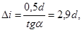
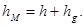

Министерство монтажных и специальных строительных работ СССР
Утверждена
Министерством монтажных
и специальных строительных
работ СССР
28 июня 1977 г.
ИНСТРУКЦИЯ
ПО МОНТАЖУ КОНТАКТНЫХ СЕТЕЙ
ПРОМЫШЛЕННОГО И ГОРОДСКОГО
ЭЛЕКТРИФИЦИРОВАННОГО ТРАНСПОРТА
ВСН 13-77
ММСС СССР
Москва «Энергия» 1979
Инструкция разработана ВНИИпроектэлектромонтажем.
Приведены основные нормы, правила и указания по сооружению контактных сетей промышленного и городского наземного электрифицированного транспорта, отражающие передовой опыт электромонтажных организаций. Учтены требования нормативных и директивных материалов Госстроя и Минмонтажспецстроя СССР. Инструкция предназначена для мастеров, бригадиров и электромонтажников, связанных с монтажом контактных сетей, а также может быть использована инженерно-техническим персоналом проектных и эксплуатационных организаций.
С выходом в свет настоящей Инструкции отменяется «Инструкция по монтажу контактных сетей промышленного и городского электрического транспорта» МСН 13-63/ГМСС СССР.
|
Минмонтажспецстрой СССР |
Ведомственные строительные нормы Инструкция по монтажу контактных сетей промышленного и городского электрифицированного транспорта |
ВСН 13-77 ММСС СССР взамен МСН 13-77 ГМСС СССР |
1.1. Сооружение контактных сетей должно производиться по утвержденным проектам с соблюдением требований действующих Правил устройства электроустановок (ПУЭ), строительных норм и правил (СНиП), настоящей Инструкции и других нормативных документов.
1.2. При монтаже контактных сетей следует применять прогрессивную технологию и индустриальные методы, перенося большинство работ за пределы зоны монтажа: на заводы, полигоны и в мастерские.
1.3. Материалы и конструкции, применяемые при сооружении контактной сети, должны соответствовать утвержденному проекту, требованиям государственных стандартов и технических условий.
1.4. Элементы оборудования контактной подвески, находящиеся под напряжением, должны быть удалены:
а) от опорных конструкций на расстояние (по горизонтали), м, не менее;
1,5 - для городского электрифицированного транспорта;
0,8 - для промышленного электрифицированного транспорта системы постоянного тока;
1,0 - для промышленного электрифицированного транспорта системы переменного тока;
б) от оборудования ближайшей линии - на расстояние не менее 1,5 м (в стесненных условиях допускается 1 м).
1.5. Несущие тросы трамвайных цепных контактных подвесок должны иметь одну ступень изоляции относительно поддерживающих их устройств, а несущие тросы троллейбусных цепных подвесок, кроме того, должны быть изолированы от находящихся под напряжением элементов контактной сети. Оба несущих троса троллейбусной цепной подвески рекомендуется секционировать путем установки в них изоляторов через каждые 5-6 пролетов подвески.
|
Внесены ВНИИпроектэлектромонтажем |
Утверждены Минмонтажспецстроем СССР |
Срок введения |
В простых и фиксирующих гибких поперечинах изоляция должна устанавливаться:
в местах крепления контактных проводов к поперечинам;
между соседними линиями, если расстояние между ними более 6 м, на расстоянии 1,5 - 2 м от контактного провода;
на расстоянии 1,5 - 2 м от контактного провода в сторону крепления поперечины к опорным конструкциям;
посередине между двумя линиями, если расстояние между ними 3-6 м;
в местах крепления поперечин к опорным конструкциям.
1.6. В простых и цепных троллейбусных подвесках номинальное расстояние между контактными проводами одной линии должно составлять 0,50±0,02 м.
Примечание. При применении в узле подвешивания пряжечных изоляторов ИП-1 это расстояние должно составлять 0,48 м, изоляторов ИП-2 - 0,5 м, изоляторов из дельта-древесины - 0,52 м. В эластичной контактной подвеске на наклонных струнах расстояние между контактными проводами одной линии может быть увеличено до 0,7 м.
На специальных частях контактной сети отклонение от номинального расстояния между проводами допускается от 0,4 до 0,7 м.
1.7. В местах пересечения трамвайных или троллейбусных линий с неэлектрифицированными железнодорожными путями, а также на путях, по которым предусмотрено совмещенное движение железнодорожного и трамвайного подвижного состава, контактные провода следует располагать на высоте не ниже 5,75 м относительно головки железнодорожного рельса.
1.8. Пересечения и взаимные сближения контактных сетей промышленного электрифицированного транспорта, трамвая и троллейбуса с линиями связи и радиофикации необходимо осуществлять в соответствии с требованиями ГОСТ 67-67.
Пересечения контактных сетей с проводами линий связи и радиофикации допускаются только в пролетах между опорами контактной сети под углом около 90, но не менее 45°.
Нижние провода линий связи, пересекающие контактные сети (с учетом наихудших метеорологических условий для данной местности: гололеда, измороси или максимальной температуры), следует располагать в пролете пересечения на высоте не менее 8 м от головки рельса и не менее 10,5 м от полотна дорожного покрытия (для троллейбуса).
1.9. Пересечения и сближения воздушных линий электропередачи (ВЛ) напряжением до 1000 В с проводами и тросами контактных сетей должны выполняться в соответствии с требованиями гл. 11-4 ПУЭ [3].
При пересечении ВЛ напряжением до 1000 В с контактными проводами и несущими тросами трамвайных и троллейбусных линий провода ВЛ при наибольшей стреле провеса следует располагать на высоте не менее 8 м от головки рельса трамвайной линии и не менее 10,5 м от полотна дорожного покрытия (для троллейбуса).
При этом во всех случаях расстояние от проводов ВЛ до несущего троса или контактного провода должно быть не менее 1,5 м.
1.10. Опоры контактной сети необходимо удалять от ВЛ напряжением до 1000 В на расстояние (в плане) не менее 1,5 м (в стесненных условиях - не менее 1 м).
1.11. ВЛ напряжением до 1000 В, проходящие параллельно трамвайным и троллейбусным линиям, как правило, должны быть расположены вне зоны, занятой контактной сетью, включая и опоры.
Допускается расположение проводов ВЛ напряжением до 1000 В над поперечинами контактной сети, только если по местным условиям опоры этой сети отклоняются от нормального размещения по отношению к проезжей части (на площадях, разворотных кольцах, криволинейных участках пути и др.) на протяжении не более 50 м.
При этом необходимо соблюдать следующее:
поперечины и несущие тросы на участке пересечения должны иметь двойную изоляцию от контактных проводов;
расстояние по высоте от проводов ВЛ до поперечин и несущих тросов контактной сети (при наиболее неблагоприятных сочетаниях температуры и нагрузки) должно быть не менее 1,5 м.
1.12. Пересечения и сближения ВЛ напряжением свыше 1000 В с железнодорожными путями и трамвайными и троллейбусными линиями должны быть выполнены в соответствии с требованиями гл. 11-5 ПУЭ [1].
1.13. Расстояние крайнего (правого) по ходу контактного провода троллейбуса от границы проезжей части (лицевой грани борта дороги или края дорожного покрытия) должно быть, м:
а) на прямолинейных участках:
при трех и менее полосах одностороннего движения - 2 - 3,5;
при количестве полос одностороннего движения более трех - до 4;
на узких участках улицы - 1,5;
у остановочных пунктов и «карманов» - до 5;
б) на криволинейных участках:
на входе и выходе с кривой - 1,5;
в средней части кривой - 1;
в средней части кривой в особо трудных условиях поворота - не менее 0,3.
На улицах и дорогах с двусторонним движением указанные расстояния относятся к левому крайнему проводу по отношению к осевой линии (при левых поворотах троллейбуса).
1.14. Расстояния между линиями троллейбуса и трамвая должны соответствовать данным табл. 1.
Таблица 1
|
Расстояние от троллейбусного контактного провода, м, до ближайшего |
||
|
рельса трамвая |
контактного провода соседней линии троллейбуса |
|
|
Параллельное движение |
||
|
Пассажирские |
3,5 2,0 |
3,0 1,5 |
|
Служебные и грузовые |
2,5 1,5 |
2,0 1,0 |
|
Депо, ремонтных мастерских и заводов |
2,5 1,5 |
- 1,0 |
|
Встречное движение |
||
|
Пассажирские |
4,0 2,5 |
3,5 1,5 |
|
Служебные и грузовые |
3,0 2,0 |
3,0 - |
|
Депо, ремонтных мастерских и заводов |
3,0 2,0 |
- 1,0 |
Примечания: 1. В числителе указаны расстояния для нормальных условий, в знаменателе - для стесненных. 2. На перекрестках улиц и в местах стрелочных слияний расстояние между соседними проводами соседних пассажирских троллейбусных линий может быть уменьшено до 1 м.
2.1. Заказчик или генподрядчик должен передать монтажной организации всю проектную и техническую документацию согласно [6, п. 1.24]:
проектно-сметную документацию на весь объем или этап строительства, согласованную и утвержденную в установленном порядке в соответствии с [5] и ведомственными правилами;
типовые и рабочие чертежи контактных подвесок, специальных частей контактной сети;
рабочие чертежи нетиповых конструкций;
разрешение исполкома горсовета на производство строительно-монтажных работ (в случае необходимости).
2.2. Рабочие чертежи должны содержать:
а) планы трассы контактной сети с указанием:
размещения линий в проездах, расстояний от линий до границ проездов и до соседних линий электрифицированного транспорта;
размещения опор контактной сети с выборочной привязкой их к постоянным ориентирам;
типов опор и кронштейнов, марок проводов, стальных канатов и стальной проволоки; длины пролетов и высоты закрепления поперечин расположения зигзагов и выносов контактного провода относительно оси пути;
поперечных разрезов контактной сети в характерных или сложных местах (при отсутствии такого разреза в типовых чертежах) с размещением изоляции и арматуры и указанием всех необходимых размеров;
б) конструктивные чертежи нестандартного (нетипового) оборудования и узлов - проходов контактной сети в различных сооружениях (в туннелях, под мостами, внутри депо и т.д.);
в) схемы питания и секционирования контактной сети, дистанционного управления, питающих и отсасывающих линий;
г) согласования пересечений с воздушными и кабельными линиями электропередачи.
2.3. Для сложных трасс контактной сети рекомендуется разработать проект производства электромонтажных работ (ППР), включающий в себя все стадии работ [7, п. 1.6].
2.4. В ППР, как и в основном проекте, должны быть предусмотрены максимальная индустриализация, механизация и прогрессивная технология работ.
2.5. Проект производства электромонтажных работ разрабатывает строительно-монтажная организация или по ее заказу проектная организация в соответствии с требованиями [14].
2.6. В проекте производства электромонтажных работ должны быть дополнительно приведены:
замечания по проекту;
уточненные объемы работ по проекту, а также комплектовочные ведомости на оборудование, узлы, детали, подлежащие изготовлению вне зоны монтажа, в том числе в мастерской (если таких ведомостей нет в рабочем проекте);
схемы организации и основные способы установки опор, монтажа подвесок и контактного провода с точным указанием объемов работ (в натуральных измерителях) в целом и по участкам;
наименования и адреса предприятий, изготовляющих опоры, металлоконструкции, узлы и детали контактной сети;
график размещения заказов и поступления оборудования, материалов и т.п. с указанием железнодорожной станции назначения для получения грузов;
краткая характеристика подъездных дорог и складского хозяйства;
перечень транспортных средств для доставки грузов к объектам работ (участкам);
график подготовительных и основных работ на трассе с указанием норм выработки механизмов и других показателей (количества и состава бригад и звеньев), а также сетевые графики работ, согласованные со смежными организациями;
перечень инструментов, приспособлений и механизмов для бригадного и индивидуального пользования;
рекомендации по организации связи на участках трассы;
указания по подготовке рабочих мест и мероприятия по технике безопасности;
спецификации инвентаря и защитных средств по технике безопасности.
3.1. Руководители работ (начальники колонн, производители работ, мастера, бригадиры), персонал участка инженерной подготовки производства (УИПП) и другие работники, непосредственно осуществляющие сооружение контактной сети, обязаны до начала работ изучить [14, 15] и настоящую Инструкцию.
Каждый монтажник должен пройти инструктаж по технике безопасности.
3.2. По материалам проекта и ППР участку инженерной подготовки производства следует определить необходимые материально-технические и людские ресурсы, составить и выдать заказы заводам или мастерским на изготовление элементов (узлов) контактной сети (приложение 1), уточнить графики работ, заявки и т.д., составить заявки на средства механизации (приложение 2).
3.3. При составлении заказов основное внимание необходимо уделить индустриализации заготовок элементов контактной сети. Комплектовать элементы опорных конструкций и собирать конструкции и детали в узлы следует на заводах или в мастерских, а готовые элементы и узлы отгрузить на объекты монтажа.
3.4. Мастерским должны быть выданы заказы на изготовление и сборку гибких поперечин в полном объеме. Если к моменту составления заказов опоры еще не установлены, необходимо выдать заказы на изготовление гибких поперечин в две стадии (см. п. 6.2).
Заказы оформляет замерщик.
3.5. Для заготовки гибких поперечин в полном объеме для сложных перекрестков троллейбусных контактных сетей заказы в мастерские следует выдавать после выполнения УИПП следующей работы:
вместо сложных чертежей перекрестков, приведенных в проектах, по замерам, выполненным замерщиками, составлены планы перекрестков в масштабе 1:100;
места установки поддерживающих конструкций определены в натуре и перенесены на планы перекрестков. При этом измерены расстояния между опорами и данные записаны в таблицу;
на планы перекрестков нанесены линии прохода контактных проводов и подвесок;
замерены на плане (с помощью измерителя и линейки) расстояния между элементами контактной сети (изоляторами, подвесами и т.п.) и выполнены эскизы поперечин.
4.1. До начала работ необходимо создать запас материальных и технических ресурсов, обеспечивающий непрерывность работ с применением комплексной механизации.
Обеспечивать сооружения контактных сетей материально-техническими ресурсами следует по календарному графику, увязанному с сетевым графиком производства строительных и монтажных работ.
4.2. Сроки, последовательность и основные решения по организации строительных, монтажных и специальных работ должны быть согласованы между подрядной и субподрядной организациями и заказчиком.
4.3. Сооружать контактную сеть необходимо комплексно-механизированной бригаде поточным методом.
Комплексные бригады поточным методом в каждом анкерном пролете выполняют следующие виды работ:
предварительные обходы и разметки трасс;
разбивку опор в натуре и рытье котлованов;
установку крюков на стенах зданий;
установку фундаментов, опор, устройство монолитных фундаментов, армирование и маркирование опор;
заготовку и монтаж гибких поперечин для простых и цепных подвесок, кронштейнов, консолей, фиксаторов и т.п.;
раскатывание, подъем, соединение и крепление тросов и контактных проводов;
натяжение и продольное регулирование контактного провода и монтаж сопряжений анкерных участков;
монтаж воздушных пересечений, стрелок, кривых держателей, секционных изоляторов, разъединителей, грозовых разрядников, пунктов питания и т.п.;
регулирование натяжения тросов и проводов, положения контактного провода в плане и по высоте;
восстановление окраски опор, кронштейнов, консолей и т.п.
Каждое звено бригады должно выполнять в одном анкерном пролете определенный вид работы. Комплексная бригада может работать одновременно в нескольких анкерных пролетах.
4.4. При сложном и большом объеме строительно-монтажных работ монтаж следует вести несколькими бригадами параллельно на одном участке трассы.
4.5. Небольшие по сложности и трудоемкости работы по сооружению контактной сети следует выполнять поточным методом. В этом случае отдельные звенья бригады должны производить в анкерном пролете все виды работ последовательно.
4.6. Во избежание задержек при сооружении контактной сети необходимо своевременно выполнять подготовительные работы и рационально использовать механизмы и приспособления.
Для успешной эксплуатации механизмов и транспортных средств рекомендуется прикреплять к монтажному участку передвижную ремонтную мастерскую, работающую по специальному графику, для мелких ремонтных работ и профилактики машин и механизмов.
4.7. При монтаже контактных сетей большой протяженности трассу прокладки следует разбить на отдельные участки. Протяженность участка для установки и монтажа опор, контактных проводов и тросов устанавливают исходя из условий ритмичности ведения работ и переходов звеньев с одного участка на другой и, по возможности, прямой видимости работающих производителем работ.
5.1. Порядок и условия приемки и хранения опор, электрооборудования, проводов, кабелей и материалов на складах должны удовлетворять требованиям ГОСТ, технических условий и инструкций заводов-изготовителей.
5.2. Металлические и железобетонные стойки опор рекомендуется хранить уложенными на опорных деревянных прокладках по видам, типоразмерам, сортам и партиям на специально оборудованных площадках, имеющих устройства для отекания ливневых вод.
5.3. Стойки железобетонных опор следует укладывать в штабеля не более чем в пять рядов. Между штабелями должен быть обеспечен с одной стороны проход шириной 1,5 м, с другой - проезд для кранов и автомашин шириной 5 м.
Нижний ряд стоек железобетонных опор следует уложить на двух деревянных подкладках высотой 0,15-0,25 м, расположенных от торца стойки на расстоянии 1/5 длины опоры. Высота подкладок должна обеспечивать зазор не менее 0,15 м между нижним рядом стоек и землей.
Между рядами стоек также должны укладываться подкладки, расположенные строго по вертикали одна над другой. Сечение подкладок должно быть не менее 100 мм2.
5.4. Провода, стальные канаты и проволоку, рассортированные по маркам и сечениям, следует хранить на барабанах или в бухтах под навесом, а арматуру, специальные части, электрооборудование и материалы, рассортированные по типам и размерам, - в закрытых складах.
5.5. Металлические детали арматуры, специальных частей и электрооборудования, не защищенные от коррозии, а также резьба болтов и гаек должны быть смазаны солидолом (ГОСТ 4366-76).
Отбракованные детали, изделия и материалы нужно хранить отдельно.
5.6. Легковоспламеняющиеся материалы необходимо хранить с соблюдением правил пожарной безопасности в специальных огнестойких помещениях или на складах, заглубленных в землю.
5.7. До начала работы по сооружению контактных сетей участок комплектации, складирования и транспортирования службы подготовки производства должен получить со склада и доставить на монтаж опоры, провода, стальные канаты, арматуру, изоляторы, специальные части и другие элементы контактной сети, а также необходимые для монтажа механизмы, приспособления и инструменты.
5.8. Каждую стойку опоры следует осмотреть для определения ее целости (отсутствия трещин, сколов и других дефектов), проверить документы, подтверждающие соответствие опор требованиям ГОСТ 21052-75 (акты ОТК и сертификаты завода-изготовителя, протоколы испытаний и др.). Дополнительные требования к опорам приведены в пп. 7.4.4 и 7.4.5.
На наружной поверхности каждой стойки должны быть четко нанесены несмываемой краской линия уровня заделки ее в грунт и выше нее следующие маркировочные надписи: марка и товарный знак предприятия-изготовителя, марка стойки, дата изготовления стойки, штамп ОТК, масса стойки.
5.9. Конструкция железобетонных опор для контактных сетей кроме предварительно-напряженной арматуры должна включать несущую ненапряженную арматуру, предохраняющую опору от мгновенного обрушения при перегрузках или повреждении.
5.10. Провода, стальные канаты и проволоку необходимо тщательно осмотреть, проверить на соответствие спецификациям проекта, требованиям ГОСТ и ТУ.
5.11. Вся арматура и изоляторы всех типов должны пройти контрольную проверку в следующей последовательности: внешний осмотр, проверка комплектности, размеров, качества металла и антикоррозионного покрытия.
5.12. Запрещается применять опоры, материалы, арматуру, специальные части и другие изделия, не соответствующие рабочим чертежам, требованиям действующих ГОСТ и ТУ.
5.13. Монтажные механизмы и приспособления (лебедки, блоки, полиспасты и т.п.), а также такелажные тросы следует подбирать с пределом прочности, соответствующим наибольшим тяговым силам, ожидаемым при сооружении контактной сети.
Все такелажные тросы должны быть оконцованы коушами.
5.14. Отбирая инструменты и приспособления, следует проверить их исправность. Особо тщательно должны быть проверены натяжные приспособления.
5.15. Основные монтажные приспособления и защитные средства (подъемные и съемные вышки, раскаточные приспособления, лебедки, полиспасты, стяжные муфты, крюковые и клиновые зажимы, предохранительные пояса, диэлектрические перчатки и т.д.) должны быть пронумерованы и зарегистрированы в прошнурованной книге, хранящейся у производителя работ. В нее необходимо также записать даты и результаты проведенных освидетельствований и испытаний. Механизмы и такелажную оснастку с истекшим сроком периодических испытаний применять запрещается.
6.1. Заготавливать и комплектовать элементы и узлы контактной сети следует в мастерских по работам чертежам проекта или по эскизам, составленным УИПП монтажной организации.
6.2. Заготавливать гибкие поперечины необходимо в полном объеме по эскизам и данным, приведенным в формах заказов (приложение 3), в одну стадию.
Если опоры еще не установлены на трассе прокладки контактной сети, гибкие поперечины следует изготавливать в две стадии. Например, для троллейбусных контактных сетей сначала рекомендуется изготовить узлы креплений поперечин и оттяжек к опорам (рис. 1, а) и стенам зданий (рис. 1, б), вертикальные подвески (струнки) (рис. 2) и средние части гибких поперечин (приложение 3), а затем собрать заготовки в гибкую поперечину. На гибких поперечинах закрепляются также трамвайные (рис. 3) или троллейбусные (рис. 4) подвесы.
6.3. Сложные гибкие поперечины для перекрестков и пересечений контактных проводов следует изготавливать в полном объеме по эскизам УИПП, причем каждую поперечину отдельно.
Плиты кривых держателей КД-25/45 врезают в поперечины непосредственно в мастерской, а вместо сходных и управляемых стрелок (учитывая их значительную массу) временно врезают планки из стальной полосы, размеры которых соответствуют размерам плит стрелок.
6.4. Заготовленные гибкие поперечины сворачивают в бухты диаметром 1,2-1,5 м и на каждую из них подвязывают бирку с указанием заказа, наименования улицы и номеров опор.
6.5. Элементы цепной подвески (скользящие подвесы, узлы крепления подвесов к кронштейнам, фиксирующие подкосы и т.п.) комплектуют и собирают в узлы также в мастерской.
6.6. При большом объеме заготовительных работ рекомендуется выделить в мастерской специальную площадку, оснастив ее механизмами, приспособлениями и инструментами, необходимыми для рихтовки, очистки, резки и закрутки стальной проволоки.
6.7. При небольшом объеме работ и в случаях особой сложности заготовок можно собирать элементы систем на месте монтажа. В этом случае разматывать проволоку и стальной канат следует вдоль тротуара так, чтобы не мешать движению транспорта и пешеходов.
Рис. 1. Виды креплений гибких поперечин и оттяжек:
1 - опора; 2 - хомут; 3 - пряжечный изолятор; 4 - стальная проволока; 5 - натяжная муфта; 6 - концевой клиновой зажим; 7 - стальной канат; 8 - стенной крюк; 9 - шумоглушитель
6.8. Соединять проволоку и стальной канат с пряжечными изоляторами, подвесами, струновыми зажимами и т.п. следует «пальцами» или болтами.
Рис. 2. Вертикальная подвеска:
а - с двумя изоляторами; б - с одним изолятором; 1 - струновой зажим; 2 - стальная проволока; 3 - пряжечный изолятор
Рис. 3. Крепление трамвайных подвесов на гибких поперечинах:
а - для прямого участка; б - оттяжных; в - гибкого неизолированного; г - для кривого участка; 1 - подвес ПРО; 2 - подвес ПРЦ; 3 - подвес КОС; 4 - подвес КОЦ; 5 - прямой бугель; 6 - подвес КСЦ
Рис. 4. Крепление троллейбусных подвесов на гибких поперечинах:
а - жесткого парного; б - гибкого для прямого участка; в - фиксирующего; г - маятникового; д - гибкого для кривого участка; 1 - троллейбусная парная подвеска; 2 - прямой бугель; 3 - серьга; 4 - изолятор ИКП; 5 - подвесной зажим; 6 - косой бугель; 7 - двойная вилка; 8 - подвес; 9 - пряжечный изолятор; 10 - скоба
Рис. 5. Ключи для закрутки
6.9. Проволочные закрутки следует выполнять в мастерских на резьбонарезном станке, а на месте монтажа - специальным ключом (рис. 5, а). При этом завивка стальной (семафорной) оцинкованной проволоки (ГОСТ 3617-71) диаметром 5 мм должна быть выполнена не менее чем четырьмя витками. Временные закрутки проволоки можно выполнять вручную.
6.10. Оконцевание стальных канатов (ГОСТ 3062-69) необходимо выполнять концевыми клиновыми зажимами ЗКК. Конец каната длиной не менее 0,15 м должен быть свободен и забандажирован. Допускается также заплетать концы каната с помощью специального ключа (рис. 5, б). Прочность завивки достигается сильным натяжением жил каната, закладываемых через прорезь ключа в два выреза на его рукоятке, и закреплением концов предыдущих жил под одним-двумя витками последующих. Общая длина заплетки каната должна быть не менее 0,18 м.
Оконцовывать стальной канат можно также зажимами ЗТ-ККП или специальными гильзами, обжимаемыми прессом. В образованную при этом петлю вкладывается коуш.
6.11. Монтажные крючки, необходимые для временного подвешивания контактного провода к поддерживающим устройствам при его монтаже, следует изготавливать из стальной оцинкованной проволоки диаметром 5 мм в мастерских.
Для подвешивания контактных проводов на прямолинейных участках следует изготовить крючки из отрезков проволоки длиной 0,5 м, отогнув концы проволоки длиной 15 мм в разные стороны под углом 180° (рис. 6, а).
Рис. 6. Монтажные крючки
Для подвески провода на криволинейном участке контактной сети отрезки проволоки длиной 0,6 - 0,7 м нужно изогнуть посередине, а затем оба конца длиной 15 мм отогнуть в одну сторону (рис. 6, б). Для этой же цели можно изготовить хомутики (рис. 6, в), обеспечивающие более свободное перемещение контактного провода при его монтаже.
7.1.1. Перед началом работ по определению мест установки опор представителями заказчика проектной и монтажной организаций должен быть составлен акт о приемке трассы линии.
7.1.2. Перед определением мест установки опор следует произвести обход трассы сооружаемой контактной сети, промерить участки пути и отметить пикеты или проверить расстояния между существующими пикетами. Пикеты, как правило, следует отмечать через каждые 100 м между нитками одного пути или в междупутье, забивая деревянные колышки или нанося отметку краской на шейке рельса.
7.1.3. Определение мест установки опор контактной сети промышленного электрифицированного транспорта следует начинать со станционных путей, а городского - с крайних опор сетевых узлов.
Для промышленного электрифицированного транспорта и трамвая установка опор определяется вначале на стрелках, а для троллейбусов - в местах установки специальных частей (стрелок, пересечений, секционных изоляторов и т.п.).
7.1.4. Места установки опор у переездов во избежание повреждения опор необходимо располагать на расстоянии не менее 4 - 5 м от переезда.
7.1.5. Положение оси опоры отмечается вертикальной чертой, которую вместе с номером и типом опоры следует нанести несмываемой краской на шейке наружного рельса с полевой стороны. Ось котлована для установки опоры или фундамента отмеряется по перпендикуляру от оси пути при помощи рейки шаблона. В место установки опоры забивается колышек.
7.1.6. При определении мест установки анкерных опор необходимо учитывать возможность применения анкерных оттяжек. При использовании последних следует отметить места их установки.
7.1.7. Размечать границы котлованов под фундаменты опор следует с учетом обеспечения установки опор в одну линию.
7.1.8. При определении мест установки опор на местности одновременно заполняется соответствующий журнал (приложение 4).
7.1.9. Места установки опор контактной сети передвижных путей промышленного электрифицированного транспорта необходимо отмечать на рельсах мелками или краской при установке опор, связанных с рельсами; деревянными колышками, забиваемыми в землю, при установке опор, не связанных с рельсами.
7.1.10. При определении мест установки опор отклонения от проектных решений при обоснованной необходимости допускаются:
при пролетах на прямолинейных участках сети +1 ÷ -2 м (на криволинейных участках отклонения не допускаются). Большие отклонения пролета должны быть согласованы с проектной организацией;
для расстояний между опорами и осью пути трамвайной линии до +150 мм (уменьшение не допускается).
7.2.1. Разработка котлованов под опоры контактной сети может быть начата только после определения мест установки опор в соответствии с планом контактной сети и указаниями [8] и [7, п. 2.2, а-г].
7.2.2. Размеры котлованов зависят от характеристики (категории) грунта и определяются по проекту.
7.2.3. Разрабатывать котлованы в местах, где имеются действующие подземные коммуникации (электрические кабели, трубопроводы и пр.), следует с соблюдением следующих условий:
руководитель работ не позднее чем за сутки до разработки котлованов ставит в известность заинтересованные организации о месте и времени этих работ;
организации, эксплуатирующие подземные коммуникации, выдают разрешения на производство земляных работ и устанавливают временные сигналы - указатели направления кабеля или других подземных коммуникаций на участке разработки котлованов;
для наблюдения за устройством котлованов в указанных местах организация, эксплуатирующая коммуникации, назначает своего ответственного представителя.
7.2.4. Разрабатывать котлованы необходимо буровыми машинами БМ-202, БМ-302, БКМА-1/3,5 с буром диаметром 800-1200 мм; экскаваторами с прямой и обратной лопатой (например, на базе трактора «Беларусь») с последующим выравниванием стенок котлована, котлованокопателями, а в труднодоступных местах - средствами малой механизации. Для рытья котлованов на насыпях до 3,5 м рекомендуется применять многоковшовые котлованокопатели МКТС-2 и МКТС-3. В стесненных условиях, где близко расположены подземные коммуникации и сооружения, разрабатывать котлованы допускается вручную с применением необходимых мер по обеспечению безопасности работ и сохранности подземных сооружений. В этих случаях следует применять штыковые лопаты длиной 1 м.
7.2.5. Размеры котлована в плане должны обеспечивать свободную установку опоры в проектное положение с учетом устройства крепления (заливки монолитного фундамента). По глубине котлован должен соответствовать проектным размерам; допускаемое отклонение ±0,1 м.
7.2.6. При обнаружении в котловане грунта с несущей способностью ниже предусмотренной проектом способ усиления фундаментов опор определяет строительная организация совместно с представителем заказчика и согласовывает с проектной организацией.
7.2.7. При разработке котлованов под сборные фундаменты грунт, вынутый из котлована и предназначенный для засыпки пазух, следует располагать рядом с котлованом или на обочине, учитывая расстояние от ближайших строений. Необходимо принять меры, предохраняющие грунт от промерзания. Излишний грунт должен быть вывезен.
7.2.8. Разрабатывать котлованы следует так, чтобы для всех опор, устанавливаемых на прямолинейных участках и с внешней стороны кривых, стенка котлована располагалась от оси пути на расстоянии, указанном в проекте (с учетом увеличения размера фундамента). В целях обеспечения прилегания фундамента опоры вплотную к ненарушенному грунту стенки котлована должны быть вертикальными. Горизонтальная площадка на дне котлована должна быть выровнена и уплотнена (утрамбована).
7.2.9. От снежных заносов или завалов (при очистке полотна или проезжей части дороги от снега) разработанные котлованы следует закрыть переносными щитами.
7.2.10. При применении опор с оттяжками одновременно с подготовкой котлованов следует установить анкеры для оттяжек. Закапываемые в грунт бетонные или железобетонные анкеры должны упираться своей рабочей поверхностью в нетронутый грунт, а штанги анкеров - располагаться строго по направлению оттяжек.
7.2.11. Анкерные оттяжки опор, закрепляемые в грунт, в местах движения транспорта и пешеходов необходимо защищать охранными столбами или тумбами. Оттяжки на опоре следует закреплять на высоте не менее 5 м от уровня проезжей части или покрытия тротуара.
7.2.12. С целью предотвращения осыпания и обвалов при рытье котлованов в слабых грунтах необходимо укрепить их стенки досками толщиной не менее 3 см, прижимаемыми к стенкам котлованов через вертикальные стойки горизонтальными распорками толщиной 13-15 мм. Вместо досок можно применять распорные деревянные щиты многократного пользования. При значительном притоке в котлован воды ее необходимо откачать и установить шпунтовые ограждения.
7.3.1. Анкерные болты фундамента, изготавливаемого на месте (на пикете), следует устанавливать с помощью металлического шаблона-кондуктора (соответственно каждому типу фундамента). В шаблон вставляются болты, закрепляемые на проектной высоте гайками; при этом проверяется расстояние от анкерных болтов до опалубки для обеспечения проектного защитного слоя бетона. При бетонировании болты должны сохранять строго вертикальное положение. Нарезная часть болтов должна быть защищена смазкой или оберткой из толя или бумаги, закрепленной проволокой.
7.3.2. Укладку бетона, уход за ним, контроль за прочностью и ведение журнала бетонных работ следует производить в соответствии с требованиями [10].
7.3.3. Уход за бетоном необходимо производить с соблюдением следующих правил:
открытые поверхности бетона следует укрывать и увлажнять;
поливать бетон при температуре +5°С и выше следует в течение первых 3 сут днем не реже чем через каждые 3 ч и не менее 1 раза ночью; в последующее время - не реже 3 раз в сутки при укрытии бетона влагоемкими материалами (песком или опилками). Длительность перерыва между поливками может быть увеличена примерно в 1,5 раза;
при температуре воздуха ниже +5°С бетон поливать не следует.
7.3.4. Бетон, находящийся в соприкосновении с текучими грунтовыми водами, должен быть защищен в течение 3 сут от их воздействия путем временного отвода воды, устройства изоляции и другими средствами.
7.3.5. Засыпать пазухи котлованов и убирать крепления при бетонировании фундаментов следует после достижения бетоном прочности, обеспечивающей при распалубке сохранность поверхности и кромок углов фундамента. Засыпать пазухи котлованов необходимо слоями по 20-30 см, тщательно их утрамбовывая. Засыпать пазухи котлованов зимой следует щебнем и бутом. Учитывая возможную осадку грунта при оттаивании, необходимо увеличить высоту засыпки на 10 % по сравнению с глубиной котлована.
7.3.6. Освидетельствовать и принять фундаменты следует согласно [7, п. 3.5].
При приемке необходимо проверить:
состояние фундаментов (отсутствие трещин и оголений арматуры);
расположение анкерных болтов, диаметр и длину их нарезной части;
наличие отклонений опорной поверхности бетонного или железобетонного фундамента от горизонтали в сторону, противоположную действию основных нагрузок, которые не должны превышать 1/30 (уклон опорной поверхности фундамента в сторону действия основных нагрузок не допускается);
наличие отклонений от проектного положения отметок верхней поверхности фундаментов, которые не должны превышать 0,1 м;
гидроизоляцию (при агрессивных грунтовых водах).
7.4.1. Для контактных сетей промышленного и городского электрифицированного транспорта, как правило, следует применять равнопрочные опоры, выдерживающие внешние горизонтальные нагрузки, приложенные в любом направлении.
Для пассажирских линий городского электрифицированного транспорта рекомендуется применять самонесущие опоры, воспринимающие полную нагрузку без разгрузочных (анкерных) оттяжек. Как исключение, на грузовых и служебных линиях, на территориях депо, ремонтных мастерских и заводов, во дворах, а также в отдельных случаях на загородных линиях при удалении опор не менее чем на 10 м от проезжей части их допускается устанавливать с оттяжками. При этом результирующая нагрузка (определяется по данным проекта) не должна превышать нормативную более чем на 25 % для железобетонных опор и более чем на 50 % для металлических.
7.4.2. Для контактных сетей городского электрифицированного транспорта опоры в основном рекомендуется устанавливать в котлованы с ненарушенным грунтом с последующей заливкой бетоном.
В отдельных случаях для железобетонных и металлических опор могут применяться железобетонные сборные фундаменты, а также фундаменты с анкерными болтами или стаканами.
Консольные железобетонные опоры следует закреплять непосредственно в грунт или на одиночных фундаментах. Установка опор без фундаментов допускается лишь в скальных грунтах и на временных участках контактной сети при условии закрепления опор лежнями.
7.4.3. Для контактных сетей промышленного электрифицированного транспорта опоры можно устанавливать как непосредственно в грунт (рис. 7, а, б, г), так и на фундамент (рис. 7, в, д, е). Опоры с большой нагрузкой (анкерные и опоры для гибких поперечин) должны закрепляться на фундаментных конструкциях, состоящих из двух и более фундаментов, работающих в этом случае на выдергивание и вдавливание (рис. 7, д, е). Консольные опоры промышленного электрифицированного транспорта, установленные непосредственно в грунт и работающие на опрокидывание, для увеличения устойчивости должны снабжаться лежнями (рис. 7,б). Лежни следует устанавливать вплотную к опоре.
7.4.4. Железобетонные стойки опор перед установкой необходимо проверить на соответствие требованиям ГОСТ 21052-75. Отверстия в верхней части конических пустотелых консольных опор, если они не используются для установки кронштейнов освещения, должны быть заделаны. Поверхность опор должна быть гладкой, без кривизны, наплывов и вмятин. Допускается не более двух раковин диаметром до 15, глубиной до 5 мм на 1 м опоры по длине. Раскрытие трещин не должно превышать 0,1 мм, а глубина отколов - 5 мм. Не допускается обнажение арматуры на поверхности опор. Нагрузки на стойки железобетонных опор приведены в приложении 6.
7.4.5. На стальных опорах не должно быть погнутых поясов и раскосов, лопнувших швов и других дефектов. Деформированные элементы опоры, работающие на растяжение, выправляют и повторно освидетельствуют.
7.4.6. Грузить и разгружать фундаменты и стойки опор необходимо кранами с использованием грузозахватных приспособлений. Стропить стойки следует в двух точках, расположенных от ее центра тяжести на расстоянии 1/3 длины опоры. Во время подъема, разворота и опускания стоек опор рывки и удары запрещаются. Сбрасывать опоры при разгрузке не допускается.
Рис. 7. Различные способы закрепления опор
Развозить фундаменты и стойки опор по трассе следует на автомашине с одноосным прицепом, специальной платформе, трайлере или тракторе с двухосным прицепом и удлинителем. При перевозке железобетонные фундаменты и стойки опор следует предохранять от толчков, ударов и чрезмерной нагрузки. Центрифугированные опоры следует укладывать на платформу, трайлер или другое транспортное средство по 5 шт. в ряд. В четных рядах опоры нужно укладывать вершинами в одну сторону, в нечетных - в другую. Каждый ярус опор необходимо переложить двумя поперечными деревянными прокладками сечением не менее 40х150 мм, располагая их точно над подкладками нижнего ряда.
7.4.7. На прямолинейных участках контактных сетей трамвая и троллейбуса каждой городской улицы или дороги следует, как правило, устанавливать однотипные опоры. Усиленные опоры на криволинейных участках линий и с анкерами с грузовым компенсатором должны быть по возможности одинаковой высоты с опорами, установленными на прямолинейных участках. В отдельных случаях усиленные опоры допускается размещать внутри дворов с незначительным удалением их от линии застройки. При установке опор вдоль борта проезжей части или края дороги они должны располагаться в одну линию.
7.4.8. Опоры контактной сети городского электрифицированного транспорта следует устанавливать согласно плану на тротуарах или газонах на расстоянии 0,6 м от лицевой грани бортового камня до наружной поверхности опоры. При ширине тротуаров менее 2,5 м опоры следует устанавливать во дворах и зонах зеленых насаждений, а также прикреплять поперечины к зданиям.
7.4.9. Опоры контактной сети трамвая на прямолинейных участках пути необходимо устанавливать с учетом соблюдения минимальных расстояний от поверхности опоры (или ее наружного оформления) до оси пути или рабочего канта ближайшего рельса (табл. 2).
7.4.10. При расстановке опор контактной сети трамвая на криволинейных участках пути следует учитывать необходимость увеличения расстояния установки опор от оси пути (табл. 2): при расположении опор с внешней стороны кривой - на величину выноса угла кузова вагона; при расположении опор с внутренней стороны кривой - на величину свеса середины кузова вагона (указывается в проекте).
7.4.11. Устанавливать опоры в междупутье (центральные подвески) допускается только на путях, расположенных на обособленном полотне, а также при отсутствии условий для установки боковых опор, например, при прохождении линии по дамбам, насыпям, в выемках или в местах с неблагоприятным грунтом (торф, болотистый грунт и т.п.). При этом в междупутье не допускается устанавливать опоры, диаметр которых в цокольной части более 0,35 м, вследствие чего не обеспечиваются требуемые расстояния от опор до проходящего состава. В случае вынужденного применения опор с диаметром в цокольной части более 0,35 м расстояние между осями путей двухпутной линии должно быть соответственно увеличено.
Таблица 2
|
Расстояние от поверхности опоры, м, до |
||
|
оси пути |
рабочего канта ближайшего рельса |
|
|
Пассажирские, грузовые и служебные линии |
2,3 1,6 |
1,538 0,838 |
|
Территории депо, ремонтных мастерских и заводов |
1,9 1,8 |
1,138 1,038 |
Примечание. В числителе - опоры расположены с любой стороны пути, в знаменателе - между путями.
7.4.12. Перед установкой фундамента или опоры в котлован необходимо:
очистить котлован от посторонних предметов, а зимой также от снега и льда;
проверить глубину котлована и размеры его в плане;
проверить положение котлована относительно оси пути;
выровнять стенки котлована;
выровнять и уплотнить дно котлована.
7.4.13. Для предотвращения электрокоррозии арматуры железобетонные опоры следует устанавливать на заранее подготовленную бетонную (гравийную, щебеночную и т.п.) подушку толщиной не менее 0,15 м.
7.4.14. Скреплять опоры контактной сети городского электрифицированного транспорта с различными основаниями рекомендуется:
путем заливки бетонным раствором установленной в котловане опоры;
при помощи анкерных болтов, заделанных в фундаменте, на котором устанавливается опора, имеющая в основании фланец с необходимым количеством отверстий;
путем заливки цементным раствором специального углубления в теле фундамента (стакана), в котором предварительно устанавливается опора;
путем закрепления опоры металлическими клиньями (при установке ее в стальном стакане) с последующей заливкой бетоном.
7.4.15. Устанавливать фундаменты и опоры контактных сетей следует кранами общего назначения (например, ЛАЗ-690, КО-2561Г и др.) или специальными (например, КЛЭП-7). Устанавливать фундаменты необходимо краном с применением стропов.
7.4.16. Проверять правильность установки фундамента 3 следует шаблоном 2 и уровнем 1 (рис. 8). При этом необходимо выверить по горизонтали расстояние от фундамента до оси пути, а по вертикали - положение фундамента относительно головки рельса.
7.4.17. Устанавливать сборные фундаменты в зимнее время необходимо сразу за разработкой котлованов, не допуская разрыва между этими операциями более суток. Фундамент сначала тщательно очищают от снега и льда, а затем устанавливают вплотную к вертикальной стенке котлована для обеспечения его максимальной устойчивости при действии основных нагрузок.
7.4.18. При установке опоры кранами общего назначения ее следует укладывать таким образом, чтобы центр тяжести опоры совпадал с центром отверстия котлована (рис. 9), а при установке краном КЛЭП-7 торец опоры должен находиться на расстоянии 1,5 м от центра котлована (рис. 10). Для сетей промышленного транспорта устанавливать опоры можно автомобильным краном, поставленным на железнодорожную платформу (рис. 11).
7.4.19. Устанавливать опоры для рельсового электрифицированного транспорта рекомендуется способами «с пути» (рис. 12, а) или «с поля» (рис. 12, б), описанными в [7, п. 1.9].
Рис. 8. Проверка положения фундамента
Рис. 9. Выкладка железобетонной опоры перед установкой ее в котлован автомобильным краном общего назначения
Рис. 10. Крепление опоры к телескопической стреле крапа КЛЭП-7:
1 - тросовая затяжка для захвата опоры; 2 - телескопическая стрела; 3 - опорная стрела; 4 - прокладка; 5 - опора
Рис. 11. Установка автомобильного крана К-32 на железнодорожной платформе
Рис. 12. Установка опоры «с пути» и «с поля»
При большом объеме работ по установке опор целесообразно последовательно совмещать развозку опор по трассе с одновременной разгрузкой, установкой и устройством монолитных бетонных фундаментов. Такая технология требует четкой координации работы автомашины с прицепом для перевозки опор, автомобильного крана и бетоновоза. Работы в этом случае выполняются в следующей последовательности:
подъезд автомашин с опорами и автомобильного крана к месту установки опоры;
установка автомобильного крана на выносные опоры (аутригеры) и приведение стрелы крана из транспортного положения в рабочее;
стропка опоры двухконцевым стропом для подъема опоры в горизонтальное положение и перенос к месту установки;
опускание опоры на землю и расстропка одного конца стропа;
подъем опоры до вертикального положения и разворот стрелы крана с опорой в сторону котлована;
опускание опоры в котлован;
разворот опоры для правильной ориентации закладных деталей специальным приспособлением (рис. 13);
выверка положения (расстояния от оси пути до опоры) и выравнивание опоры по вертикали автомобильным краном;
закрепление опоры распорками (рис. 14, а), которые могут быть изготовлены из отходов листового металла, или специальным приспособлением (рис. 14, б);
устройство монолитного бетонного фундамента (только для опор городского электрифицированного транспорта). Бетон для фундамента должен быть разгружен с бетоновоза у котлована до установки опоры. При необходимости ввода в опору кабелей наружного освещения или кабелей питания контактной сети в фундаменте необходимо предусматривать выполнение штробы (отверстия);
съем стропов, поворот стрелы крана и установка ее в транспортное положение.
При установке следующей опоры процесс повторяется.
Для предотвращения обвала стенок котлована при установке железобетонных опор рекомендуется применять упор-ограничитель (рис. 15).
7.4.20. Стропить железобетонные опоры при установке в котлован рекомендуется полуавтоматическим стропом ЗС, стропом с замком-застежкой (рис. 16) или стропом другой конструкции, позволяющим демонтировать его с земли, не влезая на опору. Для предохранения поверхности опоры от механических повреждений при стропке под замки-застежки или другие жесткие детали стропов необходимо устанавливать деревянные подкладки.
7.4.21. Центр тяжести опор указывается в справочных таблицах, прилагаемых к каждому типу поставляемых опор, а место захвата опоры стропом (расстояние от центра тяжести Δi) может быть определено по формуле

где d - диаметр опоры; α - угол наклона висящей на тросе опоры. Обычно этот угол равен 10° (tg 10° равен 0,176).
Рис. 13. Приспособления для разворота опоры:
а - втулочно-роликовое; б - тросовое; 1 - втулочно-роликовая цепь; 2 - зуб; 3 - патрубок; 4 - рукоятка; 5 - опора; 6 - стальной трос; 7 - крюк; 8 - ломик
Рис 14. Закрепление опоры перед заливкой фундамента:
1 - распорки; 2 - замок; 3 - хомут; 4 - стойка; 5 - зажим
Для железобетонных опор конической формы место стропки располагается на расстоянии 0,5-1,0 м от центра тяжести в сторону вершины.
7.4.22. В случае, если невозможно совместить развозку опор с одновременной разгрузкой, установкой и устройством монолитных бетонных фундаментов, устанавливать опоры следует, последовательно выполняя операции, перечисленные в п. 7.4.14.
Рис. 15. Упор-ограничитель и установка с его помощью опоры:
1 - упор-ограничитель; 2 - опора
Рис. 16. Замок-застежка и крепление им троса на опоре:
а - замок-застежка; б - крепление на опоре; 1 - корпус замка; 2 - палец; 3 - коуш; 4 - пружина; 5 - канат
7.4.23. Опоры, устанавливаемые на неблагоустроенных улицах, в зонах зеленых насаждений, во дворах и т.п., должны иметь фундамент с бетонным оголовком, выступающим над уровнем грунта на 0,07-0,1 м для обеспечения отвода воды от основания опоры.
7.4.24. При установке опор во влажных грунтах, агрессивных к бетону и железобетону, заглубленные части железобетонных и стальных опор должны иметь изоляционное битумное покрытие, предохраняющее опоры от коррозии.
7.4.25. Расстояния, м, между фундаментом опоры контактной сети и подземными коммуникациями (согласно требованиям [9, 12]) должны быть следующими:
Силовые кабели и кабели связи.................................................................................. 0,5
Газопроводы низкого, среднего и высокого давления до 1,2 МПа (12 кгс/см2).... 1
Водопроводы, дренажи, теплопроводы, трубопроводы горючих жидкостей....... 1,5
Канализация и водостоки............................................................................................. 3
7.4.26. В местах со слабым грунтом (торф, заболоченные участки трассы, насыпи с крутыми откосами и т.п.) опоры контактной сети необходимо устанавливать в бетонные блочные фундаменты с уширенной полкой (17, а), на сваи-стойки со сборным стаканным оголовком (17, б) или на двухсвайные фундаменты с ростверком и сваями (рис. 17, в) из бетона марки не ниже 400. При свайных фундаментах земляные работы не производятся. Для установки свайных фундаментов необходимо применять вибромолот или вибропогружатель. При этом конструкция свайных фундаментов и методы их погружения не должны допускать повреждений, обнажающих арматуру.
7.4.27. Металлические опоры и металлические детали железобетонных опор должны иметь стойкое антикоррозионное покрытие, а деревянные опоры пропитаны противогнилостным антисептическим составом. При окрашивании опор должна быть сохранена их маркировка.
7.4.28. При установке опор допускаются следующие отклонения от проектных данных:
по глубине заделки опор в грунт - ± 0,1 м;
наклон опор относительно вертикали не должен превышать 1/70 свободной высоты в сторону, противоположную действию нагрузок, и 1/100 длины опоры вдоль оси пути;
наклон анкерных опор (с грузовым компенсатором) относительно вертикали не должен превышать 1/200 свободной высоты в сторону, противоположную действию основной нагрузки;
по длине пролета +1 и -2 м. Если по гидротехническим или другим условиям требуется большее смещение опоры от проектных данных, изменение длины пролета должно быть согласовано с проектной организацией;
по расстоянию от оси пути до опоры +0,15 м. Уменьшение этого расстояния не допускается, а увеличение - только по согласованию с проектной организацией и заказчиком при обеспечении проектного положения подвески на консоли по отношению к оси пути и достаточной прочности опоры.
Рис. 17. Способы закрепления опор контактной сети в слабых грунтах:
1 - присыпка; 2 - торф; 3 - корка; 4 - иольдиевая глина
7.4.29. При установке металлических опор на анкерные болты фундамента необходимо их временно закрепить не менее чем одним анкерным болтом под каждой стойкой.
7.4.30. Выравнивать опоры в вертикальной плоскости допускается не более чем тремя стальными прокладками общей толщиной до 30 мм.
7.4.31. Анкеры для опор с оттяжками следует устанавливать одновременно с фундаментами. Для опор промышленного электрифицированного транспорта верх вертикального анкера должен находиться на уровне условного обреза фундамента, а верх наклонного анкера - на 0,7 м выше обреза фундамента. Высота установки анкера может колебаться на ± 0,2 м. Расстояние между осями вертикального анкера и опоры должно составлять 8 м, а расстояние между верхним концом наклонного анкера и осью опоры - 7,3 м.
Глубина заложения анкера зависит от рода грунта и силы, воспринимаемой оттяжкой; при средней плотности грунта она колеблется от 1,5 до 2 м для городского электрифицированного транспорта и от 2,5 до 3,5 м для промышленного транспорта.
На рис. 18, а показаны анкерные опоры компенсированных подвесок переменного тока, средних анкеровок и анкеровок усиливающих, питающих и других проводов, на рис. 18, б - анкерные опоры всех подвесок постоянного тока, полукомпенсированных подвесок переменного тока, жестких анкеровок компенсированных подвесок. Н0 - высота подвеса контактного провода над уровнем головок рельсов (УГР).
Рис. 18. Анкерные опоры:
1 - анкер; 2 - оттяжка; 3 - опорная плита
Засыпка и установка анкеров выполняется в присутствии представителя заказчика (технического надзора), который обязан проверить правильность закладки анкера и закрепления анкерных штанг и составить об этом акт.
7.4.32. Для передвижных путей промышленного электрифицированного транспорта следует применять бесфундаментные деревянные опоры на деревянном (рис. 19, а, б), металлическом или железобетонном основании (рис. 19, в) или бесфундаментные металлические опоры (рис. 19, г, д).
7.4.33. Деревянные передвижные отдельно стоящие опоры (см. рис. 19, б) для контактной сети промышленного электрифицированного транспорта следует устанавливать на выровненную по горизонтали поверхность грунта. Устанавливать деревянные передвижные опоры необходимо в следующей последовательности:
отмерить расстояние от оси пути до оси опоры (боковое смещение контактного провода принимается в зависимости от размеров и конструкции погрузочного устройства);
установить на отмеченном месте основание опоры;
укрепить опору на основании стойки;
проверить расстояние опоры до оси пути.
Рис. 19. Опоры для передвижных путей промышленного электрифицированного транспорта:
1 - подвеска; 2 - брус; 3 - связь; 4 - основание; 5 - опора
7.4.34. Перед установкой для контактных сетей промышленного транспорта металлических передвижных опор (см. рис. 19, д), связанных с ходовыми рельсами, необходимо полностью собрать опору и уложить вдоль пути так, чтобы ее основание оказалось против места крепления к ходовым рельсам.
После подготовки необходимых крепежных деталей необходимо установить опоры в следующей последовательности:
поднять опору и установить ее в вертикальном или наклонном положении, пропустив вылетную часть основания между шпалами под обоими ходовыми рельсами;
проверить соответствие положения опоры данным установочного чертежа и после окончательной выверки прикрепить ее к подошве ходовых рельсов.
Опоры для промежуточной анкеровки должны иметь усиленное основание. На передвижных анкерных опорах необходимо устанавливать оттяжки.
7.4.35. После окончательного закрепления раздельных опор следует установить оголовки фундаментов, поверхность которых должна быть гладкой и иметь уклоны, обеспечивающие сток воды. При установке опор в зимнее время устройство оголовков может быть перенесено на летний период.
7.4.36. Опоры, установленные строительной организацией, должна принимать монтажная организация по акту.
8.1.1. Армирование опор, т.е. установку кронштейнов, анкерных креплений, съемных цоколей, украшающих колец, верхушек и т.п., рекомендуется производить на земле до установки опор в котлованы.
8.1.2. Кронштейны, анкерные крепления, съемные цоколи и другие детали и узлы следует собирать и укомплектовывать в мастерских, а затем развозить по трассе прокладки контактной сети.
8.1.3. Монтаж кронштейнов на опорах, еще не установленных в котлованы, рекомендуется выполнять в следующей последовательности:
закрепить хомут штанги кронштейна на опоре. Место закрепления хомута определяют путем суммирования проектной (нормативной) высоты закрепления хомута на опоре и глубины котлована или высоты фундамента с учетом разницы уровней заделки опоры в грунт и проезжей части (головки рельса) под проводами;
уложить вдоль опоры и временно подвязать к опоре штанги и тяги кронштейна;
установить и выверить опоры;
отвязать от опоры штанги и тяги. Эту и последующие операции выполняют с телескопической или монтажной автовышки;
поднять штанги кронштейна до горизонтального положения и прикрепить тяги к опоре с помощью хомута.
Рис. 20. Установка кронштейна на опору:
1 - оголовник с роликами (инвентарный); 2 - опора; 3 - лебедка; 4 - кронштейн; 5 - полиспаст
Рис. 21. Монтаж кронштейнов продольно-цепной подвески трамвая на центральных опорах:
1 - штанга кронштейна; 2 - тяга; 3 - пряжечный изолятор; 4 - хомут тяги; 5 - опора
8.1.4. Армировать ранее установленные опоры следует после их регулирования и надежного закрепления. Кронштейны в этом случае необходимо установить на опоры в следующей последовательности (бригада из 3-5 монтажников):
развезти по трассе и уложить около опор собранные и укомплектованные в мастерских кронштейны с хомутами;
поднять кронштейны монтажной автовышкой, на площадке которой устанавливают приспособление для подъема, или лебедкой и инвентарным оголовником (рис. 20, а), установленными на опоре, или полиспастом (рис. 20, б);
установить и прикрепить к опоре вначале хомут штанги кронштейна, а затем с помощью верхнего хомута - тягу;
отрегулировать положение кронштейна по горизонтали и в плане.
Способы и методы установки на опоры кронштейнов длиной более 5 м следует выбирать в зависимости от конкретных условий.
8.1.5. При установке кронштейна на железобетонную опору расстояние от вершины опоры до хомута тяги должно быть не менее 0,3 м (рис. 21). Высота крепления кронштейнов на опоре указывается в проекте.
8.1.6. Кронштейны должны быть смонтированы перпендикулярно оси линии. Отклонения конца кронштейна от перпендикуляра допускаются в пределах, м:
± 0,2 - для кронштейнов длиной до 5 м;
± 03 - то же более 5 м.
8.1.7. Металлические внутренние поверхности всех прилегающих к опоре деталей должны иметь двойное антикоррозионное покрытие, а все резьбовые соединения должны быть покрыты смазкой.
8.2.1. Для крепления поддерживающих устройств контактных сетей к стенам здания применяют, как правило, крюки к двухболтовые скобы (сдвоенные крюки), а к опорам - хомуты. Виды креплений гибких поперечин и оттяжек приведены на рис. 1.
8.2.2. Места крепления опорных конструкций в соответствии с привязками, указанными в работах чертежах, необходимо отметить мелом. Перенести на стены и опоры нулевые точки (уровень головок рельсов или проезжей части пути троллейбуса) с помощью нивелира и измерительной рейки. Нивелир следует устанавливать с таким расчетом, чтобы в поле зрения прибора попадали наибольшее количество точек крепления и проезжая часть улицы. На прямолинейных участках пути трамвая измерительную рейку следует устанавливать на любой рельс, на криволинейных - на наружный рельс, а для троллейбуса - на покрытие дорожного полотна по оси трассы.
Размечать точки крепления рекомендуется с помощью специальной разметочной штанги (рис. 22).
8.2.3. Для определения высоты закрепления гибких поперечин рекомендуется применять две визирные рейки одинаковой высоты. Их следует устанавливать на головках крайних трамвайных рельсов прямых путей и под проводами обоих направлений троллейбусной линии. Уровень верха реек необходимо глазомерно перенести на опору или стенку здания и отметить мелом. При замере указанной в проекте высоты точки крепления на опоре или на здании отсчет необходимо вести от этой отметки с учетом ее возвышения над уровнем головок рельса или дорожного покрытия. На криволинейных участках трамвайных путей визирные рейки следует ставить по осям путей.
8.2.4. Высоту закрепления гибких поперечин на опорах, стенах зданий и других опорных конструкциях следует определять исходя из следующих уклонов поперечин (на участках от точки, в которой стрела провеса поперечины максимальная, до мест ее закрепления):
для простых поперечин на прямолинейных участках 1/10-1/12;
для простых поперечин на криволинейных участках с внешней стороны кривой 1/15-1/20;
для простых поперечин на криволинейных участках с внутренней стороны кривой не более 1/5;
для несущих поперечин 1/5-1/7;
для оттяжек и анкеровочных ветвей 1/20-1/40.
При расстоянии от опор до точек максимального провеса гибких поперечин более 20 м высоту закрепления поперечин следует увеличивать на величину стрелы провеса поперечин, возникающей под действием их массы.
8.2.5. Заделывать крюки и двухболтовые скобы в кирпичные, каменные, бетонные и монолитные железобетонные стены разрешается при толщине стен не менее 0,4 м. Крепление крюков и двухболтовых скоб к строениям, выполненным из сборных железобетонных панелей, к шлакобетонным стенам и стенам, имеющим трещины, запрещается.
8.2.6. Отверстия в стене для установки крюков или двухболтовых скоб следует делать электросверлилками со сверлами с твердосплавными пластинами или шлямбуром на глубину 0,21-0,22 м. Слой штукатурки рекомендуется отбивать зубилом с таким расчетом, чтобы розетки крюка или концы двухболтовой скобы оказались утопленными до кирпичной кладки или бетона.
Рис. 22. Штанга для разметки:
1 - алюминиевая пластина; 2 - зажим; 3 - угольный грифель (мелок); 4 - дюралюминиевая труба диаметром 15 мм; 5 - муфта; 6 - дюралюминиевая труба диаметром 27 мм
8.2.7. Крюки и двухболтовые скобы следует устанавливать от оконных и дверных проемов и углов зданий на расстоянии не менее 0,5 м. На стенах зданий, имеющих облицовочный слой толщиной до 0,03 м, следует устанавливать нормальные крюки, а при большей толщине слоя - удлиненные. Крюки следует заделывать в гнезде стены закрепами.
Расстояние между крюками двух гибких поперечин на стенах зданий должно быть не менее 0,4 м, за исключением сдвоенных крюков, располагаемых на расстоянии 0,25 м.
8.2.8. До закрепления стенных крюков закрепами крюк должен быть развернут так, чтобы его острие было направлено в сторону, противоположную действию нагрузки. При установке сдвоенных стенных крюков для создания равномерного распределения нагрузки на крюки их необходимо располагать следующим образом:
при расположении тросов к стене под углом 90° ось размещения крюков располагается в плоскости стены;
при расположении троса к стене под углом менее 90° ось размещения крюков должна занимать промежуточное положение между плоскостью стены и перпендикулярной к ней плоскостью в зависимости от значения угла.
8.2.9. Устанавливать места крепления на стенах необходимо с телескопических автовышек или приставных лестниц в зависимости от условий подъезда и высоты закрепления крюка или скобы.
8.3.1. Заготовленные в мастерских элементы подвесной арматуры (приложение 5) и собранные гибкие поперечины необходимо развезти автомашинами по трассе контактной сети. Все виды гибких поперечин, оттяжки и анкеровочные ветви, закрепляемые на стенах жилых и общественных зданий, должны быть оснащены арматурой, поглощающей вибрацию и шумы, которые возникают в контактной сети.
8.3.2. Гибкие поперечины необходимо располагать на прямолинейных участках перпендикулярно оси линии; на криволинейных - по биссектрисе углов излома линии. В вынужденных случаях допускаются отклонения в расположении поперечин: на прямолинейных участках - на угол до 25, на криволинейных - до 10°.
8.3.3. Монтировать поперечины рекомендуется с монтажной автовышки трем монтажникам. Двое из них должны находиться на рабочей площадке вышки, а третий - на земле.
Вначале следует поднять и закрепить на опоре с помощью хомута концы поперечин, не имеющих натяжной муфты (регулировочной планки). Высоту установки хомутов определяют с помощью отвеса с грузом или разметочной штанги. После закрепления концов поперечин на опорах с одной стороны проезжей части поперечины необходимо поочередно размотать с бухт и закрепить на опорах с другой стороны проезжей части. Натяжные муфты перед подъемом и закреплением поперечин на опорах должны быть ослаблены (распущены).
8.3.4. При установке коротких поперечин предварительное их натяжение осуществляется вручную двумя монтажниками, а длинных (тяжелых) поперечин - монтажной лебедкой (рис. 23) или полиспастом.
8.3.5. Высоту закрепления поперечного троса в местах подвеса контактного провода следует определять с помощью временных грузов (соответствующих по массе проводу), подвешиваемых к тросу.
8.3.6. Окончательно натягивают гибкие поперечины с помощью натяжных муфт.
8.3.7. Перекидывать поперечины через посторонние провода следует с двух автовышек, установленных по обе стороны от проводов таким образом, чтобы поперечина не касалась пересекаемых проводов.
8.3.8. На сетевых узлах несколько простых или сложных поперечин объединяют в «воздушное кольцо», образующее фиктивную опору.
«Воздушные кольца» необходимо фиксировать по горизонтали и по вертикали одной поперечиной, которая поддерживает кольцо на высоте вместе с двумя поперечинами, обеспечивающими фиксацию в плане, или не менее чем тремя отдельными поперечинами, не связанными с подвеской контактных проводов.
8.3.9. «Воздушные кольца» и элементы троса (поддерживающие и фиксирующие поперечины) рекомендуется заготавливать в мастерских по замерам, произведенным на месте монтажа.
Рис. 23. Монтажная малогабаритная лебедка:
1 - храповое устройство; 2 - тяговый трос; 3 - однороликовый блок; 4 - корпус лебедки; 5 - зубчатое колесо; 6 - зубчатое колесо Z=12; 7 - приводная рукоятка
Монтировать «воздушное кольцо» следует путем поочередного закрепления поперечин на опорах. При врезании «воздушного кольца» в прямую поперечину окончательно закрепить тросы в опорных конструкциях необходимо в процессе регулирования подвески контактного провода по высоте и в плане. Если «воздушное кольцо» не имеет прямой поперечины, то основные (поддерживающие) тросы следует закрепить постоянно, а остальные, если они мало нагружены или протянуты с внутренней стороны кривой, - временно. Нормальную высоту «воздушного кольца» устанавливают регулированием длины струны. Прикрепляют «воздушное кольцо» к струне одинарной вилкой, вводимой в середину «кольца» и закрепляемой снизу гайкой.
8.3.10. В парных подвесках несущая и фиксирующая поперечины, элементы угольников трапеции и т.д. должны находиться друг над другом. Длину струн цепных гибких поперечин следует принимать не менее: 0,5 м - над трамвайными проводами; 0,7 м - над троллейбусными проводами; 0,4 м - в точках максимального провеса несущего троса между трамвайными и троллейбусными линиями..
8.3.11. Все поперечины, свободно пересекающие троллейбусные провода, следует располагать на высоте не менее 0,7 м от проводов; при невозможности выдержать указанное расстояние в поперечину должна быть вмонтирована арматура для жесткой изолированной связи с контактными проводами.
8.3.12. Монтировать кронштейны следует в соответствии с указаниями, приведенными в п. 8.1.3, 8.1.4 настоящей Инструкции.
8.4.1. В качестве продольного несущего троса цепных подвесок следует применять стальной канат (ГОСТ 3062-69) диаметром не менее 6,7 мм.
В трамвайной сети при больших токовых нагрузках допускается использование в качестве несущего троса медных проводов марки М (ГОСТ 839-74) или биметаллических проводов ПБСМ-1 и ПБСМ-2 (ГОСТ 4775-75).
8.4.2. Монтировать продольный несущий трос цепных подвесок следует после монтажа поддерживающих устройств с установленными на них узлами подвешивания и фиксирующими устройствами.
8.4.3. Крепить узлы подвешивания продольного несущего троса к гибким поперечинам и к кронштейнам, а также фиксаторы к кронштейнам рекомендуется в мастерской.
8.4.4. Перед раскаткой с троса необходимо снять излишний слой антикоррозионной смазки, для чего трос при перемотке на другой барабан пропускают через резиновые зажимы, снимающие излишний слой смазки.
8.4.5. Для раскатки и монтажа несущего троса рекомендуется применять специальную установку (рис. 24), с помощью которой можно впоследствии осуществлять монтаж контактного провода. Установка позволяет раскатывать и поднимать на проектную высоту одновременно два несущих продольных троса или контактных провода. Она устанавливается в кузове грузового автомобиля или на двухосном прицепе. Барабаны с тросом устанавливают на осях в домкратах, имеющихся на установке.
Монтировать трос рекомендуется следующим образом:
концы тросов пропустить через ролики, имеющиеся на монтажной площадке установки, и закрепить на концевой опоре или на стене здания в анкерных креплениях. Если трос анкеруют за кронштейн, то последний в свою очередь следует закрепить на опоре или стене здания;
при движении автомобиля (прицепа) с установкой тросы раскатываются, а электромонтажники, находящиеся на монтажной площадке установки, должны закреплять их временными проволочными крючками или крюковыми зажимами за поперечины (за первую поперечину - рис. 25, а, за промежуточную - рис. 25, б) или кронштейны (рис. 25, в). При раскатке барабаны с тросом подтормаживаются ленточными тормозами, имеющимися на установке, для создания необходимого натяжения и устранения перепутывания отдельных витков. Натяжение троса должно быть равномерным, без рывков;
для устранения больших стрел провеса трос в конце анкерного участка следует предварительно натянуть вначале тяговой силой автомобиля с притормаживанием барабана, а затем монтажной лебедкой (полиспастом). Натяжение следует определять по монтажным таблицам или по монтажным кривым, приведенным в проекте, а при натяжении - контролировать динамометром. На длинных участках для достижения равномерности трос необходимо натягивать одновременно с обоих концов;
после окончательного регулирования с помощью монтажной лебедки (полиспаста) следует закрепить анкерные ветви и смонтировать скользящие подвесы направляющей (рис. 26) или без нее.
Рис. 24. Установка для одновременной раскатки двух проводов:
1 - основание; 2 - стойка; 3 - барабаны с контактным проводом; 4 - тормозное устройство; 5 - раскаточный ролик; 6 - выдвижная площадка; 7 - полиспасты; 8 - лестница; 9 - лебедка
Рис. 25. Временное крепление продольного троса:
1 - продольный трос; 2 - крюковой зажим; 3 - поперечина; 4 - монтажный крючок; 5 - кронштейн
Рис. 26. Троллейбусный скользящий подвес:
1 - струновой зажим; 2 - стальной трос; 3 - направляющая; 4 - изолятор ИКП; 5 - подвесной зажим; 6 - контактный провод
Рис 27. Приспособления для измерения высоты подвески контактного провода:
1 - крюк; 2 - бамбуковый шест; 3 - измерительная рейка; 4 - горловина; 5 - корпус; 6 - основание
Монтировать тросы можно также с применением специальной раскаточной рамки с двумя барабанами тросов, устанавливаемой на грузовой автомашине, и с движущейся за грузовой автомашиной автовышки, имеющей направляющие для поддержания тросов. В этом случае выполняются те же операции.
8.4.6. Высоту подвески троса в точках закрепления и в пролете следует определять с помощью «удочки» (рис. 27, а), измерительной штанги (рис. 27, б) или специального приспособления-высотомера (рис. 27, в).
Таблица 3
|
Длина пролетов подвесок, м, на прямолинейных участках линий |
|||
|
трамвайных |
троллейбусных |
при совместном подвешивании на общих опорах |
|
|
Простые контактные: |
|||
|
на опорах |
35 |
30 |
30 |
|
на стенах зданий |
30 |
25 |
25 |
|
Цепные эластичные |
45-50 |
45-50 |
45-50 |
|
На наклонных струнах |
- |
35-40 |
- |
|
Петлевые эластичные |
40-45 |
- |
- |
Примечание. Длины смежных пролетов не должны превышать 20 % значений, указанных в таблице.
Замерять провес смонтированного троса необходимо в двух-трех пролетах на каждом конце участка и в середине.
8.4.7. Окончательно регулируют и заделывают подвесную систему после монтажа и закрепления на ней контактных проводов.
8.4.8. Длина пролетов подвесок на прямолинейных участках пути должна соответствовать приведенной в табл. 3.
8.5.1. В зависимости от местных условий высота подвешивания контактных проводов трамвая должна быть единой для всех трамвайных линий города в пределах 5,5-6,3 м. При сооружении в городе трамвайных линий впервые высота подвешивания контактных проводов должна быть 5,8 м. Контактные провода троллейбусных линий необходимо подвешивать на высоте 5,8 м.
8.5.2. Для трамвайных и троллейбусных контактных сетей могут применяться медные, низколегированные и бронзовые фасонные провода по ГОСТ 2584-75 и биметаллические фасонные провода (сталемедные, сталеалюминиевые и др.) по техническим условиям, утвержденным в установленном порядке.
8.5.3. При совместном креплении трамвайных и троллейбусных контактных проводов на общих поддерживающих устройствах высота их подвешивания должна быть одинаковой и приниматься равной:
5,6 м, если принятая в данном городе высота подвешивания проводов трамвая равна или не менее 5,6 м;
высоте подвешивания проводов трамвая, если она 5,7-6 м;
6 м, если принятая высота подвешивания проводов трамвая более 6 м.
8.5.4. Монтировать контактные провода рекомендуется при помощи установок для раскатки и подъема проводов, автовышек или телескопической монтажной вышки, монтажной лебедки и т.п.
8.5.5. Раскатывать контактные провода следует «поверху». Раскатка проводов «понизу», как менее производительная, должна применяться в исключительных случаях. Раскатывать провод «поверху» рекомендуется специальной установкой (рис. 24), позволяющей монтировать одновременно два провода. Монтировать контактные провода с помощью специальной установки рекомендуется в следующей последовательности:
на домкраты устанавливают барабаны с контактным проводом, монтируют узлы компенсирующих грузовых устройств, укладывают на рабочей площадке установки заготовленные монтажные крючки, установку транспортируют на трассу линии и устанавливают у анкерной опоры (подготовительные работы);
концы проводов пропускают через раскаточные ролики, имеющиеся на рабочей (монтажной) поверхности установки, и крепят к анкерной опоре;
начинают передвижение установки и раскатку проводов. Во время раскатки необходимо следить за тем, чтобы не было резких изменений направлений раскатываемых проводов и схлестывания витков провода на барабане;
раскатываемый провод 3 укладывают в монтажные крючки 2 или подвязывают мягкой стальной проволокой к каждой поперечине 1 (рис. 28, а). На криволинейных участках (рис. 28, б) контактный провод крепят на подвесах (4 - подвес КСО-1; 5 - подвес КСЦ-1) монтажными хомутиками 6 или подвязывают к временным оттяжкам, изготавливаемым из стальной проволоки диаметром 5-6 мм; оттяжки закрепляют на опорах, расположенных с внешней стороны кривой, или на фиксаторных стойках - на внутренней стороне кривой. Такое закрепление проводов в положении, близком к проектному, позволяет при монтаже компенсированных анкеровок устанавливать грузы на нужной высоте и облегчает в дальнейшем процесс крепления фиксаторов и регулирование подвесок;
через 3-4 пролета барабаны с проводами временно притормаживают тормозом, имеющимся на установке, и при передвижении установки провода натягиваются. Расстояние от земли до нижней точки проводов в пролете при предварительном натяжении должно быть 4,5-5 м. За последней опорой анкерного участка барабаны с проводом снова затормаживают, предварительно натягивают провода на всем анкерном участке и временно крепят к анкерной опоре через монтажную лебедку или полиспаст;
проверяют правильность положения и отсутствие перекручивания раскатанных контактных проводов внешним осмотром или непрерывным прощупыванием фаски (рабочей поверхности) проводов рукой в перчатке. Скручивание провода устраняет специальными ключами (рис. 29) электромонтажник, находящийся на монтажной площадке автовышки или на специальной установке. Фаска контактного провода должна располагаться снизу. Одновременно проверяется подвязка контактного провода к поперечинам для устранения заеданий, которые могут возникнуть в этих местах при окончательном натяжении проводов;
окончательно натягивают контактные провода и прикрепляют их к грузовым компенсаторам (в трамвайной контактной сети) и к подвесным системам. В троллейбусной сети грузовую компенсацию монтируют после окончательного натяжения и закрепления контактных проводов. Для окончательного натяжения контактных проводов рекомендуется использовать монтажные лебедки (рис. 23). Горизонтальные силы тяжения от излома контактных проводов (в плане) на криволинейных участках троллейбусных линий приведены в приложении 6.
Рис. 28. Временное крепление контактного провода к гибким поперечинам
Рис. 29. Ключи для рихтовки контактного провода:
а - медного; б - сталеалюминиевого
8.5.6. Монтировать контактные провода «поверху» рекомендуется также с помощью автовышки и кабельного транспортера или тележки с барабаном с контактным проводом, или грузовой автомашины с установленной на ней раскаточной рамкой с двумя барабанами. В этом случае выполняют все операции, перечисленные в п. 8.5.5. Вначале движется автомобиль с кабельным транспортером или тележкой и разматывается контактный провод, а затем - автовышка с роликом, прикрепленным к перилам монтажной площадки, и контактный провод поднимается вверх.
8.5.7. Контактные провода трамвайных линий на прямолинейных участках пути необходимо располагать (в плане) зигзагообразно, т.е. с поочередным отклонением (выносом) от оси токоприемника вправо или влево. Для простых трамвайных подвесок полный шаг зигзага следует принимать на протяжении четырех пролетов подвесок, а для цепных подвесок - на протяжении шести пролетов.
На двухпутных линиях зигзаг рекомендуется выполнять на обоих проводах симметрично.
8.5.8. Монтировать трамвайные контактные провода рекомендуется с помощью специального приспособления (рис. 30), установленного на двухколесных парах, которые применяются на вагонетках. Перемещать приспособление по рельсам следует мотодрезиной, трактором или другим транспортным средством. Приспособление оснащено специальным устройством, выполняющим зигзаг контактного провода при его раскатке.
8.5.9. Углы излома контактных проводов на криволинейных участках троллейбусной линии должны быть в пределах, приведенных в табл. 4.
8.5.10. Точки фиксации контактных проводов трамвая на концах криволинейного участка пути необходимо располагать в пределах половины соответствующей хорды от начала (конца) кривой. Значения хорд медных контактных проводов и силы тяжения в зависимости от угла излома проводов (в плане) на криволинейных участках трамвайных линий приведены в приложении 7.
Таблица 4
|
Кривые держатели, допускающие угол излома |
|||
|
12° |
25° |
45° |
|
|
Криволинейные (скорость движения не ограничена)1 |
5-8 |
- |
- |
|
Повороты и разворотные кольца пассажирских линий (скорость движения не более 15 км/ч)2 |
6-12 |
10-20 |
20-35 |
|
Сети депо, ремонтных мастерских и заводов, повороты служебных линий (скорость движения не более 8 км/ч)3 |
- |
До 25 |
До 45 |
1Количество проводов на двуплечих подвесах до четырех.
2Количество проводов на двуплечих подвесах до восьми.
3Количество проводов на двуплечих подвесах до пятнадцати.
Рис. 30. Приспособление для монтажа контактного провода трамвайной линии:
1 - ручка тормоза, 2 - барабан с контактным проводом; 3 - раскаточный ролик; 4 - устройство для выполнения зигзага контактного провода; 5 - площадка; 6 - рама; 7 - кабельный домкрат
8.5.11. Углы излома контактных проводов трамвайных линий (в горизонтальной плоскости) при применении изолированных подвесов КСО, КСУ, КОО, КОЦ не должны превышать для медного провода сечением 65 мм2 - 18°, соответственно 85 мм2 - 14; 100 мм2 - 12; для сталеалюминиевого провода - 14. При применении подвесной арматуры других конструкций углы излома контактных проводов следует принимать в соответствии с техническими данными этих конструкций.
8.5.12. Окончательное натяжение контактных проводов следует проверять динамометром или по стреле провеса провода, определяемой как разность между средней высотой провода под двумя соседними точками подвешивания и в середине пролета от отметки полотна пути. Значения натяжения указаны в проекте.
8.5.13. Посадка контактного провода в подвесной зажим должна быть плотной, без перекосов. Трамвайные и троллейбусные провода рекомендуется подвешивать в универсальных подвесных зажимах (рис. 31). Благодаря имеющимся в этих зажимах винтам с внутренним четырехгранником, упрощается процесс закрепления провода в зажимах, улучшается качество соединения, так как с помощью четырехгранного ключа можно легко и надежно затянуть винты.
8.5.14. Подвесные зажимы следует устанавливать таким образом, чтобы головки винтов (болтов) на прямолинейном участке пути размещались с наружной стороны пары проводов, а на криволинейном - с внешней стороны кривой.
8.5.15. Стыковое соединение контактных проводов следует выполнять соединительными зажимами (рис. 32).
8.5.16. В трамвайной сети стыковое соединение контактных проводов выполняют в трех соединительных зажимах ЗС (рис. 32, а), располагаемых на расстоянии не более 0,5 м один от другого. Соединяемые провода следует располагать в одной горизонтальной плоскости, а их концы должны быть отогнуты вверх и в сторону другого провода.
Рекомендуется выполнять соединения трамвайных проводов под подвесами. В этом случае вместо соединительного зажима в середине соединения необходимо устанавливать подвесной зажим на два провода. При этом в пролете допускается соединение проводов, но не далее 5 м от подвеса.
8.5.17. В троллейбусной сети стыковое соединение контактных проводов следует выполнять соединительными зажимами ЗСТБ по ГОСТ 14124-69 (рис. 32, б). Стык проводов следует располагать не далее 5 м от точек подвешивания контактного провода. Концы соединяемых проводов троллейбуса должны иметь ровную плоскость обреза, перпендикулярную оси провода. Края среза провода и фаски должны быть зачищены от заусенцев.
Перед установкой стыковой зажим должен быть тщательно проверен на соответствие паза проводу путем поочередного надвигания паза на каждый конец соединяемых проводов. Если провод заходит в паз очень слабо, необходимо уменьшить ширину паза зажима, равномерно и легко обстучав молотком его нижнюю часть.
8.5.18. Для стыкового соединения контактных проводов соединительный зажим необходимо надвинуть на конец одного из соединяемых проводов, а затем после совмещения торцов двух проводов сдвинуть зажим на конец второго провода так, чтобы стык оказался в середине, а концы проводов сходились друг с другом. Затем все болты зажима следует завернуть до плотного касания к проводу и далее поочередно, начиная с середины, каждый болт ввернуть таким образом, чтобы он врезался в соединяемые провода. При этом необходимо следить за тем, чтобы провода не выдавливались из паза зажима.
Рис. 31. Универсальный подвесной зажим
Рис. 32. Стыковое соединение контактных проводов:
1 - соединительный зажим; 2 - контактный провод; 3 - стыковой зажим
Рис. 33. Клиновой монтажный зажим:
1 - контактный провод; 2 - корпус зажима; 3 - клин
8.5.19. Соединять крюк полиспаста или монтажной лебедки с контактным проводом при его натяжении рекомендуется с помощью клинового зажима (рис. 33). Клиновой зажим в отличие от монтажного (натяжного) зажима не имеет болтовых соединений, требующих наличия гаечного ключа и больших трудозатрат для установки его на провод. Провод с зажимом надежно соединяется с помощью клина, легко вставляемого при монтаже между проводом и корпусом зажима и вынимаемого из зажима при его демонтаже.
8.5.20. Значения сил тяжения контактных проводов трамвая и троллейбуса следует принимать в соответствии с данными табл. 5.
Примечание. Для эластичных подвесок с частичной компенсацией натяжения медных контактных проводов (подвесок на наклонных струнах, цепных подвесок с транспозицией контактного провода и несущего троса) допускаемое изменение силы тяжения проводов 4-15 даН/мм.
В отдельных случаях при соответствующем обосновании в проекте допускается снижать максимальные напряжения в контактных проводах некомпенсированных подвесок (табл. 5) не более чем на:
75 % - на коротких участках трамвайной сети, примыкающей к разводным мостам.
В указанных случаях рекомендуется также применять укороченные пролеты подвески. Во всех вновь строящихся контактных сетях должны быть предусмотрены устройства автоматического натяжения контактного провода.
Таблица 5
|
Сила тяжения, даН*/мм2, подвесок |
||
|
некомпенсированных |
полукомпенсированных и компенсированных |
|
|
Медный МФ и МФО |
4,5 12,5 |
8-9,5 |
|
Бронзовый Брф |
5,5 15 |
10,5-11,5 |
|
Сталеалюминиевый |
200 1200 на все сечение |
700-800 на все сечение |
*1 даН = 10 Н ≈ 1 кгс.
Примечание. В числителе приводится минимальное напряжение в подвесках, в знаменателе - максимальное.
Рис. 34. Передвижная установка для холодной сварки контактных проводок
1 - сварочная головка; 2 - подвижная рама с натяжным устройством; 3 - рабочая площадка; 4 - телескопические цилиндры; 5 - железнодорожная платформа; 6 - масляная насосная станция; 7 - передвижная электростанция АБ-8-Т/230
8.5.21. Стыковые соединения контактных проводов могут быть выполнены также холодной сваркой, осуществляемой с помощью передвижной установки (рис. 34), разработанной ЛенПЭО ВНИИПЭМ, или машины МСХП-40.
Установку монтируют на железнодорожной платформе или другом транспортном средстве. На платформе установлены оборудование для холодной сварки и устройство для испытания прочности сварного шва соединяемых проводов. Технологический процесс холодной сварки контактного провода и испытания прочности сварного шва приведен на рис. 35:
а - обрезка провода перед сваркой;
б - зажим провода в матрицы;
в - сварка провода давлением;
г - освобождение провода из матриц;
д - зажим сваренного провода для испытания;
е - испытание прочности сварного шва растяжением;
ж - освобождение провода после испытания.
Рис. 35. Технологический процесс холодной сварки контактного провода и испытания прочности сварного шва:
1 - провод; 2 - ножи; 3 - матрица испытания; 4 - матрицы сварки
Холодная сварка контактного провода осуществляется в сварочной головке тремя осадками (опрессованиями). Для стыкового соединения кусков контактных приводов холодной сваркой в стационарных условиях (например, в МЭЗ) рекомендуется применять стационарные машины МСХС-30.
8.6.1. Комплексный метод является наиболее совершенным, позволяющим осуществлять монтаж контактных сетей без остановки движения автотранспорта. Комплексный метод рекомендуется применять при большом объеме монтажных работ по сооружению контактных сетей, а также при наличии на участках монтажа большого количества криволинейных отрезков пути малого радиуса.
8.6.2. Монтировать контактные сети при комплексном методе следует в два этапа:
а) подготовить механизмы и приспособления и смонтировать поперечины и компенсирующие устройства. Компенсаторы на анкерных опорах оставить в полной готовности, чтобы можно было при раскатке заделать на них контактные провода (подготовительные работы);
б) раскатать, поднять и подвесить несущий трос и контактный провод.
8.6.3. Для выполнения работ необходимо подготовить две установки (рис. 24) или два монтажных поезда, состоящих из кабельных транспортеров с барабанами троса (провода) и автовышек.
8.6.4. Работы следует выполнять по схеме, приведенной на рис. 36. Сначала раскатывают с барабана установки 4 несущий трос 3. Затем установку останавливают у первой анкерной опоры. Конец троса поднимают вверх, пропускают через ролик, установленный на монтажной площадке, и анкеруют через изолятор на проектной высоте. После этого автомобиль с установкой 4 трогается с места и начинается раскатка троса.
При раскатке барабан с тросом притормаживают ручным тормозом для придания тросу первоначального натяжения и равномерного (без рывков) разматывания троса. Монтажник, находящийся на монтажной площадке установки, должен заправить трос в седла узлов подвески и надеть на него скользящие подвесы. У последней анкерной опоры трос обрезают, натягивают и прикрепляют через изолятор к опоре. Через некоторое время начинает двигаться автомобиль с установкой 2, на которой установлен барабан с контактным проводом. Перед этим конец провода 1 поднимают вверх, пропускают через ролики или направляющие лотки и присоединяют к компенсирующим устройствам.
В процессе движения установки контактный провод разматывается, поднимается вверх, а монтажнику, находящемуся на монтажной площадке, после закрепления на несущем тросе временных монтажных крючков следует уложить в них контактный провод. Вместо этого контактный провод к тросу можно подвязывать мягкой стальной проволокой. При раскатке барабан с контактным проводом притормаживают для придания проводу нужного натяжения. У последней анкерной опоры провод обрезают, натягивают и прикрепляют к опоре.
Рис. 36. Комплексный монтаж несущего троса и контактного провода
С помощью установок можно одновременно монтировать два несущих троса и провода в троллейбусных контактных сетях. При раскатке и подъеме несущего троса или провода автомобили с установками должны двигаться со скоростью не более 5 км/ч, а при заправке троса в седло - останавливаться.
8.6.5. Несущие тросы продольной цепной подвески следует располагать на прямолинейных участках дороги строго над контактными проводами.
8.7.1. Сталеалюминиевый контактный провод ПКСА-80/180, выпускаемый по МРТУ 14-6-9-66, как правило, применяется на троллейбусных линиях, в которых используются эластичные цепные подвески с частичной и полной компенсацией температурных деформаций провода. Средние анкеровки при этом не рекомендуются.
8.7.2. В простых контактных подвесках пролеты сталеалюминиевого провода (между точками его подвешивания к поддерживающим устройствам) не должны превышать 35 м. Продольные пролеты с сезонным регулированием натяжения сталеалюминиевых проводов должны быть в пределах 30 м. В цепных контактных подвесках межопорные пролеты должны быть длиной 45-50 м с двумя скользящими струнами, равномерно размещенными в пролете.
8.7.3. Углы излома сталеалюминиевого провода (в плане) в местах его подвешивания на стандартной арматуре допускаются до 14° в трамвайных и до 8° в троллейбусных сетях. На кривых держателях углы излома сталеалюминиевого контактного провода должны быть не более 35°.
8.7.4. В контактных сетях со сталеалюминиевыми проводами нельзя применять токоведущие детали подвески (стыковые, переходные, питающие зажимы и т.п.), изготовленные из меди и медных сплавов, так как при этом возникает опасность электрической коррозии алюминиевой части провода и арматуры. Допускается подвешивание сталеалюминиевого контактного провода в подвесных зажимах, изготовленных из медных сплавов, при условии их обязательного кадмирования или цинкования.
8.7.5. Арматура контактной сети (опорные устройства, подвесы, фиксаторы, седла, серьги, струновые зажимы, натяжные изоляторы и т.п.), не соприкасающаяся со сталеалюминиевым проводом, используется та же, что и для медных контактных проводов. Арматура и элементы специальных частей контактной сети, соприкасающиеся со сталеалюминиевым проводом, должны быть изготовлены из алюминиевых сплавов или из черных металлов с последующим их кадмированием или цинкованием.
8.7.6. Натяжение сталеалюминиевого провода не должно превышать значений, приведенных в табл. 5. Ввиду того, что сталеалюминиевый провод обладает большим остаточным удлинением, грузы компенсаторов следует располагать снаружи опоры со специальным ограждением. В этом случае положение грузов легко просматривается и при необходимости регулируется. Для компенсации остаточного удлинения нового контактного сталеалюминиевого провода в блочных компенсаторах необходимо устанавливать натяжные муфты с ходом 300 мм.
8.7.7. В переходных пролетах цепной полукомпенсированной подвески следует применять шинные переходные звенья (рис. 37), обеспечивающие качественный переход троллейбусного токосъемника с контактного провода одного анкерного участка на двойную шину и с нее на контактный провод соседнего анкерного участка.
8.7.8. Раскатка сталеалюминиевого провода по земле без натяжения не допускается. Раскатывать провод следует «поверху», как указано в п. 8.5.5. настоящей Инструкции. Раскатывать сталеалюмнниевые контактные провода необходимо одновременно с выпрямлением, так как они обладают повышенной жесткостью. Для этого рекомендуется применять специальные приспособления, например с протяжными роликами. Приспособление может быть смонтировано на стреле, закрепленной на тележке кабелеукладчика (рис. 38), установке для одновременной раскатки двух проводов или на монтажной вышке.
Рис. 37. Сопряжение анкерных участков в переходном пролете цепной полукомпенсированной подвески:
1 - питающая дужка; 2 - медный провод; 3 - поддерживающее устройство; 4 - вертикальная струнка; 5 - стальной канат; 6 - двойная шина; 7 - медный или сталеалюминиевый провод
Рис. 38. Раскатка и выпрямление сталеалюминиевого контактного провода кабелеукладчиком:
1 - протяжные выпрямляющие ролики; 2 - контактный провод; 3 - съемный зажим; 4 - барабан; 5 - трос и лебедка для предварительной вытяжки провода; 6 - кабелеукладчик; 7 - оттяжка; 8 - стрела
8.7.9. Рабочее натяжение проводов следует регулировать в зависимости от типа контактной подвески и температуры внешней среды в соответствии с указаниями проекта.
8.7.10. Рихтовать сталеалюминиевый провод, закрепленный в подвесных зажимах и натянутый до необходимой величины, следует двумя рихтовочными ключами (рис. 29, а). Рихтовочные ключи при захвате провода должны отстоять друг от друга не менее чем на 0,3 м.
8.7.11. Отрихтованный провод не должен иметь волнистости, заметной с вышки. Ось симметрии провода должна быть строго вертикальной по всему пролету.
8.7.12. Особое внимание при монтаже сталеалюминиевых проводов следует уделять правильности монтажа наклонных струн в эластичной зигзагообразной подвеске: провод должен сохранять вертикальное положение при наклонах струн в рабочих пределах.
8.7.13. Для стыковки сталеалюминиевых контактных проводов необходимо применять специальные стыковые зажимы (рис. 39, б). Стыковые соединения сталеалюминиевых проводов с медными следует выполнять с помощью переходных стыковых зажимов специальной конструкции (рис. 39, в). Рабочие чертежи стыковых зажимов приведены в типовом проекте Т-572 «Альбом конструкций контактной сети со сталеалюминиевым проводом» (М.: 1972).
Рис. 39. Стыковое соединение контактных проводов:
а - зажимом обхватного типа; б - стыковым зажимом; в - переходным стыковым зажимом; 1 - провод сталеалюминиевый; 2 - болт; 3 - корпус; 4 - вкладыш; 5 - шплинт; 6 - стальная часть сталеалюминиевого провода; 7 - медный провод
Рис. 40. Сварка сталеалюминиевого контактного провода:
1 - алюминиевая часть провода; 2 - стальная часть провода; 3 - зажим; 4 - графитовый вкладыш; 5 - графитовая рамочка; 6 - поддон; 7 - сварной шов; 8 - алюминиевая присадка; 9 - асбоцементное уплотнение; 10 - угольный электрод
8.7.14. Стыковое соединение сталеалюминиевых проводов рекомендуется также производить ручной электродуговой сваркой по методу, разработанному ЛенПЭО ВНИИПЭМ [27] (рис. 40), где:
а - разделка стального провода;
б - стальной провод, подготовленный к сварке;
в - сваренная стальная часть провода;
г - алюминиевая часть провода, подготовленная к сварке;
д - сварка алюминиевой части провода;
е - сваренный провод.
Сваривать стальную часть провода следует металлическим электродом с качественной обмазкой, а алюминиевую - угольным электродом с применением присадки.
8.7.15. При монтаже не допускаются резкие изгибы сталеалюминиевого провода на расстоянии 0,3-0,5 м от его конца во избежание расслоения.
8.7.16. Для предотвращения проникновения влаги между слоями алюминия и стали, вызывающей коррозию и расслоение провода, все торцы сталеалюминиевого провода необходимо покрывать (после окончания монтажных операций) слоем густой антикоррозионной смазки. При монтаже стыковых зажимов или концевых элементов специальных частей смазку следует наносить на провод до его монтажа.
8.8.1. Расстояние от токоведущих частей контактной подвески и токоприемников движущегося подвижного состава до заземленных частей искусственного сооружения при наихудших условиях токосъема (наибольшей скорости движения и минимальной температуре воздуха) должно быть не менее 0,2 м. При невозможности соблюдения данного изоляционного промежутка должны быть приняты указанные в проекте специальные меры по изоляции заземленных частей сооружения. В виде исключения на разводных мостах возможно уменьшение изоляционного промежутка до 0,1 м.
8.8.2. При прохождении контактных проводов в воротах депо, ремонтных мастерских и заводов металлические части полотен ворот должны быть заделаны электроизоляционными материалами (текстолитом, древесным пластиком и пр.) с защитным слоем толщиной не менее 20 мм. Расстояние от контактного, провода до не защищенных изоляцией металлических частей полотен ворот должно составлять не менее 0,2 м.
8.8.3. Под металлическими искусственными сооружениями при их высоте в местах подвески контактных проводов трамвая не менее 6, а проводов троллейбуса не менее 7 м необходимо устанавливать защитные изоляционные щиты шириной не менее 1,5 над проводом одного пути трамвая и не менее 1,2 м над двумя проводами троллейбуса. Щиты должны выступать на 0,25 м за крайние балки сооружения. Рекомендуется устанавливать решетчатые щиты, имеющие небольшую массу и поверхность, препятствующую скоплению снега, мусора, влаги. Для прикрытия провода на щите следует пришить доску шириной 0,25 м. Троллейбусные щиты должны иметь по краям бортики высотой 5 см.
Щиты должны быть покрыты в два слоя изоляционным лаком. Утопленные в щит головки болтов, крепящих подвесы, при расстоянии от заземленных частей менее 0,1 м должны быть залиты изоляционной массой, а открыто выходящие вниз болты и глухари закрыты деревянными досками.
8.8.4. Пролеты между креплениями потолочных подвесов для трамвайных проводов при простой подвеске должны быть не более 8, а для троллейбусных - не более 4 м. Изоляторы и подвесная арматура контактной сети должны быть установлены в пределах искусственного сооружения в таких местах, чтобы была исключена возможность попадания на них дождя, снега, грязи, ухудшающих электроизоляционные свойства.
8.8.5. При каменной или бетонной облицовке искусственного сооружения и при отсутствии на ее поверхности выступающих металлических деталей применение изоляционных щитов не обязательно.
8.9.1. В нормальных условиях длина анкерных участков компенсированных контактных проводов на прямолинейных участках линий должна быть 900-1600 при двусторонней компенсации, 450-800 м при односторонней. На линиях с криволинейными участками длину анкерных участков компенсированных проводов следует уменьшить в зависимости от расположения кривых, их радиуса и длины.
8.9.2. Жесткие анкеровки применяются для крепления к опорным конструкциям контактных проводов, несущих тросов, питающих и усиливающих проводов и т.д.
На рис. 41 показана анкеровка несущего троса цепной некомпенсированной подвески для троллейбуса и трамвая соответственно вверху и внизу рисунка, которая может выполняться на кронштейне (рис. 41, а), к кронштейну (его средней точке) (рис. 41, б) или на гибкой поперечине (рис., в). Жесткую анкеровку несущего троса цепной полукомпенсированной подвески к опоре следует выполнять по схеме, приведенной на рис. 42. При монтаже анкеровок применяют полиспасты или монтажные лебедки 3, закрепляемые на опоре 2 посредством струбцины 1. Перед этим полиспаст (трос лебедки) распускают и соединяют через динамометр 4 с тросом при помощи клинового (натяжного) зажима 6. Несущий трос 5 натягивают до получения стрелы провеса на 15 % меньше указанной в проекте, учитывая последующую вытяжку. В несущих тросах цепных подвесок рекомендуется устанавливать натяжные муфты 7 через каждые 0,5 м, а также по концам участка подвески (в местах анкеровки тросов).
Рис. 41. Анкеровка несущего троса цепной некомпенсированной подвески троллейбуса:
1 - несущий трос; 2 - клиновой зажим; 3 - пряжечный изолятор; 4 - натяжная муфта; 5 - кронштейн; 6 - анкерный трос; 7 - поперечина; 8 - воздушное кольцо; 9 - серьга
Рис. 42. Жесткая анкеровка несущего троса
8.9.3. Средние анкеровки контактных проводов на одинаковых трассах необходимо располагать в среднем пролете анкерного участка; смещение их в любую сторону не должно превышать длины одного пролета. Если на анкерном участке есть кривые, то средние анкеровки должны быть смещены от середины анкерного участка таким образом, чтобы натяжение обеих частей отличалось между собой не более чем на 2-3 %.
8.9.4. Длина каждой ветви средней анкеровки контактного провода должна быть приблизительно равна двадцатикратному минимальному расстоянию между контактным проводом и несущим тросом. Крепить эти ветви к контактному проводу необходимо под опорной конструкцией. В местах установки средних анкеровок проводов необходимо анкеровать в обе стороны кронштейны или несущие поперечины.
8.9.5. Узлы контактной сети и криволинейные участки линий радиусом менее 100 м допускается использовать в качестве жестких или средних анкеровок.
8.9.6. Среднюю анкеровку компенсированных контактных трамвайных проводов несущим продольным тросом следует выполнять так, как показано на рис. 43.
Крепить трос средней анкеровки 2 к несущему тросу 3 следует зажимами ЗСА-П 1, а к контактному проводу 4 - зажимами средней анкеровки для контактного провода 5. В троллейбусной сети среднюю анкеровку выполняют через изолятор. Среднюю анкеровку контактного провода с передачей силы на опоры рекомендуется выполнять в двух смежных пролетах отрезками из сталеалюминиевого или стального провода (рис. 44).
8.9.7. В полукомпенсированных подвесках рекомендуется принимать двухблочные и трехблочные компенсаторы с коэффициентом передачи 2:1 и 4:1. Блоки компенсаторов должны быть выполнены на подшипниках качения с заправкой их стальным 37-проволочным канатом диаметром 10,5 мм (ГОСТ 3064-66).
8.9.8. Компенсированная анкеровка контактного провода трамвая приведена на рис. 45. Вначале на опоре 3 необходимо установить на проектной высоте анкерный хомут 4, к которому посредством клинового зажима 10 крепится трос с блоками компенсаторов 5. Нижний конец троса блоков компенсаторов следует соединить с грузами 2, устанавливаемыми на земле около опоры и закрытыми ограждениями 1. Затем на контактном проводе 9 необходимо укрепить полиспаст 7 (монтажную лебедку) с помощью натяжного зажима 8 и соединить его через струбцину 6 или строп с подвижным блоком компенсатора. Натягивать провод следует до тех пор, пока грузы не достигнут проектной высоты. Проектную высоту подвески грузов для трехблочного грузового компенсатора определяют по табл. 6. Для двухблочной компенсации высота подвески грузов должна быть уменьшена в 2 раза по сравнению с указанной в табл. 6.
Высота подвески грузов при монтаже новых контактных проводов с учетом их последующей вытяжки в процессе эксплуатации должна быть увеличена против проектной на hg. (для трехблочных компенсаторов):
|
800 |
750 |
700 |
650 |
600 |
550 |
500 |
450 |
400 |
|
|
Изменение высоты подвески грузов, м |
1,6 |
1,5 |
1,4 |
1,3 |
1,2 |
1,1 |
1,0 |
0,9 |
0,8 |
Рис. 43. Средняя анкеровка контактного трамвайного провода продольным несущим тросом
Рис. 44. Средняя анкеровка контактного провода с помощью опор:
1 - вспомогательный трос; 2 - несущий трос; 3 - узел подвески троса; 4 - изолятор из дельта-древесины; 5 - хомут; 6 - контактный провод; 7 - зажим средней анкеровки для провода; 8 - скользящий подвес
В этом случае высоту подвески грузов компенсаторов hМ определяют по формуле

8.9.9. Компенсаторные грузы, размещаемые снаружи опор, должны быть оборудованы ограничителями перемещения грузов и решетчатыми ограждениями.
Рис. 45. Компенсированная анкеровка контактного провода с грузами вне опоры
8.9.10. Монтировать компенсированную анкеровку контактного провода с грузами, расположенными внутри опоры, рекомендуется так, как показано на рис. 46, с применением специального приспособления. Приспособление 3 имеет два ролика, через один из которых следует пропускать страхующий трос 6, соединяемый с тросом 7 тяговой лебедки 8, через другой - трос блока компенсатора 2. Для монтажа груза компенсатора (рис. 46, а) один из концов страхующего троса и троса блоков компенсатора необходимо соединить со штангой, на которую установить грузы компенсатора 4. Попуская трос лебедки, грузы опускают внутрь опоры. При достижении тросом блоков компенсатора отверстия в опоре 1 трос следует вытянуть наружу (рис. 46, б), а грузы спустить на дно опоры. После этого рекомендуется заделать страхующий трос в хомут 5, установленный на опоре, и приспособление демонтировать.
Трос блоков компенсатора следует пропустить через блоки и соединить посредством клинового зажима анкерным хомутом. Нижний трос блоков компенсаторов необходимо соединить с блоком верхнего троса и с нижним анкерным хомутом, а затем полиспаст 10 закрепить на контактном проводе 11 натяжным зажимом 9 и соединить с блоком компенсатора (46, в). Натягивать контактный провод и соединять его с блоком компенсатора следует по указаниям, приведенным в п. 8.5.5.
8.9.11. Сопряжения анкерных участков должны обеспечивать плавный переход токоприемников с контактного провода одного анкерного участка на контактный провод другого участка без ухудшения токосъема и снижения установленной скорости движения.
8.9.12. Сопряжения анкерных участков двухпутных линий трамвая или двух проводов одной линии троллейбуса допускается принимать как совмещение в одном пролете, так и со смещением на несколько пролетов.
Таблица 6
|
Температура, при которой ведется монтаж, ºС |
Высота подвески груза над землей h, м, при длине анкерного участка i, м |
|||||||
|
800 |
750 |
700 |
650 |
600 |
550 |
500 |
400 |
|
|
+40 |
0,24 |
0,24 |
0,24 |
0,24 |
0,24 |
0,24 |
0,24 |
0,24 |
|
+30 |
0,80 |
0,70 |
0,64 |
0,60 |
0,58 |
0,56 |
0,54 |
0,50 |
|
+20 |
1,30 |
1,24 |
1,20 |
1,10 |
1,00 |
0,96 |
0,90 |
0,80 |
|
+10 |
1,80 |
1,70 |
1,64 |
1,54 |
1,48 |
1,36 |
1,24 |
1,14 |
|
0 |
2,40 |
2,24 |
2,10 |
1,98 |
1,84 |
1,72 |
1,64 |
1,30 |
|
-10 |
2,86 |
2,72 |
2,60 |
2,42 |
2,26 |
2,00 |
1,94 |
1,60 |
|
-20 |
3,48 |
3,24 |
3,08 |
2,88 |
2,68 |
2,48 |
2,24 |
1,84 |
|
-30 |
4,00 |
3,80 |
3,50 |
3,30 |
3,00 |
2,82 |
2,00 |
2,00 |
|
-40 |
4,68 |
4,24 |
4,00 |
3,70 |
3,50 |
3,20 |
2,94 |
2,40 |
Рис. 46. Монтаж компенсированной анкеровки контактного провода с грузами внутри опоры
Рис. 47. Устройство автоматического регулирования натяжения контактного провода троллейбусной линии:
1 - контактный провод; 2 - провододержатель; 3 - подвес; 4 - трос; 5 - ползун
8.9.13. Компенсировать контактные провода троллейбуса можно с помощью устройства автоматического регулирования натяжения (АРН) (рис. 47), монтируемого по схеме, приведенной на рис. 48.
Вначале на смонтированный контактный провод на расстоянии 1,4-1,5 м друг от друга следует установить два провододержателя, а на гибкой поперечине смонтировать устройство АРН 3 (без провододержателей). После стягивания контактного провода 1 полиспастом (лебедкой) 5 необходимо вырезать отрезок провода между провододержателями и закрепить их в корпусе устройства АРН. Затем два отрезка стального каната длиной 3 м, имеющих с одной стороны клиновые зажимы, а с другой - изоляторы из дельта-древесины 2 следует соединить с корпусом устройства АРН и тросами блочных устройств 4 грузовых компенсаторов. С помощью полиспаста необходимо стянуть канаты между грузами компенсаторов 7 и провододержателями с закрепленными в них контактными проводами и соединить с корпусом устройства АРН, после чего полиспасты демонтировать и при необходимости отрегулировать высоту подвески устройства АРН (за счет изменения длины вертикальной струнки, соединяющей устройство АРН с гибкой поперечиной). Монтировать грузовые компенсаторы рекомендуется в соответствии с указаниями, приведенными в п. 8.9.10.
Рис. 48. Монтаж устройства АРН
Монтировать устройства АРН необходимо с монтажных автовышек. После выполнения монтажа устройства АРН установить грузоограничители 6, изготавливаемые из стального прутка или стальной полосы.
8.9.14. В некомпенсированных подвесках сезоннорегулирующие устройства монтируются:
при простых подвесках на гибких поперечинах и при цепных - через каждые 400-500 м;
при простых подвесках на кронштейнах - через каждые 300-400 м.
Сезоннорегулирующие устройства следует устанавливать на прямолинейных участках пути или, как исключение, на криволинейных радиусом не менее 100 м. От мест с применением жестких подвесок (под мостами, путепроводами, эстакадами и пр.) и разворотных колец сезоннорегулирующие устройства необходимо смещать не менее чем на 200 м.
8.9.15. Сезонное регулирование натяжения контактных проводов некомпенсированных подвесок допускается осуществлять на стыковых соединениях.
Для обеспечения качественного токосъема в некомпенсированных подвесках необходимо весной и осенью отрегулировать натяжение контактных проводов, т.е. сообщить проводам такое первоначальное натяжение, при котором в течение межрегулировочного сезона обеспечивались бы колебания натяжения (при изменениях температуры внешней среды) в пределах, допускаемых действующими нормативами. При каждом сезонном регулировании (весеннем или осеннем) исходное натяжение контактного провода и стрелу его провеса определяют по монтажным таблицам (или кривым) в зависимости от температуры. Для примера в приложении 8 приведены монтажные кривые для некомпенсированных подвесок с пролетом между пунктами крепления контактного провода 25 м.
8.10.1. К специальным частям контактной сети относят: пересечения, троллейбусные стрелки, секционные изоляторы, кривые держатели и температурные винты. Специальные части (за исключением кривых держателей), как правило, следует устанавливать на прямолинейных участках трамвайных и троллейбусных линий. При установке специальной части на криволинейном участке линии положение ее должно быть определено таким образом, чтобы контактный провод на расстоянии не менее 1 м от входа и выхода из специальной части не имел излома.
8.10.2. Конструкции, применяемые на пересечениях трамвайных и троллейбусных линий, должны обеспечивать пересечение контактных проводов под углами:
40-90° - в пересечениях трамвайного провода с троллейбусными;
50-90° - в пересечениях троллейбусных проводов.
8.10.3. На горизонтальных участках троллейбусных линий с уклонами до 15 %о применяются изолированные троллейбусные пересечения, комплектуемые восемью секционными изоляторами, из которых два должны быть с дугогашением. На подъемах более 15 %о рекомендуется использовать пересечения, обеспечивающие движение троллейбусов на подъем под током и движение их в другом направлении по инерции. Такие пересечения необходимо предусматривать и в тех случаях, когда расстояние между изолированными частями двух последовательно установленных пересечений менее 5 м. Изоляторы с дугогашением следует устанавливать на проводах всегда первыми по движению (рис. 49).
8.10.4. Пересечения контактных проводов рекомендуется подвешивать на отдельных несущих поперечинах при помощи двух изолированных струн длиной не менее 0,7 м каждая. При необходимости допускается подвешивать на одной несущей поперечине два пересечения. На участках цепных подвесок в качестве поперечин, поддерживающих пересечения, допускается использовать несущие тросы подвесок при соблюдении следующих условий:
длина струн, поддерживающих пересечения, должна быть не менее 0,4 м;
уклон несущего троса (в пролете с подвешенным пересечением) - не менее 1/20;
наличие анкеровки несущих тросов, воспринимающих дополнительную нагрузку от массы пересечений.
8.10.5. Монтаж пересечений двух троллейбусных линий МПИ-6-12Д (рис. 49), широко применяемых в настоящее время, рекомендуется выполнять в следующей последовательности:
пересечение в собранном виде поднять и наложить брусьями на пересекаемые контактные провода обоих направлений;
контактные провода поочередно стянуть монтажной лебедкой (полиспастом) и вырезать куски провода длиной, равной длине брусьев с секционными изоляторами;
пристыковать брусья через секционные изоляторы к контактным проводам концевыми зажимами;
сверху пересечения смонтировать провода для передачи электрического тока.
8.10.6. Точку пересечения контактных проводов трамвая (воздушную крестовину) необходимо располагать над пересечением осей пути. При их пересечении под углом менее 60° точку пересечения проводов рекомендуется смещать (навстречу движению) по биссектрисе угла, образованного контактными проводами, на 0,1-0,15 м при соответствующем укорочении хорд, образующих крестовину (рис. 50).
Рис. 49. Монтаж пересечения МПИ-6-12Д:
1 - секционный изолятор с дугогашением; 2 - разборный брус; 3 - секционный изолятор без дугогашения; 4 - контактный провод; 5 - неразборный брус
8.10.7. Пересекающиеся трамвайные провода следует заключить в крестовинную коробку, снизу которой крепится подвесной зажим на два провода (рис. 51). Линию для токоприемника необходимо выполнять двумя дополнительными проводами (байдратами) 3, монтируемыми снизу крестовинной коробки 4. Концы дополнительных проводов, закрепленные в соединительных зажимах 2, следует отогнуть таким образом, чтобы был обеспечен плавный переход токоприемника с одного основного контактного провода 7 на провод другого направления.
8.10.8. Монтаж пересечения МТТ-40/90 трамвайных проводов с троллейбусными (рис. 52) рекомендуется выполнять в следующей последовательности:
пересечение, собранное предварительно в мастерской, поднять на монтажную вышку, установленную под пересекающимися контактными проводами;
контактный трамвайный провод 2 стянуть монтажной лебедкой (полиспастом) и разрезать. Если на контактном проводе не далее 100 м от пересечения имеется стыковое соединение, то провод не разрезают, а разъединяют в месте соединения;
разрезанный (разъединенный) провод пропустить через трубу пересечения 4 и соединить стыковыми зажимами;
троллейбусные провода 6 прикрепить к кронштейнам пересечения 1 подвесными зажимами.
Короткий 3, средний 5 и длинный 7 полозья пересечения располагать пошерстными уступами относительно друг друга по направлению движения трамвайного токоприемника.
8.10.9. Пересечения трамвайных контактных проводов с проводами электрифицированных железных дорог на одном уровне не допускаются.
8.10.10. Троллейбусные стрелки, как правило, следует устанавливать на горизонтальных участках и на подъемах до 20 %о, в порядке исключения - на подъемах, не превышающих 30 %о.
8.10.11. На городских троллейбусных линиях управляемые стрелки следует устанавливать:
на расстоянии не менее 20 м от пешеходной дорожки перекрестка при движении троллейбусов длиной до 12 м;
на расстоянии не менее 30 м от пешеходной дорожки перекрестка при движении сочлененных троллейбусов длиной до 18 м.
Рис. 50. Схема размещения воздушной крестовины на пересечении трамвайных путей:
1 - биссектриса; 2 - контактные провода
Рис. 51. Трамвайное пересечение (вид снизу)
Рис. 52. Пересечение МТТ-40/90
На участках с интенсивным движением транспорта управляемые стрелки необходимо удалять от перекрестков навстречу движению на расстояние, обеспечивающее перестроение троллейбусов до зоны скопления транспорта перед перекрестком. Сходные стрелки рекомендуется устанавливать за пешеходными дорожками перекрестков на расстоянии не менее 10 м.
8.10.12. На поддерживающих устройствах рекомендуется закреплять не более одной пары троллейбусных стрелок с подвешиванием их на двух изолированных струнах длиной не менее 0,7 м каждая.
8.10.13. Несущие и фиксирующие гибкие поперечины должны в стрелочном узле пересекать основное направление троллейбусной линии под углом 90°. Допускаемые отклонения не более 10°, а в контактных сетях троллейбусного депо, ремонтных мастерских (заводов) и на служебных линиях - до 20°.
8.10.14. Монтировать управляемые троллейбусные стрелки СТУ-4 (рис. 53) следует с монтажной автовышки с помощью монтажной лебедки (полиспастов) и клиновых зажимов. При этом необходимо выполнить следующие операции:
две собранные и проверенные стрелки 3 поднять блоками на автовышку;
на гибкую поперечину по обе стороны двуплечевого подвеса под контактными проводами 7 установить через натяжные (клиновые) зажимы монтажную лебедку (полиспаст), с помощью которой натянуть поперечины;
с поперечины снять двуплечевые подвесы;
стрелки уложить на перила монтажной площадки и соединить между собой изолятором из дельта-древесины 6;
соединенные стрелки поднять на уровень поперечины, подвесить к струнам и прикрепить к концам поперечины 5 через пряжечные изоляторы 4. Болты пряжечных изоляторов закрепить в последних (по ходу троллейбуса) боковых отверстиях корпусов стрелок. Натяжной изолятор, соединяющий стрелки, закрепить в крайних внутренних отверстиях. Таким образом, стрелки оказываются включенными в состав фиксирующей поперечины вместо удаленного парного подвеса. Полиспаст демонтировать;
снять кожух стрелки и концевые крепления лодочек, распустить болты зажима, находящегося на левой стороне корпуса, и поочередно в каждую стрелку, начиная с «отрицательной», завести контактные провода. Провода неизолированного направления закрепить в плите специальными зажимами. При этом необходимо обеспечить хорошую электрическую изоляцию 2 плиты, входящей в состав сериесного контакта 1, и хороший электрический контакт плиты за сериесным контактом;
Рис. 53. Управляемые стрелки СТУ-4
проверить прямолинейность поперечины, ее угол наклона по отношению к проводам и соответственное расположение стрелок. Входные концы сериесных контактов должны находиться на одной прямой, перпендикулярной контактным проводам;
на монтажную вышку поднять крестовину 8, разобрать узел крепления лодочки к изолированному брусу, занести крестовину на «отрицательный» провод так, чтобы он попал под изоляционный брус в лодочку;
к брусу крестовины прикрепить лодочки и ходовые шины;
на монтажную вышку подать концы стрелочных анкеров. При помощи монтажной лебедки (полиспаста) анкеры натянуть и через пряжечные изоляторы и временные закрутки соединить с крайними (со стороны подхода токоприемников) отверстиями на наружной стороне каждой станины. При этом производить небольшое, но равномерное натяжение лебедки с тем, чтобы анкеры натянулись одинаково и не произошло перекоса поперечины и увода стрелок в сторону. После закрепления анкеров монтажную лебедку демонтировать;
заделать концы проводов правого направления в концевые зажимы «отрицательной» стрелки и изоляционного бруса крестовины. Для этого на концы проводов установить натяжные (клиновые) зажимы и с помощью монтажной лебедки (полиспаста) провода натянуть, а после выправки закрепить в зажимах. Временные анкеры при этом отсоединить и демонтировать;
повторно проверить углы, надежность закрепления проводов на концах всех лодочек, высоту установки стрелок и надежность заделки вертикальных струн.
8.10.15. В сходных стрелках (рис. 54) провода неизолированного направления необходимо поочередно заложить в плиты и закрепить зажимами. При этом следует обеспечить надежный электрический контакт.
К плитам с помощью монтажной лебедки (полиспаста) присоединяются заранее заготовленные отрезки гибких поперечин 1 с пряжечными изоляторами 2. Далее следует монтировать крестовину 4 с ходовыми шинами. В крестовинах МК-4, СТС-4 или СТС-4Д первыми по ходу движения токоприемника рекомендуется располагать ходовые элементы - широкие, затем узкие. Провода 5 левого (по ходу движения) направления после натяжения лебедкой (полиспастом) следует крепить с помощью концевых зажимов на стрелки 3. Затем, постепенно попуская трос лебедки, передать натяжение на стрелку, после чего демонтировать монтажные зажимы и лебедку. Смонтированную стрелку необходимо подвесить при помощи струнок с изоляторами на несущей поперечине или кронштейне.
Рис. 54. Сходные стрелки
8.10.16. Секционные изоляторы необходимо устанавливать на горизонтальных прямолинейных участках линии в местах, где транспорт движется в режиме «выбега» или «торможения» (при подходах к остановке, криволинейным участкам линий и узлам контактной сети, а также на уклонах). На участках со сложным рельефом местности можно размещать секционные изоляторы с дугогашением на кривых радиусом не менее 100 м и на подъемах, не превышающих 20 для трамвая и 30 %о для троллейбуса.
8.10.17. В цепных полукомпенсированных трамвайных и троллейбусных подвесках секционные изоляторы рекомендуется устанавливать вблизи устройств средней и жесткой анкеровок. При невозможности соблюдения этого требования секционные изоляторы следует подвешивать на скользящих струнах или другими способами, обеспечивающими свободу перемещения. В продольных цепных подвесках трамвайной сети в местах установки секционных изоляторов в несущий трос врезают изолятор.
Рис. 55. Секционный изолятор СИ-6Д:
1 - концевой зажим; 2 - первый ходовой элемент; 3 - дугогасящая камера; 4 - второй ходовой элемент; 5 - контактный провод; 6 - силовой изоляционный брус; 7 - катушка дугогасящей камеры
8.10.18. Монтаж рамочных изоляторов СИ-6Д (рис. 55), СИ-12Д, СИТ, СИТ-Д и других рекомендуется выполнять в следующей последовательности:
снять с изолятора концевые зажимы;
закрепить раму изолятора на поперечине;
закрепить на контактном проводе монтажные (клиновые) зажимы на расстоянии 0,5-0,6 м с каждой стороны от поперечины и натянуть провод до появления слабины между зажимами;
разрезать провод (если натяжение провода было отрегулировано, то вырезать отрезок провода, равный расстоянию между концевыми зажимами в изоляторе);
запилить концы разрезанного контактного провода и очистить провод от заусенцев;
закрепить концы проводов в концевых зажимах изолятора;
прикрепить концевые зажимы к раме секционного изолятора;
отрегулировать плавность ходовой линии в плане и устранить «противошерстные» пороги по вертикали при переходе токоприемника с одного ходового элемента на другой.
8.10.19. Кривые держатели КД-25/45 (рис. 56, а) устанавливаются на проводе, образующем угол 25-45°. Их рекомендуется монтировать после окончательного натяжения контактных проводов в следующем порядке:
контактные провода в месте установки кривых держателей оттянуть монтажной лебедкой (полиспастом) на кривую в положение, близкое к постоянному;
соединить обе плиты 2 кривых держателей натяжным изолятором 6 на силу тяжения 17 кН и наложить их поверх контактных проводов 4;
Рис. 56. Кривые держатели
контактные провода завести в заплечики плит и закрепить в них прижимными болтами;
при помощи монтажной лебедки (полиспаста) отрегулировать окончательное положение проводов, и плиты кривых держателей скрепить через пряжечные изоляторы 7 с тросом гибкой поперечины 8 и оттяжками 1;
бегунки 5 вручную выгнать в плавную кривую с поворотом на угол, примерно равный заданному для провода, и закрепить на плитах кривых держателей. Для закрепления бегунка на плите имеются три отверстия. Отверстие, расположенное ближе к контактному проводу, использовать при углах поворота 25-30, среднее отверстие - при 30-40, а крайнее - при 40-45°;
закрепить на контактных проводах концевые части бегунков и создать плановую ходовую линию с пошерстными уступами так, чтобы на входной стороне рабочая поверхность контактного провода была ниже концевой части на 1-1,5 мм, а сходная концевая часть была на столько же ниже провода. С этой целью на входной стороне устанавливают клин с упорной приварной скобой, а на сходной - прямой гладкий клин;
установить предохранительные решетки 3.
8.10.20. Кривые держатели КД-10/25 (рис. 56, б) устанавливаются на проводе, образующем угол 10-25°. Эти держатели монтируют так же, как держатели КД-25/45.
8.10.21. При монтаже кривых держателей КД-56-1 бегунок, выполненный в виде полой овальной трубки, необходимо изгибать специальным рычажным ключом до образования требуемой кривизны.
8.10.22. Монтаж кривых держателей КЛ-6/12А, КД-6/12Б осуществляется аналогично приведенному в п. 8.10.19.
8.10.23. Температурные винты следует монтировать на прямолинейных участках по оси трамвайного пути. Расстояние между температурными винтами зависит от длины поддерживающих поперечин. При длине поперечин более 30 м на прямолинейном участке расстояние между температурными винтами должно быть 500, при длине поперечин до 30 м - 350-450, а при подвесках на кронштейнах - 300 м. Между криволинейными участками пути радиусом менее 150 м и на примыкающих к ним участках температурные винты необходимо ставить симметрично. При расстоянии между криволинейными участками менее принятого для температурных винтов, но не менее 150 м, температурные винты необходимо ставить посередине между кривыми.
8.10.24. Температурные винты, предназначенные для сезонного регулирования натяжения трамвайных контактных проводов, должны быть снабжены устройством, позволяющим изменять высоту их подвешивания.
8.10.25. Температурные винты перед монтажом должны быть тщательно осмотрены; полости предохранительных кожухов должны быть заполнены смазкой; правый и левый винты должны заходить внутрь кожухов на одинаковые длины (для установки в зимнее время винт должен быть ослаблен, в летнее - затянут).
8.10.26. Монтировать температурный винт необходимо следующим образом (рис. 57):
контактный провод 2 в месте установки винта натянуть монтажной лебедкой (полиспастом) до появления слабины провода между зажимами;
вырезать кусок монтажного провода, равный по длине температурному винту, и каждый из концов провода заделать в клиновой зажим 3;
температурный винт 7 вставить в рассечку провода и соединить болтами с клиновыми зажимами;
Рис. 57. Установка температурного винта
снизу на болтах клиновых зажимов закрепить подвесные зажимы 6 с высокой шейкой;
смонтировать предохранительный трос 4, страхующий от расхождения провода при поломке винта и одновременно служащий для подвески провода, соединить его клиновыми концевыми зажимами с анкерными планками 8, установленными на контактном проводе;
присоединить смонтированный температурный винт через подвес 5 к поддерживающему устройству (поперечине, кронштейну);
демонтировать монтажную лебедку и монтажные зажимы;
смонтировать добавочные провода (байдраты) по одному с каждой стороны контактного провода, соединить их с основными проводами двумя соединительными зажимами 1;
окончательно отрегулировать контактный провод.
8.11.1. Регулировать и заделывать подвесную систему следует после полной ее загрузки (подвешен контактный провод, смонтированы секционные изоляторы, пересечения, стрелки, кривые держатели).
К этому времени трамвайные рельсы должны находиться на проектных отметках, а на троллейбусном полотне закончены все работы.
8.11.2. Вначале необходимо отрегулировать и заделать подвесную систему на прямолинейных участках.
Проверить высоту подвешивания контактных проводов можно складной «удочкой» длиной 5 м и вспомогательной рейкой длиной 1,5 м, штангой или карманным прибором - высотомером (рис. 27). Для измерения высоты подвешивания контактного провода складной «удочкой» необходимо вспомогательную рейку установить так, чтобы ее нулевая отметка находилась на уровне головок рельсов или дорожного покрытия проезжей части; верхний конец «удочки» забросить на провод; по нижнему концу «удочки» отсчитать на рейке дополнительное расстояние и прибавить к нему 5 м (длину «удочки»).
Штанга для измерения высоты подвешивания контактного провода состоит из трех звеньев, изготовленных из бумажно-бакелитовых трубок, которые покрыты изоляционным влагостойким лаком. Пределы измерений на штанге 5,5-6,8 м. Деления на шкале измерительной линейки нанесены через 10 мм. Подробное описание карманного высотомера приведено в приложении 9.
8.11.3. Регулировать высоту подвешивания контактных проводов необходимо натягиванием или ослаблением поперечин с помощью натяжных муфт. В результате регулирования все контактные провода должны быть на одинаковой высоте (допускаемое отклонение двух соседних проводов не более 50 мм). Если расхождение более 50 мм, а добиться одинакового их положения с помощью натяжения или ослабления поперечин невозможно, то необходимо передвинуть точки крепления поперечин.
8.11.4. Проверять положение боковой изоляции поперечин следует отвесом или «удочкой». При этом нужно фиксировать положение изоляторов (в плане) относительно рельса. Регулировать положение середины поперечины, а вместе с ней и боковой изоляции необходимо также перемещением поперечины.
8.11.5. На прямолинейных участках троллейбусной линии в первую очередь следует отрегулировать положение проводов в плане. Работа ведется на каждом направлении в отдельности. Регулировать положение проводов следует перемещением поперечин. Визуальным просмотром вдоль линии необходимо проверить прямолинейность проводов.
8.11.6. Проверять и устанавливать вынос и зигзаг контактного провода трамвайной линии рекомендуется с вагона-вышки, передвигаемого с помощью мотовоза, трактора и др. Вынос и зигзаги контактного провода следует проверить по отметке оси пути и точкам крайнего выноса, нанесенным на алюминиевой вставке токоприемника вагона-вышки. Вынос провода не должен превышать 0,25 для прямолинейных участков и 0,3 м для криволинейных.
Для выправки зигзага провод необходимо оттянуть монтажной лебедкой или полиспастом, подвесной зажим переставить на поперечине на новое место.
8.11.7. На криволинейных участках троллейбусной сети следует проверить углы перегиба контактных проводов зеркальным транспортиром, а значение углов отрегулировать передвижением парного жесткого подвеса или вставок поперек пути.
8.11.8. Регулирование цепных поперечин необходимо начинать с фиксирующей поперечины. Положение середины следует проверить по расположению изоляции в отрегулированной фиксирующей поперечине. Высоту подвешивания контактных проводов нужно отрегулировать при помощи изменения длины струн между фиксирующими поперечинами. При необходимости увеличения длины струн несущую поперечину следует временно разгрузить (разъединением струн) и натянуть, после чего их вновь загрузить и закрепить. По достижении нормальной высоты на всех проводах цепной поперечины струны необходимо заделать на постоянные закрутки.
8.11.9. Окончательно отрегулировать и закрепить подвесную систему следует после окончания монтажных работ, монтажа средней анкеровки и температурной компенсации, проверяя при этом соответствие всех конструктивных размеров размерам на чертежах проекта и качество выполненных работ. Регулировать контактные провода по высоте подвешивания необходимо в зависимости от температуры воздуха по монтажным кривым, приведенным в проекте. Высота подвешивания контактного провода регулируется перемещением точек крепления либо ослаблением или натяжением гибких поперечин.
Регулировать контактные провода в плане следует перемещением на гибкой поперечине узла подвешивания продольного несущего троса и креплений фиксатора.
8.12.1. Настенные короба для питающих пунктов, изготовленные в мастерских, следует устанавливать в соответствии с проектом на стойке, на стене здания или на опоре (рис. 58).
8.12.2. Устанавливать короба обособленно (рис. 58, а) следует на специальной раме, изготавливаемой в мастерской по чертежам проекта. Основание рамы замонолитить бетоном в грунте. При заливке фундамента должны быть предусмотрены отверстия для ввода кабелей в короб.
8.12.3. Устанавливать короба на стенах (рис. 58, б) следует с помощью специальных закреп или с помощью дюбелей с распорной гайкой.
8.12.4. Устанавливать короба на опорах (рис. 58, в) следует с помощью хомутов. Хомутами к опоре прикрепляют также уголки, необходимые для крепления к ним труб, защищающих кабель от механических повреждений.
Рис. 58. Установка настенных коробов:
1 - настенный короб; 2 - стойка; 3 - скоба; 4 - защитный кожух; 5 - кабель; 6 - болт с закрепом (дюбель с гайкой); 7 - стена; 8 - хомут; 9 - опора
8.12.5. Концевые заделки кабелей необходимо выполнять в соответствии с требованиями [28].
8.12.6. Питание от настенного короба к контактному проводу подводится проводом ПС-3000, прокладываемым внутри опоры. Соединять питающий провод с питающей поперечиной, изготавливаемой из отрезка контактного «провода, необходимо питающими зажимами. Соединять перемычку с контактным проводом следует питающей дужкой. При подвешивании контактного провода на кронштейнах питающий провод необходимо соединять с контактным непосредственно питающими дужками.
8.12.7. Питание к контактным проводам можно подводить без применения настенного короба (рис. 59).
8.12.8. Питающий провод, проходящий под рельсами, должен быть заключен в стальную трубу с антикоррозионным покрытием.
Рис. 59. Монтаж питающего провода без установки настенного короба:
1 - кабельная муфта; 2 - опора; 3 - пряжечный изолятор; 4 - питающий провод; 5 - питающий зажим; 6 - контактный провод; 7 - питающий кабель; 8 - защитный кожух
8.12.9. Все кабели и провода в местах выхода из земли должны быть защищены от механических повреждений на длине 2,7 м, в том числе на 0,2 м в грунте. Кабель на опорах желательно располагать со стороны, противоположной движению транспорта.
8.12.10. При монтаже вывода на металлической или железобетонной опоре кабель следует крепить непосредственно к опоре. При этом броню и оболочку кабеля следует надежно соединить медным проводником с телом металлической опоры. Специальной изоляции или заземления оболочки и брони кабеля не требуется.
Рис. 60. Узел отсасывания:
1 - настенный короб; 2 - защитный кожух; 3 - кабель; 4 - соединительная кабельная муфта; 5 - провод МГ; 6 - гильза; 7 - бандажный провод
8.12.11. Присоединение жил отрицательного кабеля сети трамвая к рельсам в узле отсасывания (рис. 60) рекомендуется выполнять следующим образом:
присоединительные провода М1Т (сечение и длина указываются в проекте) связать в пучки путем бандажирования четырьмя витками медного провода М6 через каждые 0,2-0,25 м;
концы присоединительных проводов облудить на длине 0,1 м припоем ПОССу-40-2 (ГОСТ 1499-70);
одинарные концы присоединительных проводов оконцевать опрессовкой (обжатием) стальными облуженными гильзами и приварить к головке каждого рельса электродами Э34 (ГОСТ 9467-60) по всей длине гильзы. Швы должны быть сплошными с высотой катета 6 мм. Разводку присоединительных проводов к отдельным ниткам рельсов необходимо выполнять равноплечей.
8.12.12. Мачтовые выключатели или автоматы, монтируемые на территории депо, ремонтных мастерских (заводов) и на разветвленных грузовых линиях для секционирования отдельных участков контактной сети должны быть оборудованы электромагнитами, ручными, электромоторными или грузовыми приводами, запираемыми на замок ключами.
8.12.13. Расстояние от токоведущих частей секционного выключателя до заземленных конструкций должно быть не менее 0,5 м. Расположение проводов, тросов и других элементов контактной сети (в том числе заземленных) выше дугогасительной системы выключателя на расстоянии выше 1,5 м не допускается.
8.12.14. Спуски от питающих проводов к мачтовым выключателям должны выполняться изолированным медным проводом сечением не менее 95 мм2.
8.12.15. Мачтовые выключатели и автоматы следует монтировать с вышки. Для установки и крепления выключателей к опорам необходимо применять конструкции, изготовляемые в мастерских по чертежам рабочего проекта.
8.13.1. Вопрос о совместном использовании опор контактной сети и линий уличного освещения должен быть решен в проекте и согласован с заинтересованными организациями. Опоры контактных сетей трамвая и троллейбуса могут быть использованы для установки на них арматуры уличного освещения, для подвешивания проводов питающей линии контактной сети, для прокладки выводов кабелей, питающих контактную сеть (с прокладкой кабелей как внутри, так и снаружи опоры), для устройства вводов кабелей уличного освещения в опоры и для подвески сетей специальных устройств.
8.13.2. При использовании для подвеса светильников опор контактной сети кабель наружного освещения и коммутационные устройства должны быть изолированы от опоры. Кабель на расстоянии 2 м от опоры необходимо проложить в изоляционной (винипластовой или полиэтиленовой) трубе. Крепить кабели в местах их ввода в опоры необходимо деревянными или пластмассовыми клипами. Прокладываемые внутри опор провода должны иметь изоляцию на напряжение 3 кВ.
8.13.3. Провода уличного освещения 3 и питающие линии контактной сети можно прокладывать на штыревых изоляторах по траверсам 2, подвешенным к гибким поперечинам 1 (рис. 61, а) или на изоляторах оголовника 4, закрепляемого непосредственно на опорах (рис. 61, б).
Приближение поперечин контактной сети трамвая и троллейбуса к поперечинам и проводам уличного освещения при наиболее неблагоприятных атмосферных условиях допускается не менее чем на 0,5 м.
8.13.4. Поперечины с проводами уличного освещения в местах пересечения ими контактных проводов трамвая или троллейбуса должны располагаться в соответствии с требованиями п. 1.9 настоящей Инструкции.
8.13.5. Монтаж линий освещения и питающих проводов следует выполнять в следующей последовательности:
в мастерской провести заготовительные работы (изготовить оголовники, траверсы, навертеть на штыри или крючья изоляторы и т.д.);
на опоры установить поддерживающие устройства (гибкие поперечины);
смонтировать провода (раскатать, анкеровать, подвесить, соединить, натянуть, закрепить);
установить кронштейны с оголовниками и светильниками и присоединить к светильникам провода;
установить перемычки между питающими и контактными проводами и подключить питающие провода к питающему пункту.
8.13.6. Линейные изоляторы нужно навернуть на штыри или крючья, уплотненные просмоленной паклей (пенькой) или специальными полиэтиленовыми колпачками, насаживаемыми на штыри или крючья. Перед наворачиванием на дно винтового отверстия изолятора заложить пробку высотой 1 см из пакли (пеньки).
8.13.7. Монтировать поддерживающие конструкции на установленные опоры или гибкие поперечины (несущий трос) рекомендуется с телескопической вышки.
8.13.8. Раскатывать провода с барабанов следует специальной установкой (рис. 24) или с помощью специальных инвентарных приспособлений (кабельной тележки, прицепленной к буксирному крюку автомобиля, или неподвижной тележки, установленной в начале участка, или кабельных домкратов ДК-3, ДК-0 и т.п.).
8.13.9. Концевые (анкерные) крепления проводов за шейку штыревых изоляторов разрешается выполнять скруткой, проволочной (бандажной) вязкой и при помощи плашечных болтовых зажимов ПАБ (ПС).
8.13.10. Соединять провода следует специальными соединительными зажимами или сваркой (в том числе термитной). Однопроволочные и многопроволочные провода допускается скручивать, при этом алюминиевые и стальные провода соединяют скруткой с последующей пайкой. Выбирать тот или иной способ соединения проводов следует исходя из конкретных условий монтажа, наличия средств монтажной техники, монтажных изделий и конструкции соединяемых проводов.
8.13.11. Натягивать провода рекомендуется вручную с помощью монтажной лебедки (полиспаста) или с помощью тяговых механизмов (автомашины, трактора и т.п.) в зависимости от сечения монтируемых проводов и длины анкерного участка линии. Натяжение нужно проверять по стрелам провеса в соответствии с монтажными кривыми, приведенными в проекте. Если длина монтируемых проводов значительна, то натяжение ведется с обоих концов, после чего провода окончательно закручивают на изоляторах анкерной опоры.
Рис. 61. Монтаж наружного освещения
8.13.12. Закреплять провода на штыревых изоляторах промежуточных опорных конструкций следует проволочной вязкой на шейке изолятора (боковая вязка). В качестве вязки необходимо применять мягкую проволоку из того же металла, что и монтируемый провод.
8.13.13. Монтировать наружное освещение на гибких несущих поперечинах, как правило, следует до монтажа контактной сети.
8.13.14. Монтировать светильники наружного освещения, включая установку ламп, следует в последнюю очередь, т.е. после завершения работ по монтажу проводов сети наружного освещения.
8.13.15. Подвешивать светильники наружного освещения необходимо строго по одной оси и на одном горизонтальном уровне от поверхности дороги.
8.13.16. Присоединять светильники к проводам линии следует при помощи ответвительных сжимов. Соединение скруткой, особенно проводов из разных металлов, не допускается. На ответвлениях от кабельного ввода к светильникам в цоколе опоры необходимо устанавливать щитки с предохранителями, конструкция которых должна обеспечивать безопасное их обслуживание.
8.13.17. Ввод кабеля в опоры следует оградить цоколем опоры, который должен иметь размеры, достаточные для размещения в нем кабельных заделок и защитных устройств, устанавливаемых на отпайках к светильникам. Дверцы в цоколе для эксплуатационного обслуживания должны быть снабжены запором. При отсутствии цоколя в опорах ответвление кабеля к светильнику необходимо выполнить в ответвительных ящиках (например, ЯКЗ), прикрепляемых к опоре хомутами. Кабель в этом случае должен быть защищен от механических повреждений на высоте до 2 м.
8.13.18. Прокладывать провода наружного освещения от питающих кабелей к светильникам на анкерных металлических опорах при расположении внутри опор грузов компенсаторов необходимо снаружи опор в металлических трубах в соответствии с требованиями [1].
8.13.19. Все металлические части линии наружного освещения, не находящиеся под напряжением, в том числе и несущий трос, должны быть заземлены гибкой перемычкой (проводом) между нулевым проводом и заземляемым элементом сети. Заземляющий проводник рекомендуется присоединить электросваркой, болтовым соединением либо плашечным сжимом. Повторные заземления нулевого провода следует выполнить через каждые 250 м, а также на концах линии.
8.13.20. Номера железобетонных опор, на которых должны быть сооружены заземляющие устройства для защиты от перенапряжений и повторного заземления нулевого провода, указывают в проекте. Проектом также должно быть задано и конструктивное исполнение заземляющих устройств, которое выбирают в зависимости от ряда факторов, и в первую очередь от электрических характеристик грунтов и нормируемых значений сопротивления растеканию контуров заземления.
8.13.21. Работы по заземляющим устройствам должны производиться в соответствии с требованиями [26].
8.14.1. Специальные устройства по обслуживанию движения трамвая и троллейбуса (часовые, контрольные, сигнальные и пр.) разрешается монтировать как на опорах, так и на гибких поперечинах контактной сети.
8.14.2. Крепить провода специальных устройств на опорах следует штыревыми изоляторами и траверсами, располагаемыми по отношению к контактной подвеске с внешней стороны опор. Провода с высоким напряжением рекомендуется размещать в верхней части опор, а слаботочные провода - ниже. Минимальные расстояния по горизонтали между проводами и поверхностью каждой опоры должны быть:
0,2 м - для проводов с напряжением 380/220 В;
0,1 м - то же с меньшим напряжением.
8.14.3. При наличии на опорах питающих и усиливающих проводов контактной сети размещение на них проводов другого назначения не допускается.
8.14.4. Крепить провода специальных устройств к гибким поперечинам необходимо в той ее части, которая отделена от контактного провода второй ступенью изоляции. Провода следует подвесить к поперечинам на изоляторах с соблюдением расстояния между поперечиной и проводом (в точках крепления) не менее 0,1 м.
8.14.5. Прокладку проводов к специальным устройствам вдоль поперечин и проводов контактной сети следует выполнить на изоляторах, располагаемых друг от друга на расстоянии не более 1 м.
8.14.6. Запрещается прокладывать провода специальных устройств в контактной сети через секционные изоляторы, температурные винты, пересечения двух линий, стрелочные узлы троллейбусной сети, сопряжения контактных проводов и отводов их на грузовые компенсаторы.
8.14.7. Провода специальных устройств, прокладываемые как внутри, так и снаружи опор контактной сети, должны иметь изоляцию на напряжение 3 кВ. Наружную прокладку проводов по опорам необходимо выполнить в металлических трубах или гибких металлорукавах.
8.15.1. Конструкция защитных устройств контактной сети и их заземлений в каждом случае должна быть определена проектом.
8.15.2. Для снижения уровня возникающих перенапряжений на контактной сети должны быть установлены роговые грозовые разрядники с искровым промежутком 4 + 1 мм. Разрядники необходимо установить на линиях трамвая и троллейбуса, проходящих по открытой местности и по территории с одноэтажной застройкой, не экранированной высокими деревьями и сооружениями.
Рис. 62. Готовой грозовой разрядник с одним искровым воздушным промежутком:
1 - опора; 2 - разрядник; 3 - хомут; 4 - питающая дужка
Рис. 63. Заземление грозового разрядника:
1 - питающая дужка; 2 - заземляющий пруток; 3 - рельс; 4 - пластина
8.15.3. Роговые грозовые разрядники на контактной сети следует установить:
в местах присоединения питающих линий;
в местах установок мачтовых (секционных) выключателей;
в местах выполнения анкеровок в полукомпенсированных подвесках;
в местах выполнения анкеровок проводов на опорах;
на разворотных кривых;
на сопряжениях анкерных участков;
на линиях большой протяженности через каждые 1000-1200 м;
у искусственных сооружений, используемых для крепления анкеровок.
Разрядники не рекомендуется смещать от вышеуказанных мест более чем на один пролет.
8.15.4. Разрядники необходимо установить на вершинах опор контактной сети. Разрядники должны быть присоединены к электрическим питающим или междупутным соединителям и к специальному заземлителю с сопротивлением растеканию тока промышленной частоты не более 20 Ом. Все электрические соединения в цепях разрядников должны быть выполнены изолированным медным проводом сечением не менее 50 мм2.
8.15.5. На троллейбусной контактной сети разрядники необходимо установить как на положительных, так и на отрицательных проводах с размещением их в двух смежных пролетах.
Рис. 64. Монтаж узла заземления:
1 - опора; 2 - труба; 3 - пруток диаметром 10 мм; 4 - полоса 4х25
8.15.6. Рога разрядников должны быть изготовлены из стальных прутков диаметром не менее 12 мм. Для обеспечения надежного гашения дуги форма рогов разрядника должна строго соответствовать форме рогов по типовому чертежу.
8.15.7. Устанавливать разрядник на опоре рекомендуется в следующей последовательности (рис. 62):
поднять собранный разрядник на опору и закрепить его с помощью хомута на проектной отметке;
соединить рог, установленный на изоляторе, питающей дужкой с контактными проводами или с питающей линией;
соединить второй рог разрядника с рельсами (рис. 63) или с заземляющим устройством (заземлителями) с помощью питающей дужки и заземляющего прутка (рис. 64). Присоединять заземляющий пруток к рельсам или заземлителям следует электросваркой.
8.15.8. Заземлять опоры контактных сетей трамвая и троллейбуса не требуется, поскольку в этих сетях предусматривается не менее двух ступеней изоляции между оборудованием, находящимся под напряжением, и опорами.
9.1.1. Армирование опор (монтаж консолей, ригелей, фиксаторов, гибких поперечин и установку на них крепежных деталей и другой арматуры для закрепления и фиксации монтируемых проводов) необходимо выполнить после разметки мест крепления. Для опор контактной сети места крепления следует размечать от головки рельса, а для опор питающих и отсасывающих линий - от поверхности земли.
9.1.2. Для определения уровня головки рельса нужно применять деревянную рейку длиной 4-5 м, укладываемую на оба рельса ближайшего ходового пути. Разметку следует производить мерным шнуром с отвесом в соответствии с конструктивными проектными чертежами. Уровень головки рельса на опорах отмечают масляной краской.
9.1.3. Для определения места крепления несущего троса поперечно-цепной подвески сначала необходимо замерить расстояние между опорами, а затем к уклону поперечно-несущего троса прибавить превышение его над фиксирующим (высоту крепления фиксирующего троса определить мерным шнуром от уровня головки рельса). Уклон поперечно-несущего троса принимают равным 1/10-1/12 расстояния между опорами.
9.1.4. Устанавливать консоли рекомендуется с монтажного вагона (рис. 65), с автомотрисы АГВ (рис. 66) или монтажного поезда, состоящего из мотовоза или тепловоза, с машины с шарнирной стрелой МШТС-2П, смонтированной на платформе, и с четырехосной платформы для перевозки скомплектованных и собранных в мастерской консольных подвесок. Монтировать консоли в этом случае должна бригада из 3-4 монтажников, один из которых имеет право управлять стрелой машины МШТС-2П.
9.1.5. Монтировать консоли с монтажного поезда необходимо следующим образом:
монтажный поезд остановить вблизи опоры на расстоянии, обеспечивающем работу монтажной стрелы;
корзину монтажной стрелы подвести к платформе с консолями. Погрузить на специальные ролики, закрепленные на корзине, кронштейны, тягу и другие детали консоли;
двум электромонтажникам войти в корзину, поднять монтажную стрелу на уровень закрепления тяги консоли;
Рис. 65. Монтажный вагон:
1 - рабочее положение вышки; 2 - транспортное положение вышки; 3 - уровень пола рабочей площадки
Рис. 66. Автомотриса АГВ
Рис. 67. Консольная подвеска контактного провода с автоматическим регулированием натяжения при системе переменного однофазного тока напряжением 10 кВ на прямой, снаружи (а) и внутри (б) кривой:
1 - специальный кронштейн; 2 - кронштейн; 3 - подвесной изолятор; 4 - тяга; 5 - бугель; 6 - фиксирующий зажим; 7 - контактный провод; 8 - фиксатор; 9 - консоль; 10 - фиксаторный изолятор; 11 - болтовой петлевой зажим; 12 - железобетонная опора; 13 - проводник заземления; 14 - присоединение заземлителя к тяговому рельсу; 15 - ось железнодорожного пути; 16 - растяжки; 17 - зажим для провода; 18 - ось токоприемника
Рис. 68. Консольная подвеска контактного провода на двухпутной консоли:
1 - узел крепления тяг к опоре; 2 - узел крепления консоли к опоре; 3 - подвесные изоляторы; 4 - струны; 5 - тяги; 6 - консоль; 7 - фиксаторная стойка; 8 - фиксаторный стержневой изолятор; 9 - стойка сочлененного фиксатора; 10 - основной фиксатор; 11 - дополнительный фиксатор; 12 - ось железнодорожного пути; 13 - ось токоприемника; 14 - заземление конструкций подвесок
тягу консоли прикрепить к закладной детали, расположенной на опоре, затем стрелу опустить и кронштейн консоли прикрепить к пяте консоли;
освободить кронштейн консоли от временного крепления и поднять стрелу вверх с одновременным смещением ее от опоры в сторону оси пути. Кронштейн при этом скользит по роликам, а один из монтажников, удерживая в руках тягу консоли, поднимает ее одновременно с перемещением стрелы;
после подъема монтажной стрелы на требуемую высоту и установки корзины примерно над осью пути прикрепить тягу к кронштейну и проверить правильность установки консольной подвески.
Рис. 69. Установка изолированной консоли на промежуточной опоре:
а - типа ИТР; б - типа НС с подкосом; 1 - изолятор ИФС-27,5; 2 - регулировочная труба с изоляторами П-4,5 и ПМ-4,5; 3 - регулировочная скоба; 4 - тяга из круглой стали; 5 - кронштейн из трубы; 6 - ушко для крепления фиксатора; 7 - изолятор ИКС-27,5; 8 - заземляющий проводник; 9 - тяга из трубы; 10 - кронштейн из двух швеллеров; 11 - подкос; 12 - соединительные планки
Рис. 70. Фиксаторы контактного провода:
1 - изолятор ФТФ-3,3/3; 2 - основной стержень прямого фиксатора; 3 - дополнительный стержень сочлененного фиксатора; 4 - струны; 5 - стержневой изолятор ФСФ-27,5/3,5; 6 - контактные провода; 7 - основной стержень обратного фиксатора; 8 - изолятор ПТФ-3,3/5; 9 - стержневой изолятор ССФ-27,5/5
9.1.6. Консоли следует располагать перпендикулярно оси пути, смещение конца консолей от этого положения в направлении вдоль пути не должно превышать ±0,2 для консолей длиной до 5 м и ±0,3 м для консолей более 5 м.
9.1.7. Кронштейн однопутной консоли и прямые консоли с наклонными тягами (однопутные или двухпутные) должны иметь в нагруженном состоянии горизонтальное положение. Допускается подъем конца консоли в нагруженном состоянии от горизонтального положения не более 0,1 для консолей длиной до 5 м и не более 0,2 м для консолей длиной более 5 м. Монтаж подвески на однопутной консоли приведен на рис. 67, на двухпутной - на рис. 68. Монтаж изолированной консоли на промежуточной опоре приведен на рис. 69.
9.1.8. Высота установки фиксаторов: прямого сочлененного (рис. 70, а), обратного сочлененного (рис. 70, б), гибкого (рис. 70, в) - не должна отклоняться от проектной более чем на 0,4 м. Фиксаторные кронштейны должны быть установлены горизонтально и перпендикулярно оси пути.
9.1.9. Устанавливать консоли на опоры можно полиспастом. В этом случае работу следует выполнять бригадой, состоящей из 5-6 человек, в следующей последовательности:
развезти заготовленные в мастерской готовые комплекты консолей (за исключением изоляторов) вдоль трассы и уложить их на бровке полотна у соответствующих опор;
прикрепить к консоли бугели и изоляторы с седлом;
прикрепить при помощи струбцины нижний конец полиспаста к консоли у ее пяты, а верхний блок с дюралюминиевой лестницы - к вершине опоры;
поднять свободный конец консоли вверх и закрепить петлей с веревками полиспаста. Консоль занимает при этом вертикальное положение вдоль опоры пятой вниз;
поднять консоль вместе с тягой вверх по опоре;
закрепить пяту к опоре;
отвязать тягу от веревки полиспаста и закрепить ее на консоли;
пропустить веревку полиспаста и повернуть консоль вокруг пяты до рабочего положения.
Горизонтальное положение кронштейна достигается регулировкой длины тяги при помощи скобы с регулировочными отверстиями.
9.1.10. Заготовленные, свернутые в бухты и замаркированные в мастерской гибкие поперечины необходимо развезти по трассе и положить на обочине пути. Затем поочередно поперечины следует размотать, поднять на ранее отмеченную высоту и прикрепить к опорам хомутами.
Рис. 71. Установка жесткой поперечины железнодорожным краном
9.1.11. После навески контактных проводов нужно окончательно отрегулировать подвески натяжными муфтами гибких поперечин. При количестве путей более пяти из-за значительной массы подвески монтировать гибкие поперечины необходимо раздельно: вначале поднять и закрепить на опоре несущий трос, а затем - фиксирующий.
9.1.12. Устанавливать консоли на передвижных опорах следует на земле, до установки опор.
9.1.13. Устанавливать жесткие поперечины рекомендуется грузоподъемными механизмами, например железнодорожным краном (рис. 71).
9.2.1. В зависимости от местных условий и других факторов, влияющих на выбор метода работ (продолжительности предоставляемого эксплуатационными организациями времени на действующих линиях, наличия криволинейных участков и т.п.), монтаж контактных проводов проводится с раскаткой провода «понизу» или «поверху».
9.2.2. Раскатку проводов «понизу» следует применять на действующих предприятиях с сравнительно небольшой протяженностью путей, раскатку проводов «поверху» - при электрификации новых предприятий с большой протяженностью путей.
9.2.3. Раскатке проводов должны предшествовать подготовительные работы: подбор барабанов с проводом в зависимости от длины анкерных участков и сечения контактного провода; установка барабанов с проводом на козлы раскаточной платформы таким образом, чтобы рабочая часть раскатываемого провода находилась внизу; подвешивание на консолях и фиксирующих тросах поперечных подвесок Z-образных монтажных крючков, изготовленных из стальной проволоки диаметром 6 мм, или монтажных роликов.
9.2.4. Раскатывать монтажные провода «понизу» вручную с барабана, установленного на козлах (рис. 72, а), рекомендуется следующим образом:
козлы (домкраты) с барабаном контактного провода установить на расстоянии 10-15 м от анкерной опоры;
двум монтажникам раскатать контактный провод и уложить его на бровку полотна, третий монтажник в это время должен наблюдать за вращением барабана и устранять помехи, возникающие при его вращении;
раскатанный провод поднять и подвесить в монтажных крючках консолей.
Рис. 72. Раскатка контактного провода
Раскатывать контактные провода «понизу» с раскаточного поезда, состоящего из тележки с барабаном провода и дрезины (рис. 72, б), рекомендуется следующим образом:
конец контактного провода оснастить клиновым зажимом и жестко прикрепить к анкерной опоре;
начать движение раскаточного поезда вдоль анкерного пролета, при котором провод раскатывается и укладывается в междупутье по оси пути;
по окончании раскатывания контактный провод поднять и навесить в монтажные крючки или монтажные ролики;
натянуть и анкеровать контактный провод.
9.2.5. Раскатывать контактные провода «поверху» рекомендуется монтажными поездами, состоящими из мотовоза или тепловоза, монтажной вышки и раскаточной платформы, двумя способами: при притормаживании платформы с барабаном контактного провода или при закреплении провода к анкерной опоре.
9.2.6. Раскатывать провода первым способом (рис. 72, в) рекомендуется следующим образом:
платформу с барабаном контактного провода (рис. 73) отцепить от монтажного поезда и затормозить на расстоянии 10-20 м от анкерной опоры;
отмотать вручную 25-30 м провода, пропустить его через ролик монтажной вышки и закрепить на мотовозе (тепловозе);
передвинуть мотовоз с вышкой к первой по ходу раскатки опоре, затормозить его и закрепить на опоре провод в кольце из проволоки, подвешенной на фиксаторе или на фиксирующем тросе таким образом, чтобы провод не мог смещаться в поперечном направлении, но свободно скользил вдоль оси пути;
продолжить движение монтажного поезда вдоль анкерного участка, раскатать провод с барабана заторможенной платформы и навесить его на монтажные крючки или ролики;
затормозить барабан с проводом в конце анкерного участка по сигналу руководителя работ и, вытягивая контактный провод, передвинуть мотовоз к анкерной опоре;
установить на анкерной опоре грузовой компенсатор, прикрепить к подвижному блоку компенсатора струбциной конец монтажного блока полиспаста, а к крюковому зажиму, установленному на проводе - второй конец;
окончательно натянуть с помощью полиспаста (монтажной лебедки) контактный провод, после чего провод обрезать, заделать обрезанный конец в клиновом зажиме и прикрепить к узлу анкеровки;
постепенно распустить полиспаст (монтажную лебедку), передавая нагрузку на грузовой компенсатор.
Недостатком такого способа является рассредоточение бригады и затруднение согласованных действий.
9.2.7. Раскатывать провода вторым способом (рис. 72, г) рекомендуется следующим образом:
затормозить монтажный поезд в начале анкерного участка, отмотать вручную 20-30 м провода, заделать конец провода в клиновой зажим и жестко закрепить на опоре;
поднять стрелу монтажной вышки на высоту подвески провода, заложить в ролик стрелы контактный провод, идущий с барабана, и начать передвижение монтажного поезда вдоль анкерного участка;
при раскатке провода укладывать его в монтажные крючки или раскаточные ролики. Анкеровать провода к грузовому компенсатору следует так же, как при первом способе раскатки.
Рис. 73. Раскаточная платформа:
1 - платформа, 2 - подшипники осей; 3 - барабан с проводом; 4 - пресс; 5 - лебедка; 6 - рама
9.2.8. При необходимости стыкования контактного провода в анкерном пролете монтажный поезд следует затормозить, отпустить конец провода с первого барабана, отмотать вручную конец провода со второго барабана, после чего концы проводов соединить зажимами.
9.2.9. Натягивать контактный провод следует плавно, без рывков. Для этого на анкерных участках длиной более 700 м провод натягивают с двух сторон участка две бригады или с одной стороны участка с 50 %-ной перегрузкой для данной марки и сечения провода с последующим ослаблением натяжения до нормального.
9.2.10. Натяжение контактных проводов следует проверять динамометром, включенным между натягиваемым концом провода и блоком полиспаста, или визирной линейкой, измеряя стрелы провеса. Стрела провеса определяется как разность между средней высотой подвеса провода под двумя соседними поперечинами и высотой подвеса провода в середине пролета.
9.2.11. Монтировать контактный провод на передвижных путях рекомендуется описанными выше методами; но в связи с тем, что провод в этом случае монтируется с боковыми смещениями от оси пути, монтажную вышку для удобства работ необходимо дополнительно оборудовать боковыми откидными площадками. Стыковать контактный провод на передвижной контактной сети необходимо не чаще чем через каждые 100 м.
9.3.1. Узлы жестких анкеровок (рис. 74), состоящие из штанги и вставки троса с изоляторами, необходимо монтировать на анкерных опорах перед раскаткой контактного провода.
9.3.2. Жесткую анкеровку контактного провода и анкеровку при сезонном регулировании натяжения (рис. 75) следует монтировать следующим образом:
заделать оба конца стального каната диаметром 9 мм в клиновые зажимы 4 и соединить один конец с ушком, а другой - с серьгой подвесных изоляторов 3;
соединить изолятор с одним из ушек натяжной муфты 2, устанавливаемой для сезонного регулирования контактного провода, а второе ушко муфты закрепить в хомут 1 на опоре.
9.3.3. Узлы анкеровки при автоматическом регулировании натяжения контактного провода (рис. 76) необходимо монтировать в следующей последовательности:
один конец стального каната 3 диаметром 9 мм закрепить в стыковом зажиме, соединенном с хомутом опоры, второй его конец пропустить через один из подвижных роликов 4 и соединить стыковым зажимом со вторым подвижным роликом;
соединить анкерное звено 7 с закрепленным на нем неподвижным роликом с хомутом, укрепленным на опоре;
заделать отрезок стального каната диаметром 9 мм в клиновом зажиме 2 и, пропустив его через подвижный и неподвижный ролики 5, соединить клиновым зажимом со штангой для грузов;
установить на штанге бетонные грузы 6;
закрепить клиновым зажимом на первом подвижном ролике изоляторы, соединенные между собой стальным канатом диаметром 11 мм, для анкеровки контактного провода (двойные контактные провода присоединить к серьге изолятора коромыслом);
установить на опоре ограничители 7 для предохранения грузов от раскачивания под действием ветра;
присоединить к натяжному тросу соединительным зажимом заземляющий провод.
9.3.4. При больших анкерных пролетах (более 500 м) следует применять двустороннее автоматическое регулирование натяжения контактного провода с выполнением в середине анкерного пролета средней анкеровки провода на промежуточных опорах. Монтаж узла крепления средней анкеровки выполняют после монтажа контактного провода, но до подсоединения к проводам грузовых компенсаторов.
Рис. 74. Жесткая анкеровка проводов цепной подвески на железобетонной опоре:
а - несущего троса при силе тяжения до 2000 даН; б - то же более 2000 даН; в - двойного контактного провода; 1 - оттяжка; 2 - анкерный кронштейн; 3 - штанга; 4 - подвесные изоляторы; 5 - клиновой зажим; 6 - несущий трос; 7 - вилочный коуш; 8 - соединитель проводов; 9 - контактный провод; 10 - вилка; 11 - коромысло; 12 - соединительная планка
Рис. 75. Анкеровка контактного провода при сезонном регулировании натяжения
Рис. 76. Компенсированная анкеровка контактного провода на железобетонной опоре
Монтировать среднюю анкеровку необходимо в следующем порядке:
присоединить одно ушко натяжной муфты к хомуту опоры, а ко второму ушку муфты прикрепить подвесной изолятор;
присоединить стальной канат диаметров 9 мм одним концом к серьге изолятора, а на другом конце закрепить зажим средней анкеровки, предварительно изогнув трос по форме желобка зажима;
монтировать узел средней анкеровки, как указано в п. 9.3.2, на второй промежуточной опоре.
На рисунке показана средняя анкеровка при консольной подвеске (рис. 77, а) и при поперечной (77, б).
Рис. 77. Средняя анкеровка контактных проводов:
1 - при одностороннем расположении опор; 2 - при двустороннем расположении опор; 3 - общий вид узла с прямым фиксатором; 4 - то же с обратным фиксатором; 5 - узел средней анкеровки
9.4.1. Монтировать воздушные стрелки необходимо после регулирования контактных проводов и установки грузовых компенсаторов.
9.4.2. Для безопасного прохода токоприемника по воздушной стрелке контактные провода обеих подвесок в местах пересечения следует связать таким образом, чтобы при подходе к пересечению с любого направления токоприемник вызывал обжатие обоих концов проводов. Пересекающиеся контактные провода связывают установленной на нижнем контактном проводе ограничительной трубкой (рис. 78). Верхний контактный провод 1 следует пропустить между ограничительной трубкой 5 и нижним контактным проводом 2. Специальным болтом 4 ограничительную трубку крепят к фиксирующему зажиму 3, установленному на контактном проводе. Для большей надежности в местах подхвата токоприемником контактного провода пересекающего пути необходимо установить двойные струны. Провод пересекаемого пути в точках подхвата его полозьями токоприемника следует расположить на 20-30 мм выше контактного провода главного пути.
9.4.3. При движении поездов преимущественно в одном направлении (например, по главному пути) контактные провода на воздушной стрелке укладывают таким образом, чтобы токоприемник в этом направлении передвигался по нижнему контактному проводу.
9.4.4. Точка пересечения образующих воздушную стрелку контактных проводов должна находиться как можно ближе к месту подхвата токоприемником второго провода, располагаться симметрично осям прямого и отводимого путей и отстоять от них на расстоянии, определяемом в зависимости от марки стрелочного перевода (рис. 79).
9.4.5. Между проводами, образующими воздушную стрелку, должно быть смонтировано электрическое соединение из медного провода МГ сечением 95 мм2.
9.4.6. Монтировать воздушную стрелку необходимо в следующей последовательности:
отрегулировать по высоте подвеску обоих пересекающихся путей;
с помощью рулетки определить, а затем отмерить деревянным колышком или мелком на шпале точку пересечения контактных проводов;
на фиксаторной опоре установить фиксатор, на контактном проводе первого пути - нормальный держатель с ушком, а на контактном проводе второго пути - укороченный держатель без ушка;
смещая вдоль фиксаторов держатели, добиться совпадения места пересечения контактных проводов с колышком или меткой на шпале;
закрепить держатели на контактных проводах и отрегулировать провода по высоте;
в пролетах, прилегающих к воздушной стрелке, проверить выносы контактного провода. При выносе контактного провода более 0,4 м место пересечения необходимо сместить в сторону остряков (смещать место пересечения в сторону крестовины не допускается);
повторно отрегулировать провода по высоте и установить ограничительную трубку и продольный электрический соединитель.
Рис. 78. Пересечение контактных проводов на воздушной стрелке
Рис. 79. Схема воздушной стрелки на обыкновенном стрелочном переводе:
1 - контактный провод прямого пути; 2 - остряк стрелки; 3 - анкеруемая ветвь контактного провода; 4 - центр стрелочного перевода; 5 - точка пересечения контактных проводов; 6 - область наилучшего расположения фиксирующей опоры; 7 - контактный провод ответвляющего пути
9.4.7. В зависимости от марки крестовины стрелочного перевода фиксирующее устройство следует расположить на следующих расстояниях, м, от центра перевода:
6,5 - при марке крестовины 1/11;
5,3 - то же 1/9;
5 - « « 1/8;
4 - « « 1/7.
9.4.8. На перекрестках, стрелочных переводах и глухих пересечениях точку пересечения контактных проводов необходимо разместить над центром стрелочного перевода или глухого пересечения.
9.4.9. Если воздушная стрелка находится в средней части пролета и удалена на значительное расстояние от промежуточных или фиксирующих опор, то она не фиксирована. В этом случае необходимое расположение проводов в месте пересечения следует обеспечивать соответствующей фиксацией их на соседних опорных устройствах (гибких поперечинах, анкерных опорах).
9.4.10. Изолирующие сопряжения анкерных участков следует применять в местах разделения контактной сети на секции. Анкерные участки следует изолировать друг от друга изоляторами, врезаемыми в контактные провода у переходных опор, которые создают воздушные промежутки.
9.4.11. В зависимости от напряжения в контактной сети воздушный промежуток между проводами должен быть 0,5 - на линиях переменного тока и 0,4 м - на линиях постоянного тока.
Чтобы избежать пробоя токоприемником изолятора, включенного в нерабочий контактный провод, разница уровней рабочего и нерабочего проводов при одном контактном проводе у изолятора должна быть не менее 0,5 м.
9.4.12. Неизолирующие сопряжения анкерных участков следует применять в местах соединения смежных анкерных участков и выполнять в двух пролетах (между двумя анкерными опорами). Они должны обеспечивать бесперебойный токосъем при переходе токосъемника с одного анкерного участка на другой. Контактные провода разных анкерных участков должны пересекаться у переходной опоры с постепенным подъемом их от переходной к анкерным опорам.
Надежность электрической цепи между сопрягаемыми анкерными участками достигается при помощи продольного электрического соединения.
9.5.1. Регулировать контактную сеть следует с монтажной вышки, монтажного поезда, вышки-дрезины или со съемных вышек. Начать регулирование необходимо с узла средней анкеровки при двусторонней компенсации или со стороны жесткой анкеровки при односторонней компенсации в следующей последовательности:
присоединить одно ушко натяжной муфты к хомуту опоры, а ко второму ушку муфты прикрепить подвесной изолятор;
подсоединить стальной канат одним концом к серьге изолятора, а на другом конце его закрепить зажим средней анкеровки, предварительно изогнутый по форме желобка зажима;
смонтировать анкеровку на другой опоре в описанной выше последовательности;
развезти по участку фиксаторы и прикрепить их к фиксаторным кронштейнам (при системе переменного тока) или к крюку консоли (при системе постоянного тока). Высота установки фиксаторных кронштейнов зависит от типа фиксаторов и определяется по проекту. Отклонение высоты от проектной может быть не более 50 мм. На участках с двойным контактным проводом установить на каждый провод по фиксатору;
заделать контактный провод в зажимы фиксаторов. Передвигать фиксирующий зажим вдоль провода необходимо после его ослабления легкими ударами молотка;
заделать провод в фиксирующем зажиме на кривых с помощью полиспаста, один блок которого крепится к опоре, а другой - оттяжной скобой к контактному проводу;
после установки фиксатора в требуемом положении закрепить фиксирующий зажим. Концы фиксирующих труб должны выступать из держателей не более чем на 0,05-0,1 м;
установить зигзаг контактного провода путем перемещения держателя вдоль фиксатора. Нормальный зигзаг на прямолинейных участках пути должен быть ± 0,3, на криволинейных - 0,4 м от оси. Вынос провода допускается увеличить на прямолинейных участках пути на 0,4 м, на криволинейных - на 0,5 мм от оси токоприемника. Отклонения от установленных проектом значений зигзагов и выносов провода не должны превышать ±0,03 м;
отрегулировать контактную сеть в зависимости от температуры окружающего воздуха и выпрямить контактный провод деревянным молотком с применением специальных деревянных брусков-правил (устранить отдельные перегибы и перекрутки, получившиеся при раскатке провода, и удалить заусенцы).
9.5.2. Контактный провод необходимо выкрутить рихтовочными ключами (рис. 29), которыми захватывают провод за имеющиеся в нем пазы. Контактный провод рабочей поверхностью везде должен быть обращен вниз. Сильно поврежденные участки провода должны быть вырезаны и заменены вставкой. При небольшой вырезаемой части провод необходимо стянуть и скрепить соединительными зажимами.
9.5.3. Регулирование изолирующих сопряжений анкерных участков необходимо выполнить тщательно, так как от этого зависит обеспечение плавного перехода токоприемника с одного контактного провода на другой и надежность изоляции этих проводов друг от друга. Для изоляции контактных проводов при их регулировании необходимо выдержать расстояние между ними не менее 0,4 на контактной сети постоянного тока и не менее 0,5 м на контактной сети переменного тока.
9.5.4. Около переходных консолей в контактные провода необходимо врезать изоляторы натяжной муфты и струбцины. Изоляторы следует монтировать со стороны переходного пролета. Разница уровней рабочего и нерабочего проводов у изоляторов должна быть не менее 0,5 м.
9.5.5. Заготавливать и собирать фиксаторы рекомендуется в мастерской. На каждый фиксатор привязывают бирку с указанием номера опоры, на которую фиксатор должен быть установлен.
9.6.1. Монтаж секционных изоляторов (рис. 80) следует начинать с уточнения их расположения по схеме питания и секционирования контактной сети и по плану контактной сети станции. У стрелочных переводов секционный изолятор должен быть расположен между стрелкой и продольным столбиком, у выходных и маневровых светофоров - впереди светофора. Секционные изоляторы, расположенные на съездах или вблизи стрелок, устанавливаются после окончания монтажа и регулирования прилегающих воздушных стрелок.
9.6.2. Монтировать секционные изоляторы следует с монтажной съемной вышки или с дрезины ДМ. Собирать секционные изоляторы необходимо заранее в мастерской. Монтирует секционные изоляторы обычно бригада, выполняющая продольное регулирование контактного провода.
9.6.3. Монтаж секционных изоляторов разбивается на два этапа: врезку изоляторов в контактный провод и монтаж дополнительных ветвей контактного провода.
9.6.4. Для врезки секционных изоляторов в контактный провод необходимо выполнить следующие работы:
установить крюковые зажимы на контактном проводе на расстоянии 0,6-0,8 м с каждой стороны консоли или фиксирующего троса и присоединить к зажимам полиспаста (монтажной лебедки);
стянуть контактный провод полиспастом (монтажной лебедкой) до тех пор, пока часть его между крюковым зажимом не ослабнет;
разрезать контактный провод и концы его заделать в клиновые зажимы;
подвесить секционный изолятор на струнах на консоли или на несущих тросах гибкой поперечины;
соединить концы контактного провода через седлообразные изоляторы друг с другом, после чего распустить блоки;
отрегулировать по высоте свободно подвешенный секционный изолятор, удлиняя или укорачивая струны;
установить на корпусе изолятора фиксаторы и приступить к выполнению второго этапа монтажа. Изолятор должен бить подвешен строго по оси пути.
9.6.5. Монтаж дополнительных ветвей контактного провода рекомендуется выполнять в следующей последовательности:
расположить средние вставки изолятора в одной горизонтальной плоскости;
подогнать по рейке, прижимаемой к средним вставкам, зажимы дополнительных вставок;
один конец изготовленной в мастерской дополнительной вставки провода закрепить в зажиме, установленном на корпусе секционного изолятора, другой - в зажиме на контактном проводе в 4-5 м от изолятора;
установить распорки между вставками и контактным проводом для предупреждения прогиба дополнительных вставок под действием токоприемника;
проверить плавность прохода токоприемника по секционному изолятору с помощью рейки с гладкой поверхностью. С этой целью рейкой проводят по всем соединениям изолятора, выявляют и устраняют места возможных пробоев контактного провода.
9.6.6. Монтаж секционных разъединителей (рис. 81) разделяется на два этапа: подготовительный и основной.
9.6.7. При выполнении подготовительных работ в мастерской должны быть изготовлены конструкции для крепления разъединителей и приводов, а также отрезки проводов для подключения разъединителей к контактной сети. Разъединители должны быть осмотрены и проверены, заготовленные и укомплектованные конструкции и детали доставлены к месту монтажа.
9.6.8. Основные работы по монтажу секционных разъединителей необходимо выполнять в следующем порядке:
на опоре на проектной высоте установить кронштейн разъединителя;
полиспастом или монтажной лебедкой разъединитель поднять на опору, установить на кронштейн и прикрепить к нему болтами. Расстояние от токоведущих частей разъединителя до передней грани опоры должно быть не менее 0,8 м;
Рис. 80. Секционные изоляторы:
а - конструкции ЦНИИ-4; б - из древесно-слоистого материала; в - из текстолита; г - СИ-2; 1 - изолирующая вставка; 2 - контактный провод; 3 - скользун; 4 - изолятор; 5 - несущий трос
Рис. 81. Разъединители:
а - переменного тока с механическим приводом; б - переменного тока с ручным приводом, в - секционный РСУ-3000/3,3; 1 - кронштейн; 2 - рычаг; 3 - изолятор; 4 - контактные ножи; 5 - опорная рама; 6 - вал; 7 - привод
на опору поднять вал разъединителя и соединить с тягой (рычагом) разъединителя;
на высоте 1,1-1,5 м от уровня земли установить кронштейн привода разъединителя;
на кронштейн установить и закрепить привод разъединителя. Вал разъединителя посредством соединительной муфты, позволяющей осуществлять регулирование угла поворота вала, соединить с рычагом привода;
проводом МГ разъединитель через контактные выводы подключить к контактному проводу;
кронштейны разъединителя и привода заземлить путем присоединения заземляющих проводников к общему заземляющему спуску. Привод разъединителя заземлить двойным заземлителем. Нельзя устанавливать искровые промежутки в заземляющие спуски;
проверить надежность разъединителя, несколько раз включив и отключив его. Нож разъединителя должен плотно прилегать к контактным губкам по всей длине их рабочей поверхности и не иметь перекосов. Плотность прилегания контактов разъединителя проверяется щупом толщиной 0,05 мм и шириной 10 мм.
9.6.9. В контактной сети постоянного тока необходимо устанавливать роговые, а в сети переменного тока - трубчатые грозовые разрядники. Места установки разрядников определяются проектом.
9.6.10. Роговые разрядники обычно устанавливаются через каждые 1000-1500 м на переходных опорах, в местах присоединения питающих проводов и у тяговых подстанций.
9.6.11. Монтаж рогового разрядника с двумя искровыми воздушными промежутками (рис. 82, а) необходимо производить в следующей последовательности:
скомплектованный и отрегулированный (расстояние между рогами должно быть 5±1 мм) в мастерской разрядник поднять на вершину опоры с помощью веревки, перекинутой через ролик, который укреплен на опоре, или с помощью полиспаста и закрепить на ранее установленной на опоре конструкции. При установке разрядника не на вершине опоры заземляемый рог должен располагаться со стороны опоры;
рог, закрепленный на изоляторе, соединить медным проводом сечением не менее 25 мм2 с контактным проводом;
Рис. 82. Роговой грозовой разрядник с двумя искровыми воздушными промежутками:
1 - рог разрядника; 2 - зажим для присоединения контактного провода; 3 - изолятор; 4 - основание; 5 - разрядник
другой крайний рог соединить с рельсом или заземленной металлической конструкцией;
вторично шаблоном проверить зазор между рогами.
9.6.12. Трубчатый разрядник (рис. 82, б) следует установить на специальной стальной конструкции. Расстояние от места установки конструкции на консоли до места крепления тяги должно быть не менее 0,6 м. Разрядник необходимо установить так, чтобы указатель срабатывания был отчетливо виден с земли. Внешний искровой промежуток в разряднике должен быть 40 мм. Для предотвращения возможного скопления влаги во внутренней полости разрядника его необходимо установить открытым концом вниз под углом не менее 15, а в местах усиленного загрязнения - под углом до 45° к горизонтали. Электрод внешнего искрового промежутка, закрепляемый стержневым изолятором, следует присоединить к контактной сети медным проводом сечением не менее 16 мм2, а заземляющий провод трубчатого разрядника - к тяговому рельсу или специальному заземлителю, расположенному от ближайшего рельса на расстоянии не менее 3 м и имеющему сопротивление заземления не более 15 Ом.
9.6.13. Трубчатые разрядники устанавливаются:
в горловинах станций со стороны перегона на расстоянии не более одного пролета между опорами от изолирующих сопряжений и разъединителей;
с обеих сторон на расстоянии не более одного пролета между опорами от мест присоединения постов секционирования;
с обеих сторон искусственных сооружений с секционированной контактной подвеской на расстоянии не более одного пролета между опорами от нейтральных вставок со стороны перегона;
в конце консольных участков длиной более одного анкерного пролета на последней или предпоследней опоре.
В местах, где наблюдаются частые грозовые разряды, должны устанавливаться дополнительные разрядники и в середине перегонов.
9.7.1. Провода усиливающие, питающие, отсасывающие и воздушных линий электропередачи должны располагаться, как правило, с полевой (противоположной контактным проводам) стороны.
9.7.2. Методы монтажа усиливающих, питающих и отсасывающих проводов зависят от расположения проводов на кронштейне, рельефа местности и наличия средств механизации.
9.7.3. Раскатывать провода рекомендуется двумя способами. По первому способу работы необходимо производить в следующей последовательности:
в начале анкерного участка отцепить от мотовоза платформу с барабанами провода и под ее колеса подложить тормозные башмаки (со стороны раскатываемого провода и со стороны уклона);
конец раскатываемого провода прикрепить к мотовозу, отъехать на 10-15 м за следующую опору, и для ослабления провода мотовоз возвратить немного назад;
отсоединить конец провода от мотовоза, занести его за опору и вновь прикрепить к мотовозу. Мотовоз снова трогается, и процесс раскатки повторяется;
после раскатки барабана провода мотовоз возвратить к платформе с оставшимися нераскатанными барабанами, и после перевозки ее к концу раскатанного провода и затормаживают процесс раскатки провода с очередного барабана повторить.
Для предохранения провода от истирания с полевой стороны ближайшей к мотовозу опоры следует вертикально установить круглый деревянный брус. По второму способу работы по раскатке провода необходимо производить с поля. В этом случае в начале анкерного участка барабан с проводом устанавливается на козлы и провод раскатывается автомобилем или трактором. Если рельеф местности не позволяет использовать транспортные средства, то раскатывать провода следует вручную.
9.7.4. Стыковать концы проводов рекомендуется овальными соединителями. Соединяемые провода нужно вставить в соединитель с противоположных сторон внахлестку так, чтобы их концы выходили из соединителя на 20-30 мм, после чего обжать соединитель прессом.
9.7.5. Провода на кронштейны следует поднять веревкой, пропущенной через блок, который подвешен на кронштейне, или полиспастом грузоподъемностью 500 кг. Поперечные электрические соединения необходимо подсоединить к усиливающим, питающим и отсасывающим проводам на земле до их подъема и перевода в седла.
9.7.6. Питающие и отсасывающие провода, монтируемые на самостоятельных опорах, рекомендуется раскатывать одним из двух способов.
По первому способу следует раскатывать провода с передвижной раскаточной тележки в следующей последовательности:
конец провода вручную смотать с барабана, установленного на тележке, и закрепить на анкерной опоре;
раскатать провод, перемещая тележку автомобилем или трактором;
провод раскатать по земле до следующей анкерной опоры, затем поднять блоками или полиспастами на опоры, вытянуть, проверить натяжение (динамометром, врезанным в анкерную ветвь, или по стреле провеса) а затем анкеровать;
на следующих анкерных пролетах операции повторить в той же последовательности.
По второму способу раскатывать провода следует с барабана, установленного на козлах. Конец провода прикрепить к автомобилю или трактору, при движении которых провод раскатывается на земле или по раскаточным роликам, а затем провод поднять и уложить в седла. При раскатке проводов питающих и отсасывающих линий для ускорения монтажа необходимо применять специальный раскаточный монтажный ролик, с помощью которого раскатываются одновременно три провода.
9.7.7. Рельсовые отсасывающие линии могут монтироваться в железобетонных каналах, траншеях, а на участках трасс, свободных от коммуникаций, по поверхности земли, в коробах (рис. 83) (тип прокладки определяется в зависимости от рода тока).
В железобетонном канале (рис. 83, а) отсасывающие рельсы рекомендуется монтировать в следующем порядке:
в заранее вырытую траншею уложить элементы железобетонного канала и соединить их;
выполнить гидроизоляцию стыков;
в железобетонном канале на специальной подкладке смонтировать конструкции для крепления изоляторов ОФ-6 и установить на них изоляторы;
на опорных изоляторах установить конструкции для крепления рельсов и с помощью накладок прикрепить к ним рельсы;
соединить стыки рельсов между собой накладками и приваренными стыковыми электрическими соединениями;
закрыть каналы железобетонными плитами;
через проем в стене рельсовую отсасывающую линию ввести в здание тяговой подстанции и соединить с шиной отрицательной полярности. Для обеспечения гидроизоляции ввода проем в стене здания подстанции заделать асбоцементными плитами, а пазы заполнить паклей, пропитанной битумом.
9.7.8. По поверхности земли рельсовые отсасывающие линии следует монтировать на полушпалах, уложенных с интервалом в 2 м на гравийную подушку высотой не менее 0,1 м. На крутых участках трассы полушпалы рекомендуется крепить к упорам из упругой стали, заделанным в землю. Смонтированную линию необходимо закрыть деревянным коробом (рис. 83, б).
Отсасывающую рельсовую линию с тяговыми рельсами следует соединить проводом МГ при помощи конических наконечников. Места подсоединения провода к отсасывающим рельсам должны быть доступны для осмотра. При двухниточных рельсовых цепях, оборудованных автоблокировкой, отсасывающие линии нужно присоединять к средним точкам дроссель-трансформаторов. Средние точки дроссель-трансформаторов соседних путей должны быть соединены между собой соединителем. На участках, не оборудованных автоблокировкой, отсасывающие провода должны присоединяться к рельсовым нитям всех электрифицированных путей, связанных между собой междурельсовыми соединениями в месте устройства отсасывающего пункта.
Рис. 83. Прокладка рельсовой отсасывающей линии
9.7.9. На участках, где возможно движение транспорта, отсасывающую рельсовую линию контактных сетей переменного тока необходимо прокладывать в траншее (рис. 83, в). На дне траншеи следует устроить щебеночную подушку, на которую уложить рельсы, засыпать их сначала чистым песком, а затем грунтом. Поверхность траншеи необходимо заасфальтировать.
9.8.1. Для обеспечения безопасности контактные сети промышленного транспорта, а также другие металлические сооружения (например, мосты, путепроводы, светофоры и т.п.), расположенные на расстоянии менее 5 м по горизонтали от частей контактной сети, должны обязательно заземляться. Металлические опоры, связанные с рельсами, не заземляются.
9.8.2. Металлические детали деревянных опор не должны заземляться в тех случаях, когда расстояние по дереву между ними и заземленными частями (оттяжками) более 0,4 м.
9.8.3. Опоры, на которых установлены роговые грозовые разрядники, секционные разъединители и выполнена анкеровка контактного провода с автоматическим регулированием натяжения, а также опоры, установленные вблизи пассажирских платформ и других общественных мест, должны заземляться двумя заземлителями.
9.8.4. Заземляющие спуски на железобетонных опорах, а также заземляющий провод между опорой и ходовым рельсом с целью предупреждения образования блуждающих токов должны дважды покрываться лаком, а между заземляющим проводом и поверхностью опоры должны устанавливаться деревянные прокладки.
9.8.5. Для предупреждения электрокоррозии стальной арматуры фундаментов и опор спуски заземляющих проводов следует выполнять через искровые промежутки (рис. 84) или дважды покрывать изоляционным («кузбасским») лаком.
Искровые промежутки не устанавливаются на опорах, где расположены приводы секционных разъединителей, а также на опорах, расположенных в общедоступных местах (пассажирских платформах и др.).
9.8.6. Индивидуальные заземления следует выполнять стальным проводом сечением не менее 12 мм для линий постоянного тока и сечением не менее 10 мм для линий переменного тока. Провод необходимо присоединить к заземляющему устройству болтами (рис. 85, а) или сваркой, а к рельсу - только механическим способом (рис. 85, б). Приварка заземляющих проводов к рельсу не допускается.
9.8.7. Групповое заземление (т.е. заземление нескольких опор общим проводом) следует выполнять проводом сечением не менее 70 мм2 на линиях постоянного тока и сечением не менее 50 мм2 на линиях переменного тока. Заземляющий провод следует присоединять к тяговому рельсу или к средней точке дроссель-трансформатора. Длина заземляющего провода на линиях переменного тока не должна превышать 400, на линиях постоянного тока - 600 м. Расстояние от точки присоединения провода группового заземления к рельсу (или дроссель-трансформатору) до крайней, заземленной на этот провод опоры должно быть не более 200 на линиях переменного тока и не более 300 м - на линиях постоянного тока.
9.8.8. Для использования рельсов в качестве обратного провода стыки отдельных рельсов необходимо соединить электрическими стыковыми соединителями (рис. 86). Стыковые соединители должны изготавливаться из гибких медных проводов 1 сечением не менее 70 мм2. Площадь контакта между стыковым соединителем и рельсом 3 в месте приварки 2 должна быть не менее 250 мм2.
9.8.9. Сваривать стыковые рельсовые соединения следует сварочным агрегатом с регулированием сварочного тока в зависимости от диаметра электрода (табл. 7).
Перед сваркой соединительный рельс в местах приварки следует тщательно зачистить.
Рис. 84. Искровой промежуток:
1 - экран в виде карболитового кольца; 2 - контактные шайбы; 3 - крышка; 4 - корпус, 5 - шпилька, 6 - болт
Рис. 85. Присоединение заземляющего проводника к рельсу:
1 - зажим, 2 - заземляющий проводник, 3 - рельс; 4 - крюковой болт
Рис. 86. Электрический стыковой соединитель
Рис. 87. Электрические рельсовые соединения:
1 - стыковой соединитель; 2 - междурельсовый соединитель; 3 - междупутный соединитель; 4 - обмотки; 5 - изолированный стык; 6 - рельсы; 7 - средние точки дроссель-трансформатора соседних путей
9.8.10. Для уменьшения сопротивления рельсовой сети необходимо соединять рельсовые нити и отдельные путь между собой (рис. 87, а). Междурельсовые и междупутные электрические соединения на линиях постоянного тока должны выполняться проводами сечением 70 мм2 и более в медном эквиваленте (медный эквивалент означает, что сечение проводника из другого металла должно быть приведено к сечению медного проводника с тем же сопротивлением, что и рассматриваемый проводник).
Рис. 88. Изоляция анкерных болтов фундаментов и деталей крепления консоли от металлических опор
9.8.11. На участках электрифицированных железных дорог промышленного транспорта, не оснащенных устройствами автоблокировки и централизации, в соответствии с проектом необходимо установить стыковые междурельсовые и междупутные соединители.
На участках пути, оборудованных автоблокировкой и централизацией, рельсы следует разделить на отдельные блок-участки, электрически разъединенные между собой изолированными стыками. В этом случае непрерывная цепь для тягового тока обеспечивается дросселями (дроссель-трансформаторами). Схема включения дроссель-трансформатора приведена на рис. 87, б. Средние точки дроссель-трансформатора соседних путей необходимо соединить между собой проводом.
Таблица 7
|
Диаметр электрода, мм |
Ток, А |
|
|
2 |
2 |
60-80 |
|
3 |
3 |
100-130 |
|
4 |
4 |
140-190 |
|
5-8 |
5 |
180-250 |
|
8-10 |
6 |
220-330 |
|
10-15 |
7 |
260-400 |
9.8.12. Для ограничения утечки тока, вызывающей интенсивное образование трещин и разрушение железобетонных опор и фундаментов, или полного исключения попадания тока на арматуру фундаментов и опор в устройствах контактной сети должна предусматриваться защита. В частности, необходимо анкерные болты 2 фундаментов (рис. 88, а) или арматуру для крепления консолей 3 (рис. 88, б) изолировать от металлических опор изолирующими втулками 1.
10.1. Во время сооружения контактной сети технический персонал строительно-монтажной организации и специально выделенный на весь период строительства куратор - представитель заказчика - должны осуществлять постоянный технический контроль за производством работ. В объем работ по техническому контролю входят:
проверка соответствия выполненных работ рабочему проекту;
решение технических вопросов, возникающих в ходе строительства в случаях несоответствия проекта натуре;
дополнительное согласование проекта с посторонними организациями, необходимость которого возникает в ходе выполнения работ;
контроль за качеством применяемых опор, электрооборудования, материалов, арматуры и т.п.;
наблюдение за выполнением скрытых работ с оформлением соответствующих актов;
контроль за качеством выполняемых работ и соблюдением технологии, требований действующих нормативных и директивных материалов (в том числе и настоящей Инструкции).
10.2. Смонтированные контактные сети до включения под рабочее напряжение должны пройти проверку и электрические испытания. Наружным осмотром необходимо проверить:
надежность крепления специальных частей;
расположение проводов на пересечениях троллейбусных и трамвайных контактных линий;
плавность ходовой линии и пошерстное расположение уступов на ходовой линии;
состояние троса и проволоки (закруток, заплеток, хомутиков, изоляторов и т.п.);
состояние струн всех типов;
надежность креплений и состояние стенных крюков и двухболтовых стенных скоб, подвесных зажимов, фиксаторов, хомутов, натяжных муфт и т.п.;
надежность крепления изоляторов и устройства питающих пунктов;
надежность всех электрических контактов;
состояние металлических и железобетонных опор;
качество сварных соединений;
наличие указателей (у секционных изоляторов, у троллейбусных стрелок, в местах перехода с центральной подвески на боковую и т.п.).
Мерительным инструментом и специальными приспособлениями следует проверить:
высоту подвешивания контактных проводов;
зигзаги контактных проводов;
уклон поперечин;
вынос контактных проводов на кривых;
натяжение в контактных проводах и т.п.
Состояние изоляции контактных проводов в пересечениях, степень изоляции контактных проводов от земли, сопротивление рельсовых стыков и состояние изоляции питающих и отсасывающих линий должны быть проверены мегаомметром. Сопротивление изоляции контактной сети должно быть не ниже 1000 Ом на 1 В напряжения сети.
10.3. Приемка смонтированных контактных сетей производится сначала предварительной комиссией, а затем государственной приемочной комиссией [7, пп. 6.1, 6.6, 6.11 - для железных дорог и пп. 7.1, 7.3, 7.5 - для трамвая или троллейбуса].
10.4. Предварительная приемочная комиссия в составе представителей заказчика, строительной, монтажной и других заинтересованных организаций, руководствуясь утвержденным проектом, должна проверить:
габариты установленных опор системы подвесок и контактных проводов,
соответствие проекту выполненной схемы секционирования контактной сети,
сечение проводов контактной сети;
работу секционных выключателей и правильность их установки;
габариты и состояние воздушных переходов через контактную сеть и габариты контактной сети под мостами, в тоннелях и т.д.;
изоляцию контактной сети (внешним осмотром);
наличие ограничителей и правильность монтажа грузовых компенсаторов и устройств АРН;
зигзаги, вынос контактных проводов в средних частях пролетов, особенно на криволинейных участках и в местах сопряжения кривых с прямолинейными участками;
качество выполненных соединений контактных проводов;
правильность регулирования воздушных стрелок и сопряжения анкерных участков;
наличие необходимой приемо-сдаточной документации,
наличие указательных знаков.
10.5. После осмотра контактной сети и получения от производителя работ письменного подтверждения о том, что весь персонал, инструмент, закоротки и т.п. с линии сняты и контактная сеть полностью подготовлена к включению напряжения, предварительная приемочная комиссия может разрешить включить контактную сеть под рабочее напряжение. Контактная сеть считается под напряжением с момента первой подачи напряжения в сеть. Работы на контактной сети в этом случае могут производиться только с ведома и разрешения участка энергоснабжения и в соответствии с правилами безопасности при производстве работ на контактной сети, находящейся под напряжением.
10.6. Электрическую изоляцию контактной сети под рабочим напряжением нужно проверить вольтметром с большим внутренним сопротивлением. При проверке изоляции у подвеса необходимо проводник от отрицательного зажима присоединить к рельсу (либо к отрицательному контактному проводу троллейбусной контактной сети), а проводник от положительного зажима - к поперечному тросу между подвесом и изолятором в тросе. Если изоляция у подвеса положительного провода окажется неисправной, вольтметр покажет напряжение контактной сети.
10.7. Сопротивление рельсовых стыков при наличии в рельсах тока можно измерять двумя милливольтметрами, причем внутреннее сопротивление каждого из них должно быть не более 15 Ом. Сопротивление стыка не должно превышать сопротивления отрезка рельса длиной 2,5 м.
10.8. Предварительной приемочной комиссии по результатам осмотра и испытаний следует составить акт с указанием выявленных недоделок и сроков их устранения.
10.9. Устранить недоделки необходимо до приемки контактной сети государственной приемочной комиссией.
10.10. При сдаче смонтированной контактной сети предварительная приемочная комиссия должна передать государственной приемочной комиссии акт предварительной проверки, пояснительную записку с перечнем отступлений от проекта и справку об устранении всех недостатков.
10.11. Сдача и приемка в эксплуатацию смонтированных контактных сетей должны производиться в соответствии с требованиями [2, 7, 14, 15, 20].
10.12. Производитель работ при сдаче в эксплуатацию смонтированной сети должен подготовить и передать государственной приемочной комиссии следующую сдаточную документацию, составленную по формам, приведенным в [30]:
1. Ведомость технических документов, предъявляемых при сдаче объекта (форма 412).
2. Ведомость изменений и отступлений от проектов (форма 413).
3. Акт передачи сооружений под монтаж (форма 417).
4. Журнал работ по сооружению монолитных бетонных фундаментов под опоры (форма 501).
5. Журнал установки сборных фундаментов под опоры (форма 502).
6. Журнал сборки опор (форма 503).
7. Журнал установки опор (форма 504).
8. Акт приемки установленных опор под монтаж проводов и тросов (форма 505).
9. Акты и ведомости на скрытые работы (форма 470).
10.13. После получения указанной документации государственная комиссия должна проверить соответствие материалов фактическому выполнению работ и составить акт о сдаче контактной сети в эксплуатацию.
11.1. При сооружении контактных сетей городского и промышленного электрифицированного транспорта необходимо строго выполнять все требования правил по технике безопасности и пожарной безопасности, изложенные в [11, 15, 22, 23, 24, 25, 29].
11.2. Работы на контактных сетях связаны с опасностью для монтажного персонала, пешеходов и проходящего транспорта, так как монтаж может производиться на высоте, при интенсивном движении транспорта и пешеходов, при близкорасположенных проводах различного назначения, при больших натяжениях проводов и тросов в условиях сложных систем подвески, в любое время года. Ввиду этого производство работ требует особо тщательного соблюдения установленных мер предосторожности.
11.3. Защитные средства, применяемые при сооружении контактных сетей, и приемы использования этих средств должны удовлетворять требованиям правил использования и испытания защитных средств, применяемых в электротехнических установках.
11.4. К работам по монтажу контактных сетей допускаются лица не моложе 18 лет, которые должны удовлетворять следующим требованиям:
а) быть психически здоровыми, не иметь болезней и увечий, препятствующих выполнению производственных операций. Все работники должны пройти медицинский осмотр при приеме на работу и проходить периодические осмотры в соответствии с действующими приказами Министерства здравоохранения СССР;
б) начиная с квалификационной группы II, все работники должны быть обучены безопасным методам работ на рабочем месте под руководством опытного руководителя и пройти проверку знаний в квалификационной комиссии для отнесения их к определенной квалификационной группе. Квалификационная группа подтверждается именным удостоверением установленной формы, которое обязан иметь каждый работник;
в) начиная с группы II, все работники должны пройти обучение практическим приемам освобождения человека, попавшего под напряжение, приемам искусственного дыхания, правилам первой помощи пострадавшим и правилам тушения пожара в электроустановках.
11.5. Руководство охраной труда и ответственность за состояние техники безопасности, пожарной безопасности и производственной санитарии возлагается на начальников и главных инженеров управлений (организаций) и участков. Ответственность за состояние и соблюдение техники безопасности возлагается также на лиц линейного персонала (производителя работ, мастера) и бригадира, непосредственно руководящих работами на объектах. Производители работ (мастера) обязаны контролировать своевременную выдачу рабочим соответствующей спецодежды, защитных средств и предупредительных плакатов согласно действующим нормам.
11.6. Все применяемые при производстве работ на контактной сети монтажные и предохранительные приспособления должны периодически освидетельствоваться и испытываться по действующим нормам. Перед началом работ все монтажные и предохранительные приспособления должны осматриваться руководителями работ. При осмотре особое внимание обращается на состояние приспособления и срок очередного испытания.
11.7. Все работы при сооружении контактных сетей должны выполняться не менее чем двумя монтажниками, при этом на каждый вид работы должен назначаться руководитель работ, отвечающий за безопасность работающих под его руководством лиц.
11.8. Во время работы на высоте исполнители должны закрепляться «карабином» или стропом предохранительного пояса за опоры, перила монтажных вышек или окончательно закрепленные тросы и провода. При закреплении карабином на полную длину цепи точка закрепления должна находиться на уровне груди работающего или выше.
11.9. На работу, выполняемую на высоте с монтажных вышек и специальных устройств, должно назначаться не менее 2 чел. Подниматься на монтажную вышку (площадку) или устройство и спускаться можно только по лестницам. Запрещается находиться на лестнице в момент подъема или опускания монтажной площадки или передвижения вышки (устройства).
Перед началом работы с монтажной площадки необходимо убедиться в исправности и прочности ограждающих площадку перил.
Передвигаться на вышке (устройстве) по трассе прокладки контактной сети с монтажниками на монтажной площадке разрешается со скоростью не более 5 км/ч.
Производитель работ должен предупредить работающих на монтажной площадке о начале передвижения монтажной вышки и следить во время передвижения за приближением к поперечинам, тросам и другим препятствиям, предупреждая о них стоящих на монтажной площадке. Во время передвижения необходимо стоять на монтажной площадке лицом навстречу движению.
Находиться монтажнику с внутренней стороны угла тяжения контактного провода запрещается.
11.10. Запрещается передвижение телескопических автовышек и автогидроподъемников с рабочим персоналом, находящимся на рабочей площадке (корзине) выдвинутого подвесного устройства.
1. Элементы гибких поперечин; вертикальные струнки и усы поперечины, включая хомуты, натяжные муфты и т.д.
2. Поперечины для трамвайной контактной сети.
3. Комбинированные поперечины для трамвайно-троллейбусной сети (при их креплении на стенах, опорах, кронштейнах).
4. Гибкие поперечины контактных сетей промышленного электрифицированного транспорта.
5. Гибкие поперечины цепных контактных подвесок.
6. Элементы цепной подвески: скользящие подвесы, узлы крепления подвесов к кронштейнам, фиксирующие подкосы и т. д.
7. Заготовки из стальной проволоки.
8. Настенные короба для питающих пунктов (изготавливаются в соответствии с проектом).
9. Оголовники, траверсы и другие элементы для линий освещения и питающих.
10. Конструкции для установки и закрепления мачтовых выключателей (изготовляются по рабочим чертежам).
|
Наименование |
Назначение |
Количество |
|
I. Механизмы |
||
|
Автомобили грузовые грузоподъемностью, т: |
||
|
до 4 |
Для перевозки различных грузов на место монтажа |
1 |
|
до 3 |
То же |
1 |
|
Трактор «Беларусь» |
В качестве тягача для различных прицепов с опорами и электрооборудованием |
1 |
|
Автоприцепы: |
||
|
двухосный ИАПЗ-754в |
Для транспортирования грузов на буксире автомобиля, трактора |
2 |
|
одноосный (роспуск) 1-Р-3 грузоподъемностью до 3 т |
Для транспортирования опор |
1 |
|
одноосный (роспуск) И1-Р-8 грузоподъемностью до 8 т |
То же |
1 |
|
Краны автомобильные грузоподъемностью, т: |
||
|
до 3 |
Для погрузочно-разгрузочных и монтажных работ |
1 |
|
до 6 |
1 |
|
|
Машина бурильно-крановая БКМА-1/3,5 |
Для бурения ям в грунтах I, II и III категорий и установки опор |
1 |
|
Кран КЛЭП-7 |
Для установки опор в пробуренные ямы |
1 |
|
Гидроподъемник монтажный АГП-12 |
Для выполнения работ на высоте 12 м и подъема инструментов, материалов и легкого оборудования |
1 |
|
Вышка монтажная ТВ-17 |
Для подъема рабочих и грузов на высоту до 17 м |
1 |
|
Автовышка АТ-60 |
То же |
1 |
|
Мастерская специализированная МЛ-А |
Для монтажа линий электропередачи до 1 кВ и наружного освещения |
1 |
|
Поезд монтажный, состоящий из мотовоза (тепловоза), машины с шарнирной стрелой МШТС-2П, смонтированной на четырехосной платформе |
Для выполнения работ по армированию опор и монтажу контактного провода |
1 |
|
II Инструменты и приспособления 1. Звено по установке опор - 4 чел. |
||
|
Лопаты |
Для рытья котлованов в стесненных условиях и при близком расположении подземных сооружений и коммуникаций, а также для засыпки котлованов |
3 |
|
Шаблон с отвесом и уровнем |
Для выверки фундаментов и опор при их установке |
1 |
|
Приспособления: |
||
|
для разворота опор |
При установке опор |
1 |
|
для временного закрепления опор |
При заделке опор в монолитном фундаменте |
1 |
|
Строп полуавтоматический ЭС-3 |
Для строповки опор при их установке. Конструкция стропа обеспечивает освобождение стропа после ее установки |
2 |
|
Трамбовка |
Для уплотнения грунта и бетона при установке опор |
2 |
|
2. Звено по армированию опор и подвеске гибких поперечин - 2-5 чел. |
||
|
Лебедка монтажная грузоподъемностью 1,2 т |
Для подъема арматуры на опоры |
2 |
|
Полиспаст грузоподъемностью 1,5 т |
То же |
2 |
|
Оголовник с роликом |
Для подъема арматуры на опоры |
2 |
|
Предохранительный пояс |
Для крепления работающего на высоте к опорам или к установленным конструкциям |
2 |
|
Набор инструментов НИЭ-3 |
Для выполнения монтажных работ |
2 |
|
Штанга для разметки |
Для разметки точек крепления опорных конструкций |
2 |
|
3. Звено по монтажу контактного провода - 4 чел. |
||
|
Устройство для одновременной раскатки двух контактных проводов (тросов) |
Для раскатки и подъема на проектную высоту одновременно двух контактных проводов |
2 |
|
Приспособление для раскатки контактного провода трамвая |
Для раскатки и подъема контактного провода трамвая |
1 |
|
Лебедка монтажная грузоподъемностью 1,2 т |
Для натяжения контактных проводов и подвесок |
2 |
|
Полиспаст грузоподъемностью 1,5 т |
То же |
2 |
|
Зажим монтажный клиновой |
Для соединения тягового троса монтажной лебедки (полиспаста) с контактным проводом при его натяжении |
2 |
|
Установка для холодной сварки контактных проводов МСХП-40 или МСХС-3 |
Для стыкового соединения контактных проводов |
1 |
|
Ножницы для резки проводов и тросов |
Для резки стальной проволоки, стального троса и контактного провода |
2 |
|
Ключ специальный |
Для выполнения проволочных закруток |
2 |
|
Ключ специальный |
Для заплетки концов стальных тросов |
2 |
|
То же |
Для изгибания и рихтовки контактного провода |
2 |
|
Ключ четырехгранный |
Для заворачивания болтов с внутренним четырехгранником и провододержателем |
2 |
|
Штанга с рейкой |
Для замера высоты подвеса контактного провода |
2 |
|
Высотомер |
То же |
1 |
|
Преобразователь электросварочный ПС-300М |
Для сварки сталеалюминиевого контактного провода |
1 |
|
Динамометр |
Для измерения натяжения контактного провода |
1 |
|
Транспортир зеркальный |
Для измерения с земли углов излома и встречи контактных проводов |
2 |
|
Визир зеркальный |
Для измерения зигзага контактного провода непосредственно с земли |
2 |
|
Крючки монтажные |
Для временного подвешивания контактного провода к подвескам |
50 |
|
Набор инструментов НИЭ-3 (НИ-15) |
Для монтажных работ |
2 |
1. Средняя часть гибкой поперечины
|
Трест______________ Заказ Управление___________ мастерской электромонтажных заготовок Участок_____________ Дата__________
|
||||||
|
Наименование улицы и номера опор |
Ширина проезжей части, м |
Размеры1, м |
Общая длина проволоки на заготовку, м |
Изготовить комплектов |
||
|
i1 |
α |
с |
||||
|
Ул. Гагарина, опоры 1-2÷81-82 |
14 |
0,94 1,34 |
3,96 4,36 |
11 |
9,72 |
39 |
|
Ул. Гагарина, опоры 81-82÷201-202 |
20 |
0,94 1,34 |
5,96 6,36 |
13 |
11,72 |
57 |
1В знаменателе указывается необходимая длина проволоки.
Спецификация на одну поперечину
|
№ поз. на рис. |
Обозначение |
Наименование |
Количество |
Примечание |
|
1 |
ГОСТ 3537-75 |
Изолятор пряжечный ИП-1 |
4 |
- |
|
2 |
290000 |
Изолятор из дельта-древесины на силу тяжения 1200 даН |
4 |
Из типового проекта Т-959-69 |
|
3 |
310000 |
Подвеска троллейбусная парная |
2 |
То же |
|
4 |
ГОСТ 3617-71 |
Проволока стальная диаметром 5 мм |
См. таблицу |
- |
2. Гибкая поперечина
|
Трест______________ Заказ Управление___________ мастерской электромонтажных заготовок Участок_____________ Дата__________ |
||||||||
|
Наименование улицы и номера опор |
Расстояние между опорами L, м |
Размеры1, м |
Длина средней части С, м |
Длина проволоки на одну поперечину, м |
Изготовить комплектов |
|||
|
i |
i1 |
c |
α |
|||||
|
Ул. Гагарина, опоры 1-2÷81-82 |
16 |
1,295 1,695 |
0,94 1,34 |
3,96 4,36 |
1,695 2,095 |
11 |
13,91 |
39 |
|
Ул. Гагарина, опоры 81-82÷201-202 |
22 |
3,295 3,695 |
0,94 1,34 |
5,96 6,36 |
3,695 4,095 |
13 |
19,91 |
57 |
1 В знаменателе указывается необходимая длина проволоки.
Спецификация на одну поперечину
|
№ поз. на рис. |
Обозначение |
Наименование |
Количество |
Примечание |
|
1 |
13000 |
Хомут |
2 |
Из типового проекта Т-959-69 |
|
2 |
ГОСТ 3535-66 |
Муфта натяжная МНЗ-100 |
1 |
- |
|
3 |
ГОСТ 3537-75 |
Изолятор пряжечный ИП-1 |
6 |
- |
|
4 |
ГОСТ 3617-71 |
Проволока стальная диаметром 5 мм |
См. таблицу |
- |
|
5 |
290000 |
Изолятор из дельта-древесины на силу тяжения 1200 даН |
4 |
Из типового проекта Т-959-69 |
|
6 |
310000 |
Подвеска троллейбусная парная |
2 |
То же |
3. Гибкая поперечина цепной подвески
|
Трест______________ Заказ Управление___________ мастерской электромонтажных заготовок Участок_____________ Дата__________
|
||||
|
Наименование улицы и номера опор |
Расстояние между опорами L, м |
α, м |
Длина каната несущей поперечины, м |
Изготовить комплектов |
|
Ул. Гагарина, опоры 1-2÷81-82 |
16 |
14,8 |
15,42 |
37 |
|
Ул. Гагарина, опоры 81-82÷101-102 |
22 |
20,8 |
21,4 |
49 |
Спецификация на одну поперечину
|
№ поз. на рис |
Обозначение |
Наименование |
Количество |
Примечание |
|
1 |
130000 |
Хомут |
2 |
Из типового проекта Т-959-69 |
|
2 |
ГОСТ 3537-75 |
Изолятор пряжечный ИП-1 |
2 |
- |
|
3 |
ГОСТ 3283-66 |
Зажим клиновой ЗКК |
2 |
- |
|
4 |
ГОСТ 3062-69 |
Канат стальной диаметром 6,7 мм |
См. таблицу |
- |
|
5 |
- |
Подвеска вертикальная с одним изолятором |
4 |
Эскиз |
|
6 |
- |
Поперечина гибкая |
1 |
То же |
4. Гибкая питающая поперечина цепной подвески
|
Трест______________ Заказ Управление___________ мастерской электромонтажных заготовок Участок_____________ Дата__________
|
||||||
|
Наименование улицы и номера опор |
Расстояние между опорами L, м |
Размеры1, м |
Общая длина троса несущей поперечины, м |
Изготовить комплектов |
||
|
i |
i1 |
k |
||||
|
Ул. Гагарина, опоры 1-1; 2-4; 40-41; 42-43; 79-80; 81-82 |
16 |
1,24 1,86 |
1,5 2,12 |
12,96 13,58 |
3,98 |
6 |
|
Ул. Гагарина, опоры 120-121; 121-122; 161-162; 163-164; 199-200; 201-202 |
22 |
1,24 1,86 |
3,5 4,12 |
16,96 17,58 |
5,98 |
6 |
1В знаменателе указывается необходимая длина каната или контактного провода.
Спецификация на одну поперечину
|
№ поз на рис. |
Обозначение |
Наименование |
Количество |
Примечание |
|
1 |
130000 |
Хомут |
2 |
Из типового проекта Т-959-69 |
|
2 |
ГОСТ 3537-75 |
Изолятор поперечный ИП-1 |
4 |
- |
|
3 |
ГОСТ 3062-69 |
Канат стальной диаметром 6,7 мм |
См. таблицу |
- |
|
4 |
ГОСТ 3283-66 |
Зажим клиновой ЗКК |
6 |
- |
|
5 |
ГОСТ 3529-66 |
Зажим соединительный ЗС |
2 |
- |
|
6 |
320000 |
Дужка питающая |
4 |
Из типового проекта Т-959-69 |
|
7 |
- |
Подвеска вертикальная с одним изолятором |
Эскиз |
|
|
8 |
- |
Подвеска вертикальная с двумя изоляторами |
2 |
То же |
|
9 |
ГОСТ 2584-75 |
Провод контактный 85 мм2 |
См. таблицу |
- |
|
10 |
- |
Поперечина гибкая |
1 |
Эскиз |
|
11 |
ГОСТ 5226-66 |
Зажим струновой ЗСТ |
4 |
- |
5. Поперечина для междупутной перемычки контактных проводов положительной полярности
|
Трест______________ Заказ Управление___________ мастерской электромонтажных заготовок Участок_____________ Дата__________
|
||||||||
|
Наименование улицы и номера опор |
Расстояние между опорами L, м |
Размеры1, м |
Длина проволоки на одну заготовку, м |
Изготовить комплектов |
||||
|
i |
i1 |
α |
i2 |
d |
||||
|
Ул. Гагарина, опоры 21-22; 61-62 |
16 |
1,295 1,695 |
0,94 1,34 |
5,88 6,4 |
1,695 2,095 |
14,8 15,42 |
6,47 |
2 |
|
Ул. Гагарина, опоры 101-102; 140-141; 181-182 |
22 |
8,295 8,695 |
0,94 1,34 |
7,88 8,4 |
3,695 4,095 |
10,8 21,42 |
10,42 |
3 |
1В знаменателе указывается необходимая длина проволоки, каната или контактного провода.
Спецификация на одну поперечину
|
№ поз. на рис. |
Обозначение |
Наименование |
Количество |
Примечание |
|
1 |
130000 |
Хомут |
4 |
Из типового проекта Т-959-69 |
|
2 |
ГОСТ 3537-75 |
Изолятор пряжечный ИП-1 |
6 |
- |
|
3 |
ГОСТ 3062-69 |
Канат стальной диаметром 6,7 мм |
См. таблицу |
- |
|
4 |
ГОСТ 5226-66 |
Зажим струновой ЗСТ |
4 |
- |
|
5 |
ГОСТ 3283-66 |
Зажим клиновой ЗКК |
4 |
- |
|
6 |
ГОСТ 3535-66 |
Муфта натяжная МНЗ-100 |
1 |
- |
|
7 |
ГОСТ 3617-71 |
Проволока стальная диаметром 5 мм |
См. таблицу |
- |
|
8 |
- |
Подвеска вертикальная с одним изолятором |
4 |
Эскиз |
|
9 |
ГОСТ 2584-75 |
Провод контактный 85 мм2 |
См. таблицу |
- |
|
10 |
320000 |
Дужка питающая |
2 |
Из типового проекта Т-959-69 |
|
11 |
290000 |
Изолятор из дельта-древесины на силу тяжения 12 кН |
4 |
То же |
|
12 |
310000 |
Подвеска троллейбусная парная |
2 |
- |
6. Поперечина для междупутной перемычки контактных проводов отрицательной полярности
|
Трест______________ Заказ Управление___________ мастерской электромонтажных заготовок Участок_____________ Дата__________
|
||||||
|
Наименование улицы и номера опор |
Расстояние между опорами L, мм |
Размеры1, м |
Длина каната несущей поперечины, м |
Изготовить комплектов |
||
|
i |
k |
i1 |
||||
|
Ул. Гагарина, опоры 23-24; 63-64 |
16 |
1,5 2,12 |
8,96 8,58 |
1,5 2,12 |
4,24 |
2 |
|
Ул. Гагарина, опоры 103-104; 142-143; 183-184 |
22 |
3,5 4,12 |
12,96 13,58 |
3,5 4,12 |
8,24 |
3 |
1В знаменателе указывается необходимая длина каната или контактного провода.
Спецификация на одну поперечину
|
№ поз. на рис. |
Обозначение |
Наименование |
Количество |
Примечание |
|
1 |
130000 |
Хомут |
2 |
Из типового проекта Т-959-69 |
|
2 |
ГОСТ 3537-75 |
Изолятор пряжечный ИП-1 |
4 |
- |
|
3 |
ГОСТ 3283-66 |
Зажим клиновой ЗКК |
6 |
- |
|
4 |
ГОСТ 3062-69 |
Канат стальной диаметром 6,7 мм |
См. таблицу |
- |
|
5 |
- |
Подвеска вертикальная с одним изолятором |
2 |
Эскиз |
|
6 |
ГОСТ 5226-66 |
Зажим струновой ЗСТ |
4 |
- |
|
7 |
- |
Подвеска вертикальная с двумя изоляторами |
2 |
Эскиз |
|
8 |
- |
Поперечина гибкая |
1 |
- |
|
9 |
ГОСТ 2584-75 |
Провод контактный 85 мм |
См. таблицу |
- |
|
10 |
320000 |
Дужка питающая |
2 |
Из типового проекта Т-959-9 |
|
Номер опоры |
Пикетажное положение |
Тип опоры |
Тип фундамента |
Тип ригеля |
Тип котлована |
Объемы земляных работ, м3 |
Расстояние от оси пути до оси котлована, м |
Тип подвески и номер конструкторского чертежа |
Данные о типе линейной аппаратуры |
Пролет до следующей опоры, м |
Отступления от рабочего проекта |
||
|
по рытью котлована |
по досыпке насыпки |
по отводу кювета |
|||||||||||
|
1 |
2 |
3 |
4 |
5 |
6 |
7 |
8 |
9 |
10 |
11 |
12 |
13 |
14 |
Примечание. Графа 2 при заполнении журнала для контактных сетей промышленного электрифицированного транспорта не заполняется.
|
Наименование |
ГОСТ |
Тип |
|
Для трамвая |
||
|
Подвесы изолированные |
6022-67 |
ПРО-1, ПРЦ-1, ПРЦ-2, КСО-1, КСО-2, КСЦ-1, КСЦ-2, КОО-1, КОО-2, КОЦ-1, КОЦ-2, ПО-1, ПЦ-1 |
|
Зажимы: |
||
|
подвесной одного провода |
3528-66 |
ЗПО |
|
подвесной двух проводов |
3528-66 |
ЗПД |
|
соединительный |
3529-66 |
ЗС |
|
питающий |
3530-66 |
ЗП |
|
распорный |
5224-66 |
ЗР |
|
подвесной |
3532-66 |
ЗПВ |
|
Для троллейбуса |
||
|
Зажим стыковой |
14124-69 |
ЗСТБ |
|
Подвес одноплечий жесткий |
3533-66 |
ПОЖ |
|
Подвес двуплечий жесткий |
3534-66 |
ПДЖ |
|
Зажим питающий |
5223-66 |
ЗП |
|
Для трамвая и троллейбуса |
||
|
Зажим концевой клиновой |
3283-66 |
ЗКК |
|
Муфты натяжные закрытые |
3535-66 |
МНЗ-100, МНЗ-300 |
|
Изоляторы пряжечные |
3537-66 |
ИП-1, ИП-2 |
|
Зажим струновой |
3526-66 |
ЗСТ |
|
Крюк стенной |
5227-66 |
КС |
|
Изолятор пластмассовый |
14123-69 |
ИКП |
|
Угол излома проводов |
Горизонтальные силы тяжения, даН, от излома двух проводов |
|||||||
|
МФ-65 |
МФ-85 |
МФ-100 |
ПКСА-80/180 |
|||||
|
при натяжении каждого провода длиной, м |
||||||||
|
800 |
400 |
1000 |
500 |
1200 |
600 |
1200 |
200 |
|
|
1° |
32 |
16 |
40 |
20 |
48 |
24 |
48 |
8 |
|
2 |
56 |
28 |
70 |
35 |
84 |
42 |
84 |
14 |
|
3 |
84 |
42 |
106 |
53 |
128 |
64 |
128 |
22 |
|
4 |
112 |
56 |
140 |
70 |
168 |
84 |
168 |
28 |
|
5 |
142 |
71 |
176 |
88 |
212 |
106 |
212 |
35 |
|
6 |
168 |
84 |
210 |
105 |
252 |
126 |
252 |
42 |
|
7 |
198 |
99 |
246 |
123 |
296 |
148 |
296 |
50 |
|
8 |
224 |
112 |
280 |
140 |
336 |
168 |
336 |
56 |
|
9 |
252 |
126 |
316 |
158 |
380 |
190 |
380 |
63 |
|
10 |
280 |
140 |
350 |
175 |
420 |
210 |
420 |
70 |
|
11 |
308 |
154 |
384 |
192 |
460 |
230 |
460 |
77 |
|
12 |
336 |
168 |
420 |
210 |
502 |
251 |
502 |
84 |
|
13 |
354 |
182 |
452 |
226 |
542 |
271 |
542 |
91 |
|
14 |
392 |
196 |
488 |
244 |
584 |
292 |
584 |
98 |
|
15 |
420 |
210 |
520 |
260 |
624 |
312 |
624 |
106 |
|
16 |
448 |
224 |
562 |
281 |
674 |
337 |
674 |
112 |
|
17 |
474 |
237 |
596 |
298 |
714 |
357 |
714 |
119 |
|
18 |
500 |
250 |
628 |
314 |
754 |
377 |
754 |
126 |
|
19 |
530 |
265 |
670 |
335 |
802 |
401 |
802 |
133 |
|
20 |
558 |
279 |
696 |
348 |
836 |
418 |
836 |
140 |
|
21 |
582 |
291 |
730 |
365 |
874 |
437 |
874 |
147 |
|
22 |
610 |
305 |
764 |
382 |
922 |
461 |
922 |
154 |
|
23 |
638 |
319 |
800 |
400 |
960 |
480 |
960 |
160 |
|
24 |
666 |
333 |
830 |
415 |
1000 |
500 |
1000 |
167 |
|
25 |
692 |
346 |
866 |
433 |
1040 |
520 |
1040 |
174 |
|
26 |
720 |
360 |
900 |
450 |
1080 |
540 |
1080 |
180 |
|
27 |
746 |
373 |
934 |
467 |
1120 |
560 |
1120 |
187 |
|
28 |
774 |
387 |
968 |
484 |
1160 |
580 |
1160 |
194 |
|
29 |
800 |
400 |
1000 |
500 |
1200 |
600 |
1200 |
200 |
|
30 |
828 |
414 |
1036 |
518 |
1240 |
620 |
1240 |
207 |
|
31 |
856 |
428 |
1070 |
535 |
1280 |
640 |
1280 |
214 |
|
32 |
884 |
442 |
1104 |
552 |
1320 |
660 |
1320 |
220 |
|
33 |
912 |
456 |
1140 |
570 |
1360 |
680 |
1360 |
227 |
|
34 |
932 |
466 |
1170 |
565 |
1400 |
700 |
1400 |
234 |
|
35 |
960 |
480 |
1200 |
600 |
1440 |
720 |
1440 |
240 |
|
36 |
988 |
494 |
1234 |
617 |
1480 |
740 |
- |
- |
|
37 |
1016 |
508 |
1268 |
634 |
1520 |
760 |
- |
- |
|
38 |
1042 |
521 |
1300 |
650 |
1560 |
780 |
- |
- |
|
39 |
1070 |
535 |
1334 |
667 |
1600 |
800 |
- |
- |
|
40 |
1098 |
549 |
1370 |
685 |
1640 |
820 |
- |
- |
|
41 |
1116 |
558 |
1404 |
702 |
- |
- |
- |
- |
|
42 |
1144 |
572 |
1436 |
718 |
- |
- |
- |
- |
|
43 |
1172 |
586 |
1470 |
735 |
- |
- |
- |
- |
|
44 |
1200 |
600 |
1504 |
752 |
- |
- |
- |
- |
|
45 |
1230 |
615 |
1536 |
768 |
- |
- |
- |
- |
|
Провод сечением 65 мм2 |
Провод сечением 85 мм2 |
Провод сечением 100 мм2 |
||||||||||||
|
Радиус кривой, м |
Хорда, м |
Вынос провода, м |
Угол излома провода |
Усилие на подвес, даН |
Радиус кривой, м |
Хорда, м |
Вынос провода, м |
Угол излома провода |
Усилие на подвес, даН |
Радиус кривой, м |
Хорда, м |
Вынос провода, м |
Угол излома провода |
Усилие на подвес, ДаН |
|
20 |
6,25 |
0,122 |
18° |
250 |
20 |
5,00 |
0,078 |
14° |
250 |
20 |
4,17 |
0,054 |
12° |
250 |
|
21 |
6,60 |
0,130 |
18 |
250 |
21 |
5,25 |
0,082 |
14 |
250 |
21 |
4,38 |
0,057 |
12 |
250 |
|
22 |
6,90 |
0,135 |
18 |
250 |
22 |
5,50 |
0,086 |
14 |
250 |
22 |
4,60 |
0,060 |
12 |
250 |
|
23 |
7,20 |
0,141 |
18 |
250 |
23 |
5,75 |
0,090 |
14 |
250 |
23 |
4,80 |
0,063 |
12 |
250 |
|
24 |
7,50 |
0,147 |
18 |
250 |
24 |
6,00 |
0,094 |
14 |
250 |
24 |
5,00 |
0,065 |
12 |
250 |
|
25 |
7,80 |
0,152 |
18 |
250 |
25 |
6,25 |
0,098 |
14 |
250 |
25 |
5,20 |
0,068 |
12 |
250 |
|
26 |
8,15 |
0,160 |
18 |
250 |
26 |
6,50 |
0,102 |
14 |
250 |
26 |
5,40 |
0,070 |
12 |
250 |
|
27 |
8,45 |
0,165 |
18 |
250 |
27 |
6,75 |
0,105 |
14 |
250 |
27 |
5,60 |
0,073 |
12 |
250 |
|
28 |
8,75 |
0,170 |
18 |
250 |
28 |
7,00 |
0,109 |
14 |
250 |
28 |
5,85 |
0,076 |
12 |
250 |
|
29 |
9,10 |
0,178 |
18 |
250 |
29 |
7,25 |
0,113 |
14 |
250 |
29 |
6,05 |
0,079 |
12 |
250 |
|
30 |
9,40 |
0,184 |
18 |
250 |
30 |
7,50 |
0,117 |
14 |
250 |
30 |
6,25 |
0,081 |
12 |
250 |
|
31 |
9,70 |
0,190 |
18 |
250 |
31 |
7,75 |
0,121 |
14 |
250 |
31 |
6,45 |
0,084 |
12 |
250 |
|
32 |
10,00 |
0,195 |
18 |
250 |
32 |
8,00 |
0,125 |
14 |
250 |
32 |
6,65 |
0,086 |
12 |
250 |
|
33 |
10,30 |
0,200 |
18 |
250 |
33 |
8,25 |
0,128 |
14 |
250 |
33 |
6,85 |
0,089 |
12 |
250 |
|
34 |
10,60 |
0,206 |
18 |
250 |
34 |
8,50 |
0,132 |
14 |
250 |
34 |
7,10 |
0,092 |
12 |
250 |
|
35 |
10,90 |
0,212 |
18 |
250 |
35 |
8,75 |
0,136 |
14 |
250 |
35 |
7,30 |
0,095 |
12 |
250 |
|
36 |
11,20 |
0,218 |
18 |
250 |
36 |
9,00 |
0,140 |
14 |
250 |
36 |
7,50 |
0,098 |
12 |
250 |
|
37 |
11,50 |
0,224 |
18 |
250 |
37 |
9,25 |
0,144 |
14 |
250 |
37 |
7,70 |
0,100 |
12 |
250 |
|
38 |
11,80 |
0,230 |
18 |
250 |
38 |
9,50 |
0,148 |
14 |
250 |
38 |
7,90 |
0,102 |
12 |
250 |
|
39 |
12,20 |
0,235 |
18 |
250 |
39 |
9,75 |
0,152 |
14 |
250 |
39 |
8,10 |
0,105 |
12 |
250 |
|
40 |
12,50 |
0,245 |
18 |
250 |
40 |
10,00 |
0,156 |
14 |
250 |
40 |
8,30 |
0,108 |
12 |
250 |
|
41 |
12,80 |
0,250 |
18 |
250 |
41 |
10,25 |
0,160 |
14 |
250 |
41 |
8,50 |
0,111 |
12 |
250 |
|
42 |
13,10 |
0,256 |
18 |
250 |
42 |
10,50 |
0,164 |
14 |
250 |
42 |
8,75 |
0,114 |
12 |
250 |
|
43 |
13,40 |
0,261 |
18 |
250 |
43 |
10,75 |
0,168 |
14 |
250 |
43 |
8,95 |
0,116 |
12 |
250 |
|
44 |
13,70 |
0,267 |
18 |
250 |
44 |
11,00 |
0,172 |
14 |
250 |
44 |
9,15 |
0,119 |
12 |
250 |
|
45 |
14,00 |
0,273 |
18 |
250 |
45 |
11,25 |
0,176 |
14 |
250 |
45 |
9,35 |
0,121 |
12 |
250 |
|
50 |
15,50 |
0,300 |
17°40’ |
247 |
50 |
12,50 |
0,196 |
14 |
250 |
50 |
10,40 |
0,135 |
12 |
250 |
|
55 |
16,20 |
0,300 |
16°50’ |
236 |
55 |
13,75 |
0,216 |
14 |
250 |
55 |
11,45 |
0,148 |
12 |
250 |
|
60 |
17,00 |
0,300 |
16 |
227 |
60 |
15,00 |
0,234 |
14 |
250 |
60 |
12,45 |
0,162 |
12 |
250 |
|
65 |
17,60 |
0,300 |
15°30’ |
217 |
65 |
16,25 |
0,254 |
14 |
250 |
65 |
13,50 |
0,176 |
12 |
250 |
|
70 |
18,30 |
0,300 |
15 |
210 |
70 |
17,50 |
0,275 |
14 |
250 |
70 |
14,60 |
0,190 |
12 |
250 |
|
80 |
19,60 |
0,300 |
14 |
196 |
80 |
19,60 |
0,300 |
14 |
250 |
80 |
16,60 |
0,215 |
12 |
250 |
|
90 |
20,80 |
0,300 |
13°14’ |
186 |
90 |
20,80 |
0,300 |
13°10’ |
232 |
90 |
18,70 |
0,244 |
12 |
250 |
|
100 |
21,90 |
0,300 |
12°30’ |
176 |
100 |
21,90 |
0,300 |
12°30’ |
219 |
100 |
20,80 |
0,272 |
12 |
250 |
|
120 |
24,00 |
0,300 |
11-30 |
160 |
120 |
24,00 |
0,300 |
11-30 |
200 |
120 |
24,00 |
0,300 |
11°30’ |
240 |
|
140 |
26,00 |
0,300 |
10-40 |
148 |
140 |
26,00 |
0,300 |
10-40 |
186 |
140 |
26,00 |
0,300 |
10-40 |
222 |
|
160 |
27,70 |
0,300 |
10 |
138 |
160 |
27,70 |
0,300 |
10 |
173 |
160 |
27,70 |
0,300 |
10 |
207 |
|
180 |
29,40 |
0,300 |
9-20 |
130 |
180 |
29,40 |
0,300 |
9-20 |
163 |
180 |
29,40 |
0,300 |
9-20 |
195 |
|
200 |
30,00 |
0,280 |
8-40 |
120 |
200 |
30,00 |
0,280 |
8-40 |
150 |
200 |
30,00 |
0,280 |
8-40 |
180 |
|
250 |
30,00 |
0,225 |
6-50 |
96 |
250 |
30,00 |
0,225 |
6-50 |
120 |
250 |
30,00 |
0,225 |
6-50 |
144 |
|
300 |
30,00 |
0,186 |
5-40 |
80 |
300 |
30,00 |
0,186 |
5-40 |
100 |
300 |
30,00 |
0,186 |
5-40 |
120 |
FT, FM, FC - провес несущего троса, проводов МФ-85 и ПКСА-80/180; KT, KM, KC - сила тяжения несущего троса, проводов МФ-85 и ПКСА-80/180; t - температура внешней среды.
Прибор представляет собой коробку, изготовленную из двух изогнутых пластинок из белой жести, которые соединены между собой пайкой.
В открытое основание прибора вставлена пластинка из стекла или целлулоида размером 81х16 мм, на которой нанесены две горизонтальные риски на расстоянии 69 мм одна от другой. С противоположной стороны прибора просверлены два отверстия диаметром 1,5-2 мм для визирования.
Принцип устройства высотомера основан на подобии треугольников где BC - искомая высота предмета; AC - удаление высотомера от измеряемого предмета; MN и AN - основные геометрические размеры высотомера.
Из этого соотношения следует, что
или
где К - постоянная высотомера, которая всегда принимается равной 1/2, т.е. угол α равен 26°36’.
Для замера высоты подвешивания провода от земли измеряющий удаляется с прибором от провода на такое расстояние i, чтобы при визировании на стекле прибора одна риска совпала с проводом, другая - с его проекцией на земле, отмечаемой визиркой или другим явно выраженным предметом (дерево, опора и т.п.). Измерив с помощью рулетки расстояние i и разделив его на 2, получим искомую величину - высоту провода от земли.
Прибор настраивается на точность измерения только один раз, при его изготовлении. Для этого на стеклянной пластинке резцом наносится одна постоянная риска, затем на расстоянии 69 мм от нее наносится временная риска (обычно чернилами). После замера высоты ряда контрольных предметов (например, пяти предметов высотой 8, 10, 16, 20, 26 м) по земле проверяются расстояния от места замера до их установки.
Если эти расстояния будут соответственно равны 16, 20, 32, 40 и 53 м, то точность прибора будет идеальной и на месте временной риски наносится постоянная. Если эти расстояния будут сильно отличаться от двойных значений высот контрольных предметов, временную риску смещают и замеры производятся повторно, пока не удастся достигнуть точности замера около 2 %.
Масса высотомера 150 г.
Прибор, изготовленный Центральной высоковольтной лабораторией Мосэнерго, прост в конструкции и удобен в работе.
1. Правила устройства электроустановок. М.: Энергия, 1966.
2. Правила устройства электроустановок. Изд. 5-е. Раздел I. Гл. I-8. Объем и нормы приемо-сдаточных испытаний электрооборудования. М.. Атомиздат, 1976.
3. Правила устройства электроустановок. Изд. 5-е. Раздел II. Гл. II-3. Кабельные линии напряжением до 220 кВ. Гл. II-4. Воздушные линии электропередачи напряжением до 1000 В. Раздел VI. Электрическое освещение. М.: Атомиздат, 1977.
4. Правила устройства электроустановок. Изд. 5-е. Раздел V. Электросиловые установки. М.: Атомиздат, 1977.
7. Строительные нормы и правила. СНиП III-41-76. Контактные сети электрифицированного транспорта. Правила производства и приемки работ. М.: Стройиздат, 1977.
8. Строительные нормы и правила. СНиП III-Б.1-71. Земляные сооружения. Правила производства и приемки работ. М.: Стройиздат, 1972.
9. Строительные нормы и правила. СНиП II-60-75. Планировка и застройка городов, поселков и сельских населенных пунктов. М.: Стройиздат, 1976.
10. Строительные нормы и правила. СНиП III-15-76. Бетонные и железобетонные конструкции монолитные. Правила производства и приемки работ. М.: Стройиздат, 1978.
11. Строительные нормы и правила. СНиП III-А.11-70. Техника безопасности в строительстве. М.: Стройиздат, 1972.
13. Нормаль по разработке проектов производства работ. М.: ВНИИПЭМ, 1976.
14. Правила технической эксплуатации троллейбусов. М.: Стройиздат, 1972.
15. Правила технической эксплуатации трамваев. М.: Стройиздат, 1972.
16. Указания по проектированию трамвайных и троллейбусных контактных сетей. ВСН 1-72/МЖКХ РСФСР. М.: 1973.
17. Нормы технологического проектирования электрификации железных дорог. НТПЭ-67. М.: 1968.
18. Нормы технологического проектирования тяговых сетей и подстанций для промышленного железнодорожного транспорта нормальной колеи, в том числе для северной строительно-климатической зоны. М.: 1976/В надзаг.: Минмонтажспецстрой СССР.
19. Технические указания по технологии производства строительных и монтажных работ при электрификации железных дорог (устройства электроснабжения). М.: Оргтрансстрой, 1966.
20. Правила содержания контактной сети электрифицированных железных дорог. М.: Транспорт, 1972.
21. Правила технической эксплуатации и безопасности обслуживания электроустановок промышленных предприятий. М.: Госэнергоиздат, 1962.
23. Правила техники безопасности при электромонтажных и наладочных работах. М.: Энергия, 1973.
25. Правила устройства и безопасной эксплуатации грузоподъемных механизмов. Киев: Технiка, 1973.
30. Формы сдаточной документации по электромонтажным работам. МСН 123-68. М.: ВНИИПЭМ, 1968.
СОДЕРЖАНИЕ